编译原理 课程知识大纲与考试高频考点
基于武汉大学计算机学院应时老师《编译原理》课程课件（共10个PDF）、历年期末试卷（04-05至24-25学年，约20+份）综合分析整理。
考试形式：闭卷，120分钟，7道大题（满分100分），题型高度固定。
第1章 引论 —— 编译系统概述
对应课件：
1-引论.pdf。本章为概念介绍性章节，不出独立大题，但概念渗透在其他题目中。课件包含大量历史背景和发展趋势内容（CCC编译器、乔姆斯基vs辛顿之争等）。
1.1 什么是编译程序
1.1.1 计算机语言的发展
四个层次： ① 机器语言（Machine Language）：0/1序列表示机器指令 ② 汇编语言（Assembly Language）：增加了助记符（如 MOV, ADD） ③ 高级语言（High Level Language）：定义数据、描述算法。如 FORTRAN、C、PASCAL、C++、Java… ④ 命令语言（Command Language）：控制系统的工作——以功能封装为特征
高级语言的分类：
- 命令（强制）式语言：FORTRAN、BASIC、Pascal…
- 函数式语言：LISP、ML…
- 逻辑式语言：Prolog…
- 面向对象语言：Smalltalk、C++、Java…
1.1.2 编译程序与解释程序
翻译程序（Translator）：将源语言程序转换成等价的目标语言程序的程序。
编译程序（Compiler）：高级语言 → 汇编/机器语言程序。
计算机上执行一个高级程序一般分两步： ① 编译程序将高级语言翻译成机器语言 ② 运行所得到的机器语言程序得到计算结果
解释程序（Interpreter）：以源程序为输入，但不产生目标程序，而是边解释边执行源代码本身。
| 类型 | 产出 | 执行方式 |
|---|---|---|
| 编译程序 | 目标代码 | 先翻译后执行 |
| 解释程序 | 无目标代码 | 边翻译边执行 |
1.1.3 其他翻译程序类型
| 类型 | 说明 |
|---|---|
| 诊断编译程序（Diagnostic Compiler） | 专门检测和报告程序错误 |
| 优化编译程序（Optimizing Compiler） | 消除简单翻译中可能引入的低效率，改进目标程序性能。一个编译器的好坏主要看优化效果 |
| 交叉编译程序（Cross Compiler） | 在一种计算机环境中运行，能编译出在另一种环境下运行的代码 |
| 可变目标编译程序（Retargetable Compiler） | 能针对不同机器（MIPS, X86, SPARC）生成代码 |
| 并行编译程序（Parallelizing Compiler） | |
| 汇编程序/反汇编程序 | Assembler / Disassembler |
1.1.4 编译系统与UNCOL
- 编译系统：现在一般都是针对具体机器、具体的操作系统研制特定语言的编译系统。
- UNCOL（Universal Computer Oriented Language）：用虚拟机实现统一编译的思想——各种语言都编译到UNCOL，然后在本地机上实现UNCOL。
1.2 编译过程概述
⭐⭐ 【常考——阶段识别】 常以"某错误信息是编译哪个阶段报错的"形式出现。
1.2.1 编译系统的功能分析
三大分析：
- 程序分析：词法、语法、语义
- 分析综合：语句的翻译、代码生成
- 标识符的识别处理：用于变量名时代表存储单元，用于函数名时代表目标代码序列
编译过程分为五个阶段（这里是简单介绍，后面还会详细讲，所以了解即可）：
① 词法分析（Lexical Analysis / Scanner）：
- 功能：从左到右扫描源程序，识别词素（lexeme），通过模式匹配将字符串转换成词法单元（Token）串；检查词法错误、进行标识符登记——符号表管理
- 输入：字符串（源程序）
- 输出：
（词法单元的种别码，属性值）——二元组序列 - 依据：词法规则。描述词法规则的工具是 正则表达式（RE） 和 自动机
- 举例：对于 \(for\ i:=1\ to\ 100\ do\) → 关键字for, 标识符i, 赋值号:=, 整常数1, 关键字to, 整常数100, 关键字do
② 语法分析（Syntax Analysis / Parser）：
- 功能：实现"组词成句"——构造分析树；检查并指出语法错误；指导翻译
- 输入：Token序列
- 输出：语法成分及其结构（语法分析树）
- 依据：语法规则
- 实例：\(Z = X + 0.618 * Y\) 的分析树
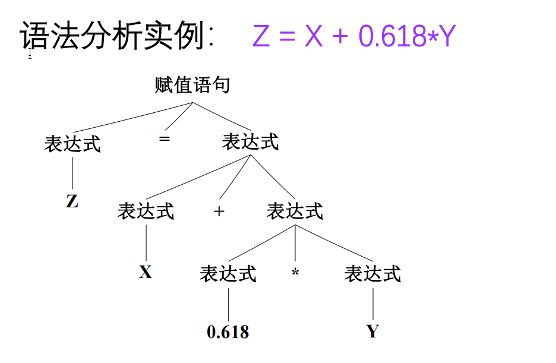
③ 语义分析（Semantic Analysis）：
- 功能：分析由语法分析器给出的语法单位的语义
- 获取标识符的属性（类型、作用域等）
- 语义检查（运算的合法性、取值范围等）
- 变量的静态绑定（数据的相对地址）
- 子程序的静态绑定（代码的相对地址）
④ 中间代码生成：
- 中间代码：独立于具体硬件的记号系统
- 依据语义规则（语法制导的映射规则和处理代码，将语法结构单元映射为中间代码指令）
- 优点：简单规范、与机器无关、易于优化和转换
- 形式示例：
- \(a+b*c\) 的四元式为 \((*, b, c, T1); (+, a, T1, T2)\)；
- \(a+b*c\) 三元式为 \((*, b, c); (+, a, (1))\)
⑤ 代码优化：
- 对中间代码进行等价变换，以获取更高的执行效率（提高运行速度、节省存储空间）
- 与机器无关的优化：局部优化（常量合并、公共子表达式提取）、循环优化（强度削减、代码外提）
- 与机器有关的优化：寄存器利用、体系结构（SIMD/MIMD/向量机）、存储策略（Cache/并行存储）、任务规划
⑥ 目标代码生成：
- 将中间代码转换成目标机上的机器指令代码或汇编代码
- 如果产生的目标代码是汇编指令或可重新定位指令，还需汇编或连接装配程序
Note
阶段识别考题：
| 错误信息 | 对应阶段 |
|---|---|
| "else没有匹配的if" | 语法分析 |
| "声明和使用的函数没有定义" | 语义分析 |
| "不能构成任何单词的字符" | 词法分析 |
| "数组下标越界" | 语义分析 |
1.3 编译程序的结构
1.3.1 编译程序的总体结构
源代码程序 → [词法分析器] → Token序列 → [语法分析器] → 语法分析树
→ [语义分析与中间代码生成器] → 中间代码序列
→ [代码优化器] → 优化后的中间代码
→ [目标代码生成器] → 目标代码序列
符号表 ↔ 符号表 ↔ 符号表（贯穿各阶段）
错误处理 ↔ 错误处理 ↔ 错误处理（贯穿各阶段）
完整翻译示例：\(position := initial + rate * 60\)
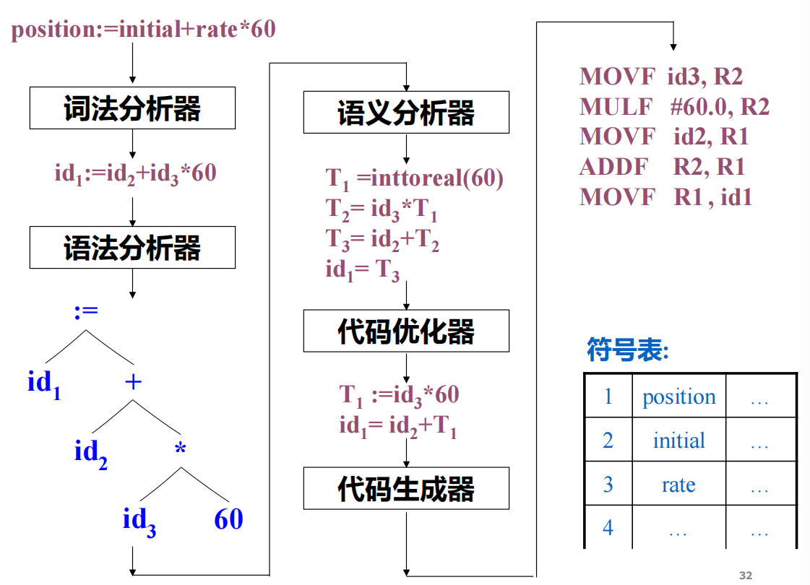
1.3.2 各功能模块*
词法分析（线性分析）：根据词法规则对构成源程序的字符串进行解析识别，得到词法单元串。
语法分析（层次分析）：根据语法规则把词法单元串解析为由各类语法单位构成的结构（短语、子句、程序段等）。
语义分析和中间代码生成：根据语法制导的翻译规则，分析语法单位及其结构的含义，进行翻译产生中间代码串。
优化：对前段产生的中间代码进行加工变换，产生更高效（省空间、时间、能耗等）的目标代码。
目标代码生成：把经过优化处理的中间代码变换成机器上的机器语言代码。
1.3.3 符号表管理*
符号表结构：NAME（名字）+ INFORMATION（信息）
符号表管理程序：负责表格的构造、查找和更新。管理各种符号（常数、标号、变量、过程、结构……）：
- 查找、填写源程序中出现的符号和编译程序生成的符号，为编译的各阶段提供信息
- 辅助进行语法检查、语义检查
- 完成绑定、管理编译过程
- 利用Hash表、链表等各种查填表技术完成处理
1.3.4 错误处理*
进行各种错误的检查、报告、纠正及相应的编译处理：
- 词法错误：拼写错误（非法字符）
- 语法错误：表达式结构错误（括号不匹配）……
- 语义错误：重复声明、类型不匹配……
1.3.5 遍（Pass）
遍：对源程序或源程序的中间结果从头到尾扫描一遍，并做相关的加工处理，生成新的中间结果或目标程序。
- 遍可以和阶段相对应，也可无关
- 分遍处理可以使编译程序的结构清晰，但增加了I/O时间
- 影响分遍的因素：某些语言的特殊需要、全局优化需要、内存不够等
如果有过编译latex的经验，或许可以理解，第一次编译latex的话，它的引用是没有做好的，需要二次编译才会加上
1.3.6 编译的前端和后端
| 范围 | 包含阶段 | |
|---|---|---|
| 前端（Front End） | 与源程序有关、与目标机无关 | 词法分析、语法分析、语义分析与中间代码生成、与机器无关的代码优化 |
| 后端（Back End） | 与目标机有关 | 与目标机有关的代码优化、目标代码生成 |
1.4 编译程序与程序设计环境*
1.4.1 程序设计环境
程序设计环境包括：编译程序、解释程序、汇编程序、连接程序（Linker）、载入程序（Loader）、预处理程序、调试程序、编辑器、项目管理程序
集成化程序设计环境（IDE）：将相互独立的程序设计工具集成，提供完整的、一体化的支持环境。
1.4.2 编译系统
编译系统 = 编译程序 + 运行系统
1.4.3 编译系统的技术标准
标准的作用：
- 提高编译的速度
- 确认执行程序的结果
- 支持用户程序的调试
- 建设良好的程序开发支持环境（运行系统、运行环境、丰富的类库、程序预处理等）
- 指导完成程序的优化
- 指导编译系统的维护工作
1.4.4 语言处理系统
第2章 词法分析
对应课件：
2-词法分析.pdf（原龙书第3章，课件编号3.1-3.9节）。历年试卷第1大题固定考词法分析相关（25分，5小问\(\times5\)分）。
2.1 词法分析器的作用（课件3.1节）
⭐⭐⭐ 【高频考点·主要在第1大题】 词法单元的定义、三个术语的区别是基础。
2.1.1 词法分析器的任务
- 对源程序进行词法单元的识别、检查、分离和提取（即"分词"）。
- 将以字符序列文件形式表示的源程序，转变成以内部数据结构形式表示的Token序列。
- 输入：源程序文件 —— ASCII字符序列
- 输出：Token序列 —— (词法单元名/类别, 属性值) 二元组序列
功能框图：
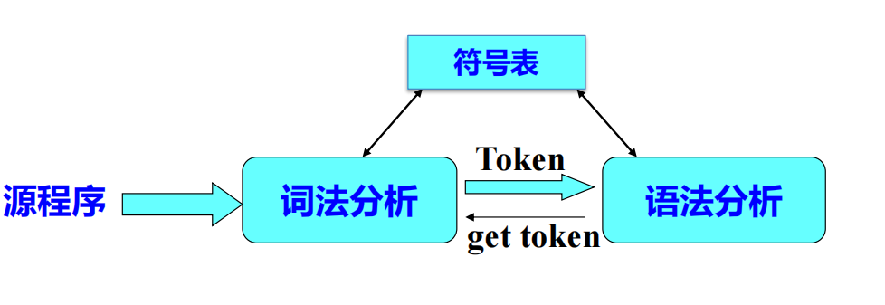
⭐ 【经典判断题】 "编译的哪个阶段报错：不能构成任何单词的字符 \(\rightarrow\) 词法分析阶段"
2.1.2 词法单元（Token）
词法单元包括：词法单元名和相应的属性值
词法单元名的种类（五种）：
① 关键字：程序语言定义的具有固定意义的标识符（如 for, while）
② 标识符：表示各种名字（变量名、数组名等）
③ 常数：整型、实型等类型的常数
④ 运算符：+, -, *, / 等
⑤ 界符：逗号、分号、括号、/*, */ 等
属性值：
- 关键字、运算符、界符的属性值可以省略
- 标识符的属性值：名字（指向符号表项的指针）
- 常数的属性值：值
存储模式：表示为二元组 —— （词法单元名/类别，属性值）
2.1.3 三个相关但有区别的术语 ★
⭐⭐ 【常考概念辨析】 考试中常在选择题或简答题中区分这三个概念。
| 术语 | 英文 | 定义 |
|---|---|---|
| 词素 | Lexeme | 源程序中的一个字符序列，是词法单元的具体实例。词法分析器通过将词素的字符序列与模式匹配成功后，确认该词素属于某词法单元 |
| 模式 | Pattern | 描述了一个词法单元的词素具有的组成结构的形式。对关键字，模式就是组成关键字的字符序列本身；对标识符，模式是一个正则表达式 |
| 词法单元 | Token | 由词法单元名和可选的属性值组成。词法单元名是供语法分析器处理的输入符号（抽象符号），通常用黑体字表示 |
Example
例：在C语句 printf("Total = %d\n", score); 中
printf和score都是和词法单元 id 的模式能匹配的 词素"Total = %d\n"是和 literal 的模式能匹配的 词素
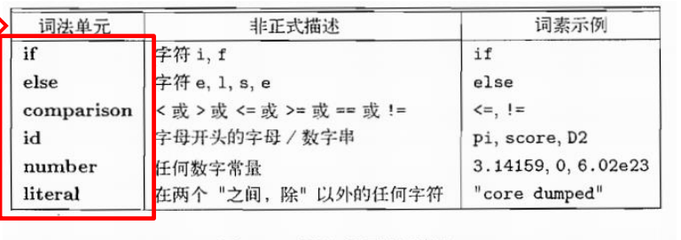
2.1.4 词法分析器的两种设计方式*
⭐ 【理解概念即可】
方式一：词法分析器作为独立的一遍扫描过程
- 词法分析是编译过程中独立的一个阶段，在语法分析阶段前进行
- 将源程序从头到尾扫描一遍，将字符序列完整转换为Token序列后再交给语法分析器
方式二：词法分析器作为子程序
- 词法分析和语法分析结合在一起作为一遍
- 由语法分析程序调用词法分析程序（
getToken()），每调用一次返回一个Token - 语法分析器主导，词法分析器被动响应
把词法分析和语法分析分为两个不同部分的原因（三点）：
- 简化编译器的设计：分离关注点，每部分独立设计
- 提高编译器的开发效率：可以使用更高效的专门技术实现词法分析器（如基于DFA的识别器）
- 增强编译器的可移植性：与设备相关的特征、语言字符集的特殊处理，都可封装在词法分析器中
2.2 输入缓冲区的设计（课件3.2节）
2.2.1 输入与预处理
- 词法分析器的输入串存放在输入缓冲区中，分析工作直接在缓冲区内完成
- 预处理：删除无用的符号（注释、空白等），得到有效的字符串
2.2.2 超前搜索
在对词素进行识别时，需向前多扫描几个字符，直到模式匹配成功、可以确定它的词法单元名时为止。
Note
经典例子（Fortran语言）：
- Fortran中空白可有可无且不作分隔符，因此必须超前搜索才能区分
2.2.3 双缓冲区设计方案*
两个指针：
lexemeBegin：指向当前词素的开始位置forward：向前扫描指针
双缓冲区（part1 和 part2）交替加载源程序文本：
- 一个缓冲区读完时加载下一段，同时处理另一个缓冲区
- 支持forward指针在缓冲区之间平滑穿越
移动forward指针的算法：每读入一个字符，forward前进一个位置；确定词素后，lexemeBegin跳到forward位置
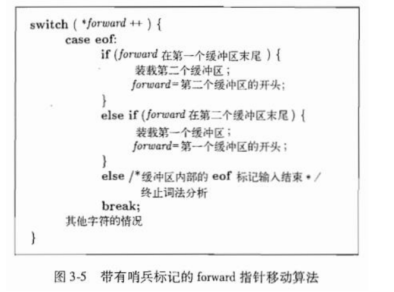
设置双缓冲区时应考虑的问题：
- 缓冲区大小的确定原则：平衡读取效率和词法单元实例的长度
- 缓冲区上的搜索与超前搜索策略
2.3 词法单元的规约（课件3.3节）
⭐⭐⭐ 【高频考点·必考正则表达式】 历年试卷第1大题(5)小问固定考写正则表达式（5分），第1大题(4)小问固定考用自然语言描述语言。
2.3.1 串和语言
字母表（Alphabet）\(\Sigma\)：一个非空的有限符号的集合。字母表中的元素称字母（letter）或符号（character）。
例：\(\Sigma\) = {a, b}、\(\Sigma\) = {0, 1}
符号串（String）：由字母表\(\Sigma\)中的符号构成的有穷序列（也称"字"）。归纳定义：
- \(\varepsilon\)（空字）是\(\Sigma\)上的一个符号串
- 若x是\(\Sigma\)上的符号串，a是\(\Sigma\)中元素，则xa也是\(\Sigma\)上的符号串
- y是\(\Sigma\)上的符号串，当且仅当它由①和②导出
\(\emptyset\) 表示不含任何元素的空集{}；\(\Sigma\)* 表示\(\Sigma\)上所有符号串的全体
2.3.2 语言上的运算
符号串的运算：
① 符号串的连接：将y拼接在x后面得到的符号串。
例：\(𝑥 = 𝑎𝑏, 𝑦 = 01 \rightarrow 𝑥𝑦 = 𝑎𝑏01\)
-
方幂：\(𝑥^0\) = \(\varepsilon\), \(𝑥^1=𝑥, …, 𝑥^n=𝑥^{n-1}𝑥\)
例：𝑥 = 𝑎𝑏, \(𝑥^2\) = 𝑎𝑏𝑎𝑏, \(𝑥^3\) = 𝑎𝑏𝑎𝑏𝑎𝑏
② 符号串集合的积（连接）：\(UV = \{\alpha\beta | \alpha \in U \& \beta \in V\}\)
例：\(U = {0,1}, V = {𝑎,𝑏} \rightarrow UV = {0𝑎, 0𝑏, 1𝑎, 1𝑏}\)
-
n次连接积：\(V^n = V^{n-1}V（𝑛 \geq 1），V^0 = \{\varepsilon\}\)
例：\(V = \{0,1\}, V^3 = \{000, 001, 010, 011, 100, 101, 110, 111\}\)
③ 闭包：
- 克林闭包（Kleene Closure）：\(V* = V^0 \cup V^1 \cup V^2 \cup …\)（零次或多次）
- 正则闭包（Positive Closure）：\(V^+ = VV* = V^1 \cup V^2 \cup V^3 \cup …\)（一次或多次）
就是多一个空集 \(\{\epsilon\}\)
语言（Language）：字母表上任意一个字符串集合。
- 空集\(\emptyset\)和仅含空符号串的集合{\(\varepsilon\)}也是语言
- 语言上的运算：并、连接和闭包
- 若\(\forall L(L \subseteq \Sigma^*)\)，则L是字母表\(\Sigma\)上的一个语言；若\(\forall 𝑥(𝑥 \in L)\)，则𝑥为L中的一个句子
- 有穷语言\(\rightarrow\)枚举法描述；无穷语言\(\rightarrow\)用有穷方法描述（文法、自动机）
2.3.3 正则表达式（Regular Expression）
Example
digit 表示数字0,1,2...9，letter 表示字母 A,B...Z,a,b,...z
则可以有对应正则式：letter(letter|digit)*
我们约定正则式表示为 r ，相应的正则集表示为 L(r)
正则式的递归定义（设 \(\Sigma\)是一个字母表）： ① \(\varepsilon\)是\(\Sigma\)上的正则表达式，L(\(\varepsilon\)) = {\(\varepsilon\)} ② 对于\(\forall a \in \Sigma\)，\(a\)是正则表达式，L(𝑎) = {𝑎} ③ 如果r和s是\(\Sigma\)上的正则表达式，则：
- (r)|(s) 也是正则表达式，\(L(r|s) = L(r) \cup L(s)\)（并）
- (r)(s) 也是正则表达式，L(rs) = L(r)L(s)（连接）
- (r)* 也是正则表达式，
L(r*) = (L(r))*（闭包） - (r) 也是正则表达式，L((r)) = L(r)
- 正则表达式所表示的语言称为正则集
运算优先级：* > 连接 > |，均为左结合。如：r|s = r|(s)
Note
可以取一个很小的字母表：
现在构造正则表达式：
它表示“由若干个 \(a\) 或 \(b\) 组成，并且最后三个字符是 \(abb\) 的所有字符串”。下面按照递归定义一步步构造它。
首先，由定义②，\(a\) 和 \(b\) 都是正则表达式：
接着使用并运算构造 \(a|b\)：
这表示当前位置可以取字符 \(a\)，也可以取字符 \(b\)。
再对 \(a|b\) 使用闭包运算：
星号表示重复零次、一次、两次或更多次。重复零次时得到空串 \(\varepsilon\)，因此 \(\varepsilon\) 也属于这个语言。
然后逐步连接末尾的 \(a\)、\(b\)、\(b\)：
连接运算表示把前面语言中的字符串与后面的字符依次拼接。例如：
因此，这个正则表达式能够生成：
这些字符串都以 \(abb\) 结尾。
再看一个只涉及连接和并运算的简单例子：
其中：
所以：
这里的含义是：先出现一个 \(a\)，后面可以接一个 \(b\)，也可以接空串。于是最终得到 \(ab\) 或 \(a\)。
运算优先级可以直接套到下面这个式子：
先计算闭包：
再计算连接：
最后计算并：
因此，它表示的语言为：
整个递归定义的实际作用，是从三个最基本的对象开始：空串 \(\varepsilon\)、单个字符、已经构造出的正则表达式；随后反复使用并、连接、闭包和括号，逐层构造更复杂的正则表达式。
代数定律（假设r, s, t均为正则式）：
| 定律 | 公式 | 说明 |
|---|---|---|
| 并的交换律 | r|s = s|r | |
| 并的结合律 | (r|s)|t = r|(s|t) = r|s|t | |
| 连接的结合律 | r(st) = (rs)t = rst | |
| 分配的分配律 | r(s|t) = rs|rt; (r|s)t = rt|st | |
| 零一律 | \(\varepsilon\) r = r \(\varepsilon\) = r | \(\varepsilon\)是连接的单位元 |
| 并的抽取律 | r|r = r | |
| 闭包展开 | r* = \(\varepsilon\)|r|rr| … |
正则等价：若两个正则式\(r_1\)和\(r_2\)的正则集相同，则\(r_1 = r_2\)。例：𝑏(𝑎𝑏) = (𝑏𝑎)𝑏
正则表达式实例（\(\Sigma\) = {𝑎, 𝑏}）：
| 正则式 r | 正则集 𝑳(r) |
|---|---|
| (𝑎|𝑏)(𝑎|𝑏) | 由𝑎和𝑏组成的长度为2的字 |
| 𝑏𝑎* | \(\Sigma\)上所有以𝑏为首后跟任意多个𝑎的字 |
| 𝑎(𝑎|𝑏)* | \(\Sigma\)上所有以𝑎为首的字 |
(𝑎|𝑏)*(𝑎𝑎|𝑏𝑏)(𝑎|𝑏)* |
\(\Sigma\)上所有含有两个相继的𝑎或𝑏的字 |
正则表达式实例（\(\Sigma\) = {0, 1}）：
| 正则式 r | 正则集 𝑳(r) |
|---|---|
0*10* |
{𝑤 | 𝑤恰好有一个1} |
| \(\Sigma\) * 1\(\Sigma\) * | {𝑤 | 𝑤至少有一个1} |
| \((\Sigma\Sigma)^*\) | {𝑤 | 𝑤是偶长度的字符串} |
| 0\(\Sigma\) * 0 | 1\(\Sigma\) * 1 | 0 | 1 | {𝑤 | 𝑤以相同的字符开始和结束} |
2.3.4 正则表达式的扩展
为了书写方便引入的扩展语法：
| 扩展 | 符号 | 含义 | 示例 |
|---|---|---|---|
| 一次或多次重复 | + |
(0|1)(0|1)* = (0|1)^+ | |
| 任意一个字符 | . |
匹配任意字符 | .*b.* 包含至少一个b的串 |
| 字符范围 | [...] 和 - |
字符类 | [a-z] 表示小写字母 |
| 不在给定集合中的字符 | ~ |
取反 | ~(a|b) 非a和b的字符 |
| 可选的子表达式 | ? |
r? = r | \(\varepsilon\) | (+|-)?[0-9]+，一个可选的正负号（没有也可以），后面跟一个或多个数字 |
2.3.5 正则定义（Regular Definition）
正则定义：为字母表\(\Sigma\)上的正则式命名，以便引用：
其中每个 \(𝑑_i\)都是不同的名字，每个 \(r_i\) 是 \(\Sigma \cup \{𝑑_1, …, 𝑑_{i-1}\}\) 上的正则式（\(r_i\) 中只能引用之前已定义的名字）。
Example
𝑙𝑒𝑡𝑡𝑒𝑟 \(\rightarrow\) 𝐴|𝐵| … |𝑍|𝑎|𝑏| … |𝑧 𝑑𝑖𝑔𝑖𝑡 \(\rightarrow\) 0|1| … |9 𝑖𝑑 \(\rightarrow\) 𝑙𝑒𝑡𝑡𝑒𝑟(𝑙𝑒𝑡𝑡𝑒𝑟|𝑑𝑖𝑔𝑖𝑡)*
2.3.6 非正则集
有些语言无法用正则表达式描述——正则表达式不能描述均衡结构或嵌套结构。
配对括号的符合串集合 \(\rightarrow\) 不能用正则式描述，但可以用上下文无关文法（CFG）描述
- 正则表达式可以表示给定结构的固定次数或未指定次数的重复，但不能处理嵌套/均衡
2.4 词法单元的识别（课件3.4节）
2.4.1 状态转换图
⭐⭐⭐ 【重要概念】 状态转换图是从词法模式到手写词法分析器代码的中间桥梁。
状态转换图（Transition Diagram）：一种有向图
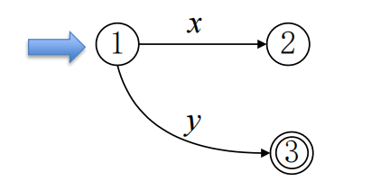
- 结点：代表状态（圆圈表示），包含初态和若干终态
- 箭弧：连接状态，弧上标记为输入字符或字符类
- 有穷个状态，有唯一的初态和若干个终态
识别过程：
- 从初态出发
- 读入一个字符
- 根据当前字符，选择转入下一状态
- 重复步骤2、3直到无法继续转移时为止
比较像链表
识别结论：
- 如果当前字符是词法单元界符，且当前状态是终止状态 \(\rightarrow\) 已组成一个词法单元
- 否则 \(\rightarrow\) 输入不符合词法规则
2.4.2 状态转换图实例
例1：识别标识符和关键字的状态转换图
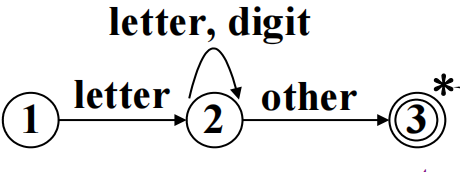
* 表示forward指针必须回退一个字符
处理逻辑：在符号表中查找该词素——
- 是关键字 \(\rightarrow\) 返回关键字对应编码
- 是标识符 \(\rightarrow\) 返回指向符号表表项的指针（不存在则新建并返回）
例2：识别C语言无符号整数
| 进制 | 正则表达式 |
|---|---|
| 八进制 (OCT) | 0(0|1|…|7)(0|1|…|7)* |
| 十进制 (DEC) | (1|…|9)(0|1|…|9)* | 0 |
| 十六进制 (HEX) | 0X(0|…|9|a|…|f|A|…|F)(0|…|9|a|…|f|A|…|F)* |
状态转换图（八进制）：
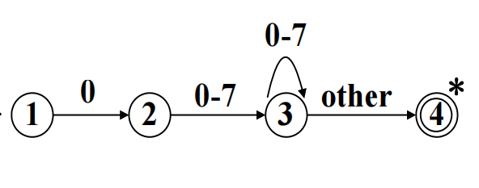
2.4.3 依据状态转换图实现词法分析器
- 词法分析器复杂度 ∝ 状态数 + 边数（把关键字看作特殊标识符，可简化）
- 每个状态对应一个代码段。完整处理过程：
- 若状态具有出边 \(\rightarrow\) 读入字符，选择应跟随的边
- 若存在标记匹配的边 \(\rightarrow\) 转入对应状态的处理代码
- 若不存在这样的边且当前状态不是接受状态 \(\rightarrow forward\)指针回退，启动下一状态转换图
- 若无下一状态转换图可用 \(\rightarrow\) 调用错误处理程序
2.4.4 基于状态转换图的词法分析器体系结构
getRelop() 函数示例（识别比较运算符的C++函数）：
- 核心是
switch语句：状态图中的每个状态对应case分支 - 状态变量
state表示当前状态 - 返回一个TOKEN对象（词法单元名relop + 属性值即6种比较运算符之一的编码）
模拟状态图程序的结构很简单：
- 整个方法的核心是一条
switch语句 - 每个状态对应
case分支
2.5 有穷自动机（课件3.6节）
⭐⭐⭐ 【高频考点·必考大题】 第1大题(1)-(3)小问固定考NFA接受过程、\(NFA\rightarrow DFA\)子集构造法、DFA最小化（共15分）。
2.5.1 有穷自动机的引入
- 语言识别器：以字符串𝑥为输入，当𝑥是语言的句子时回答"是"，否则回答"否"
- 通过构造有穷自动机，把正则表达式编译成词法单元的识别器
- 有穷自动机是更理论化、一般化的状态转换图，可以是确定的或不确定的
- "不确定"的含义：对于某个输入符号，在同一个状态上存在不止一种转换
2.5.2 确定的有穷自动机（DFA）
定义：DFA M 是一个五元式：\(M = (\Sigma, S, T, s_0, A)\) ① \(\Sigma\)：有穷字母表，每个元素称为输入字符 ② S：有限集，每个元素称为一个状态 ③ T：从 \(S \times \Sigma\) 至 \(S\) 的映射，即 T(s, 𝑎) = s' 表示：当状态为s且输入为𝑎时转移到s' \(④ s_0 \in S\)：唯一的初态 \(⑤ A \subseteq S\)：终态集（接受状态集）
DFA的确定性：映射 \(T: S \times \Sigma \rightarrow S\) 是一个函数（单值），即对于\(\forall s \in S\)和\(\forall a \in \Sigma\)，T(s, 𝑎) 唯一确定下一个状态。
DFA状态转换图：
- 𝑚个状态结点，每个结点最多射出𝑛条弧（𝑛 = |\(\Sigma\)|），每条弧以不同的输入字符标记
- 唯一初态结点，若干个终态结点
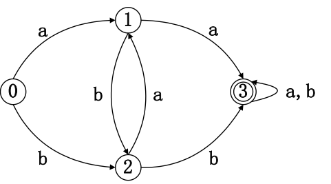
DFA识别串的定义：若对于 \(\forall\alpha \in \Sigma\)*，存在一条从初态到终态的路径，该路径上所有弧的标记符连接成的字等于 \(\alpha\)，则称 \(\alpha\) 可被DFA M识别。
定理：\(\Sigma\) 上的一个字符串集合 \(V \subseteq \Sigma\)* 是正则语言，当且仅当存在 \(\Sigma\) 上的一个DFA M，使得V = L(M)。
DFA的算法模拟：
𝑠 = 𝑠₀
𝑐 = nextchar()
while 𝑐 \neq eof do
𝑠 = move(𝑠, 𝑐)
𝑐 = nextchar()
if 𝑠 in 𝐴 then return "yes" else return "no"
状态转换矩阵的优缺点：
- 优：快速确定状态在给定字符上的转换
- 缺：输入字母表过大且大多数转换为空时，耗费空间
2.5.3 非确定的有穷自动机（NFA）
定义：NFA M 是一个五元式：\(M = (\Sigma, S, T, S_0, A)\) ① \(\Sigma\)：有穷字母表 ② S：有穷状态集 ③ T：从 \(S \times \Sigma*\) 到 S 的幂集 \(\mathcal{P}(S)\) 的映射（多值映射） \(④ S_0 \subseteq S\)：非空的初态集合（可以有多个初态） \(⑤ A \subseteq S\)：接收集（终态集）
NFA状态转换图特征：
- 从每个结点出发有若干条箭弧与其他结点相连，每条弧用 \(\Sigma\) *中的一个字（可为 \(\varepsilon\)）作标记
- 至少含有一个初态结点，若干个终态结点
- 可以有 多条 同一输入符号的转移边（比如下图的1->3和1->1)
- 可以有 \(\varepsilon\) 转移（不消耗输入符号的状态转移）
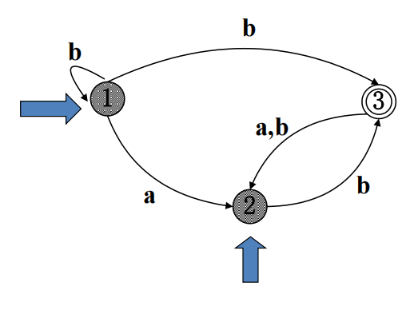
NFA接受字符串：存在一条从初态到终态的路径，其标记符连成的字等于输入串。
Example
NFA M如下，可以识别含有连续两个a/b的字
M=({a,b},{X,Y,1,2,3,4,5,6},\(\delta\),{X},{Y})
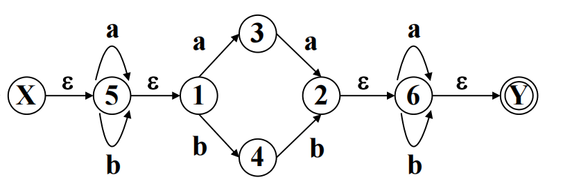
2.6 从正则表达式到自动机（课件3.7节）
⭐⭐⭐ 【必考核心】 整个第1大题围绕此知识点展开。
2.6.1 从NFA到DFA的转换——子集构造法（课件3.7.1）
定理：对于任意一个NFA M，存在一个DFA M''，使得L(M) = L(M'')。
证明方法（构造性证明）——两步变换：
第一步：对NFA M的状态转换图进行改造，去掉箭弧标记的不确定性。
- 引入新初态X和新终态Y（\(X,Y \notin S\)）
- 从X到\(S_0\)中任意状态连\(\varepsilon\)箭弧，从A中任意状态连\(\varepsilon\)箭弧到Y
- 用替换规则将每条弧的标记简化为\(\Sigma\)中单个字母或\(\varepsilon\)：
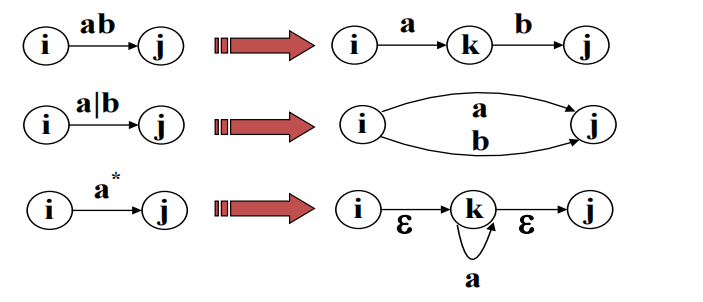
- 得到NFA M'，有L(M') = L(M)
加入中间态，按照约定来介入就可以
第二步：去除所有 \(\varepsilon\) 箭弧带来的不确定性，转换得到DFA M''。
核心定义：
| 操作 | 定义 |
|---|---|
| \(\varepsilon\_closure(s)\) | 从状态s出发，只通过 \(\varepsilon\) 转换能到达的所有状态的集合（含s自身） |
| move(T, 𝑎) | 从T中任一状态出发，经过一条标号为𝑎的转换可到达的所有状态 |
| \(I_a = \varepsilon\_closure(move(𝐼, 𝑎))\) | 从状态集𝐼经输入𝑎到达的状态集的 \(\varepsilon\) 闭包 |
看起来很难，下面讲一个例子就看懂了
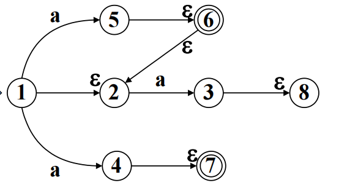
如上图所示，我们计算一下 \(\varepsilon\_closure(I)\)
- \(I=\{1\}\)，那么1通过 \(\varepsilon\) 条件只能到2,所以 \(\varepsilon\_closure(I)=\{1,2\}\)
- \(I=\{5\}\)，通过 \(\varepsilon\) 可以到 6,然后到2，所以 \(\varepsilon\_closure(I)=\{5,6,2\}\)
然后如果 \(I=\{1,2\}\)，我们计算 \(I_a\)，也就是 \(\varepsilon\_closure(move(I,a))\)
- 1通过a条件可以到5,4；2通过条件 a 可以到 3。所以 \(move(I,a)=\{5,4,3\}\)
- 也就是接下来计算 \(\varepsilon\_closure(\{5,4,3\})=\{2,3,4,5,6,7,8\}\)
子集构造表算法（暴力枚举）
- 设\(\Sigma\) = \(\{𝑎_1, …, 𝑎_k\}\)，构造𝑘 + 1列的二维表
- 表首行首列 = \(\varepsilon\_closure({X})\)
- 对表中每个未处理的状态集𝐼和每个输入 \(𝑎_i\)：
- 计算 \(𝐼_{a_i}\)，填入该行的 𝑖+1 列
- 若 \(𝐼_{a_i}\) 未在第一列出现过，将其作为新行加入第一列
- 重复直到表的所有列元素都在第一列出现过
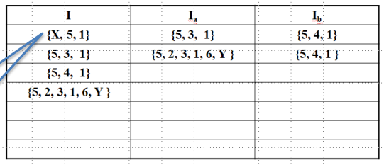
上图是这张图的子集构造表
最终得到
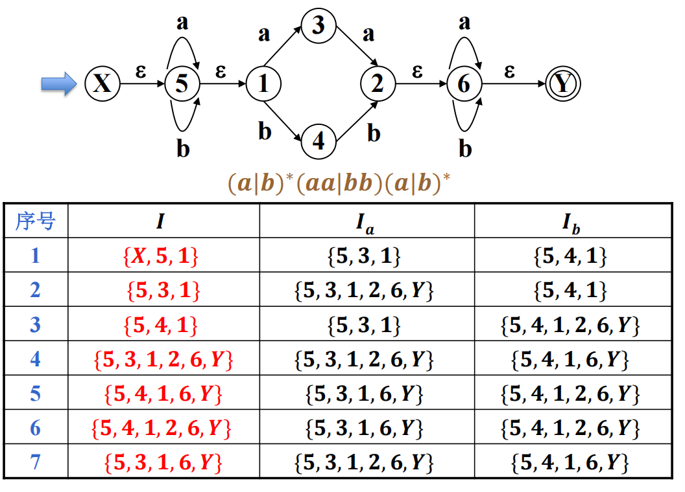
然后我们根据序号，每个I作为一个节点，得到如下
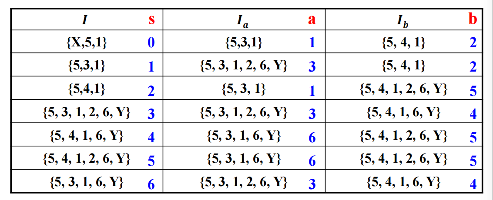
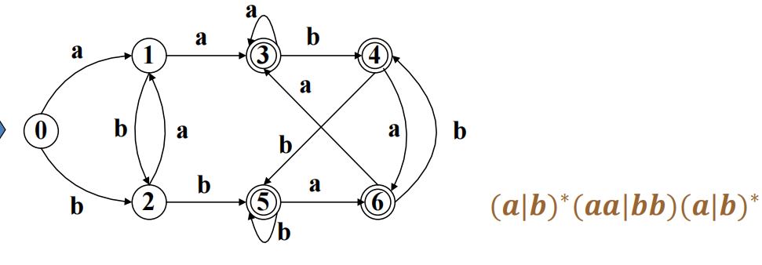
2.6.2 子集构造算法（算法3.20）详注
输入：一个NFA N 输出：一个接受相同语言的DFA D
算法伪码核心：
Dstates = {$\varepsilon\_closure(s_0)$} // 未标记
while Dstates中存在未标记状态T do
标记T
for each 输入符号a do
U = $\varepsilon$-closure(move(T, a))
if U不在Dstates中 then
Dstates = Dstates \cup {U} // 未标记
Dtran[T, a] = U
\(\varepsilon\_closure(T)\) 的计算 基于栈的图搜索——初始化栈为T的所有状态，不断弹栈并将通过\(\varepsilon\)边可达的新状态压栈、加入结果集，直到栈空。
2.6.3 从正则表达式构造NFA（课件3.7.4）
McMaughton-Yamada-Thompson算法（算法3.23）：
- 语法制导的构造方法，沿正则表达式的语法分析树自底向上递归处理
- 为每个子表达式构造一个 只有一个接受状态 的NFA
基本规则（构造不含运算符的子表达式）：
- 表达式 \(\varepsilon\)：构造NFA \(i \xrightarrow{\varepsilon} f\)（𝑖和𝑓是新的开始/接受状态）
- 表达式 𝑎：构造NFA \(i \xrightarrow{a} f\)（𝑖和𝑓是新的开始/接受状态）
- 每次出现 \(\varepsilon\) 或𝑎时都使用新的状态名构造独立的NFA
归纳规则（组合已有NFA）：
① 并（r = s|t）：
- 新建状态𝑖和𝑓
- 从𝑖连 \(\varepsilon\) 弧到N(s)和N(t)的开始状态
- 从N(s)和N(t)的接受状态各连 \(\varepsilon\) 弧到𝑓
- N(s)和N(t)的接受状态不再是接受状态
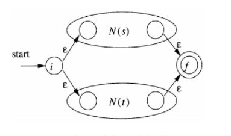
② 连接（r = st）：
- N(r)的开始状态 = N(s)的开始状态
- N(r)的接受状态 = N(t)的接受状态
- N(s)的接受状态和N(t)的开始状态合并为一个状态
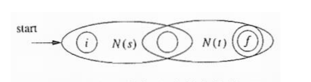
③ 闭包（r = s*）：
- 新建状态𝑖和𝑓
- 从𝑖连\(\varepsilon\)弧到𝑓（直接经过空串），也连\(\varepsilon\)弧到N(s)的开始状态
- 从N(s)的接受状态连\(\varepsilon\)弧回到N(s)的开始状态（重复），也连\(\varepsilon\)弧到𝑓
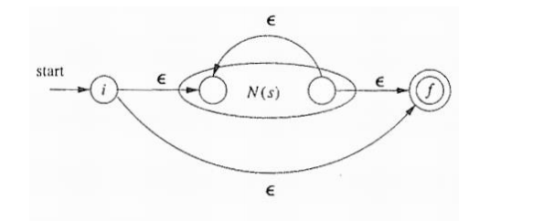
④ 括号（r = (s)）：直接将N(s)作为N(r)
构造得到的NFA的性质： ① 状态数最多为r中运算符和运算分量总数的2倍（每构造步最多引入2个新状态） ② 有且只有一个开始状态和一个接受状态。开始状态无入边，接受状态无出边 ③ 除接受状态外，每个状态要么有一条\(\Sigma\)中符号的出边，要么有两条\(\varepsilon\)出边
RE与FA的等价性：
- 对于任何FA M，存在正则式r，使L(M) = L(r)
- 对于任何正则表达式r，存在FA M，使L(r) = L(M)
识别字符串的两种策略： ① 为正则式r构造NFA，直接用NFA去识别 ② 构造NFA后，用子集构造法转为DFA，再用DFA去识别（DFA更快）
复杂度分析：
| 自动机 | 初始成本 | 每个字符串的成本 |
|---|---|---|
| NFA | $𝑂( | r |
| DFA（一般情况） | $𝑂( | r |
| DFA（最坏情况） | $𝑂(2^{ | r |
2.6.4 DFA的最小化（课件3.9.6节）
⭐⭐⭐ 【高频考点】 第1大题(3)小问固定考DFA最小化（5分）。
等价状态：设\(s, t \in S\)，A是接受状态。若对于 \(\forall\alpha \in \Sigma\)，\(T(s,\alpha)\in A\) 当且仅当 \(T(t, \alpha) \in A\)，则称s和t是等价的；否则称s和t是 可区分的*。
两个状态等价的充要条件： ① 一致性条件：s和t必须同为接受状态或同为非接受状态 ② 传播性条件：对于\(\forall a \in \Sigma\)，如果T(s, 𝑎) = 𝑝，T(t, 𝑎) = 𝑞，那么𝑝和𝑞也必须等价
判定不等价：只要找到一个 \(\alpha \in \Sigma^*\)，使 \(T(s, \alpha) \in A\) 而 \(T(t, \alpha) \notin A\)，或相反。
最小化算法（CreateNewPar构造法）：
- 初始划分：Π = {F, S - F}（终态组和非终态组）
- 迭代划分：对当前划分Π中的每一组 \(𝐼^{(^i)} = {𝑞_1^{(^i)}, …, 𝑞_k^{(^i)}}\)：
- 对于每个输入字符𝑎，计算 \(𝐼_a^{(^i)}\)
- 若 \(𝐼_a^{(^i)}\) 落入当前划分Π的N个不同子集中，则将 \(𝐼^{(^i)}\) 拆分为N个不相交的新子集
- 使每个新子集J对任意输入𝑎的 Jₐ 都落入同一子集
- 重复步骤2直到Π不再变化，得到最终划分 \(Π_{final}\)
- 构造最小DFA：
- 每个等价类选一个代表 \(\rightarrow\) 新状态集S'
- 若\(𝑘 \in S'\)且T(𝑘, 𝑎) = t，则T'(𝑘, 𝑎) = r（r为t所在等价类的代表）
- 开始状态\(s_0' =\) 含\(s_0\)的等价类的代表
- 接受状态集A' = 含原A中元素的那些等价类的代表
- 删除死状态：删除从开始状态不可达的状态和死状态（对所有输入都自转的非终态）
结论：接受一个语言L的最小状态DFA是唯一的（不计同构）。
完整流程小结：正则表达式 \(\rightarrow [\)结构归纳法\(] \rightarrow NFA \rightarrow [\)子集构造法\(] \rightarrow DFA \rightarrow [\)等价状态构造法\(] \rightarrow\) 最小DFA（唯一）
Note
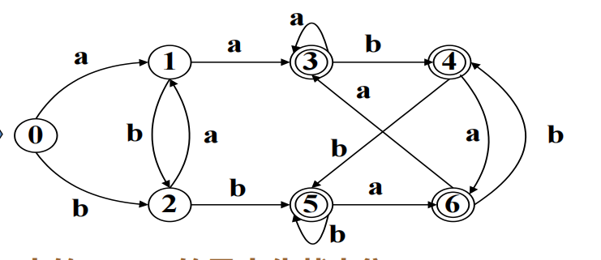
S 的初始划分为：
考察状态集合 \(\{0,1,2\}\)：因
而 \(\{1,3\}\) 目前在不同的等价集中，所以要对状态集合 \(\{0,1,2\}\) 进行拆分。
因为有
所以拆分为
考察状态集合 \(\{3,4,5,6\}\)：由于
因此，状态集合 \(\{3,4,5,6\}\) 保持在同一个等价集中。
再考察状态集合 \(\{0,2\}\)： 因
而 \(\{2,5\}\) 目前在不同的等价集中，所以要对状态集合 \(\{0,2\}\) 进行拆分。
因为有
所以拆分为
接下来我们得到如下所示的自动机
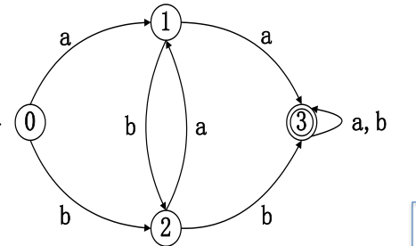
2.7 词法分析器生成工具（课件3.5节）
2.7.1 常见工具
| 工具 | 说明 |
|---|---|
| Flex | 生成C语言词法分析器 |
| Flex++ | 生成C++语言词法分析器 |
| Byacc | Berkeley Yacc，生成C语言语法分析器 |
| ANTLR | 可生成Java/C++的词法和语法分析器 |
| JavaCC | Java版的Lex+ Yacc |
2.7.2 Lex程序
Lex编译器的工作流程：将输入的词法模式转换成一个状态转换图，生成模拟该图的C代码（存于 lex.yy.c 中）。
Lex程序的三段式结构：
Lex词法分析器与语法分析器的协同工作：
- 语法分析器调用词法分析器
- 词法分析器从余下输入中逐个读字符，发现最长匹配的模式\(P_i\)
- 执行相应动作\(A_i\)（动作执行完后控制返回语法分析器）
- 词法分析器向语法分析器返回一个值——词法单元名
- 通过共享整型变量
yylval传递词素的附加信息
例3.11（图3-23）：一个识别图3-12中各词法单元并返回对应Token的完整Lex程序。
2.8 词法分析程序的错误恢复
恐慌模式（Panic Mode）：从当前出错位置跳过单词边界（根据分界符）继续分析。
其他错误恢复动作： ① 从剩余输入中删除一个字符 ② 向剩余输入中插入一个遗漏的字符 ③ 用一个字符替换另一个字符 ④ 交换两个相邻的字符
2.9 本章小结
- 主要任务：读源程序，产生词法单元序列（输出二元组）。其他任务：滤掉空格、跳过注释和换行符、追踪换行、宏展开等。
- 词法分析的工具链：正则表达式\(RE \rightarrow\) 用于描述词法单元；有穷自动机\(FA \rightarrow\) 用于识别词法单元。
- RE、DFA、NFA三者的关系：在表达/接收语言的能力上是相互等价的。
- FA的两个用途：
- ① 抽象描述词法分析器的功能和处理过程，具有形式化方法的性质，可用于指导和验证实现
- ② 基于FA实现词法分析器的生成器，把RE"编译"成词法分析器代码
- 基于DFA的词法单元识别器比基于NFA的更快（因为DFA每次只有唯一转移）。
第3章 文法及其推导
对应课件：
3-文法及其推导.pdf。本章为形式语言理论基础，是语法分析的基石。实际考试中知识点融合在第2-4大题中。
3.1 从语言结构分析到文法定义——入门示例
句子的语法组成分析：
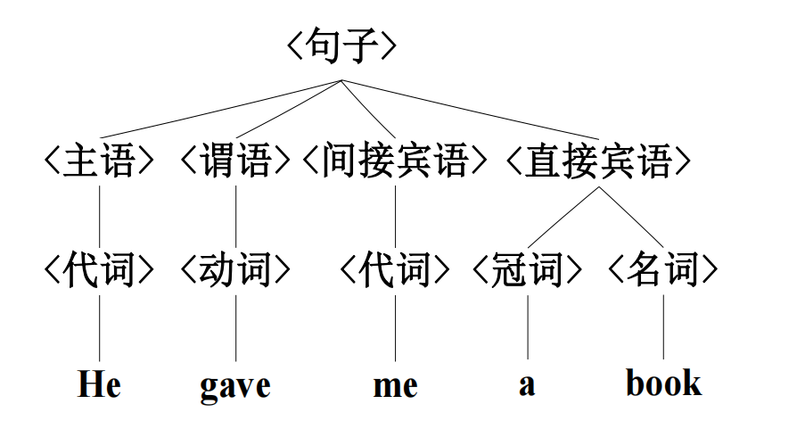
语法产生式（产生句子的规则集）：
<句子> $\rightarrow$ <主语><谓语><间接宾语><直接宾语>
<主语> $\rightarrow$ <代词> <谓语> $\rightarrow$ <动词>
<间接宾语> $\rightarrow$ <代词> <直接宾语> $\rightarrow$ <冠词><名词>
<代词> $\rightarrow$ He | me <冠词> $\rightarrow$ a
<动词> $\rightarrow$ gave <名词> $\rightarrow$ book
从句子组成中识别出四类文法要素：
- 终结符集 \(V_T = \{𝐻𝑒, 𝑔𝑎𝑣𝑒, 𝑚𝑒, 𝑎, 𝑏𝑜𝑜𝑘\}\)
- 非终结符集 \(V_N = \{<句子>, <主语>, <谓语>, <间接宾语>, <直接宾语>, <代词>, <动词>, <冠词>, <名词>\}\)
- 产生式集 \(P = \{<句子> \rightarrow <主语><谓语><间接宾语><直接宾语>, …\}\)
- 开始符号 S = <句子>
一个句子的推导过程（从开始符号出发，反复使用产生式替换非终结符）：
$$
\begin{align}
<句子> &\Rightarrow <主语><谓语><间接宾语><直接宾语>\\
&\Rightarrow <代词><谓语><间接宾语><直接宾语>\\
&\Rightarrow He <谓语><间接宾语><直接宾语>\\
&\Rightarrow He <动词><间接宾语><直接宾语>\\
&\Rightarrow He gave <间接宾语><直接宾语>\\
&\Rightarrow He gave <代词><直接宾语>\\
&\Rightarrow He gave me <直接宾语>\\
&\Rightarrow He gave me <冠词><名词>\\
&\Rightarrow He gave me a <名词>\\
&\Rightarrow He gave me a book\\
\end{align}
$$
符合语法的句子不一定符合语义："He gave me a book" 符合语义，而 "me gave He a book" 虽由同样规则产生但语义错误。文法正确不能保证语义正确，文法只管句子组成规则，不涉语义。
3.2 文法的形式化定义
⭐⭐⭐ 【高频考点·必考基础】 4/4份近期试卷100%涉及，是语法分析大题的前置知识。
3.2.1 文法的四元组定义
文法 G 是一个四元组：\(G = (V_T, V_N, P, S)\)
- \(V_T\)：终结符（Terminal）的非空有限集合——语言不可再分的基本符号
- \(V_N\)：非终结符（Non-terminal）的非空有限集合，\(V_T \cap V_N = \emptyset\)
- \(P\)：产生式（Production）的有限集合
- \(S\)：开始符号（Start Symbol），\(S \in V_N\)
3.2.2 产生式
产生式定义为：\(A \rightarrow \alpha\)（或 \(A ∷= \alpha\)），读作"A 定义为 \(\alpha"\)
- 左部 \(A \in (V_T \cup V_N)^+\)，且至少含有一个非终结符
- 右部 \(\alpha \in (V_T \cup V_N)*\)
- 也可用巴科斯范式（BNF）表示：\(<A> ::= \alpha\)
产生式的简写：若多个产生式左部相同 \(A \rightarrow \alpha_1, A \rightarrow \alpha_2, …, A \rightarrow \alpha_n\) 则可简写为： $$ A\rightarrow \alpha_1|\alpha_2|\cdots|\alpha_n $$
- \(\rightarrow\) 和 | 是元语言符号（用于定义文法自身的符号，不是文法中的符号）
- \(\alpha_1, \alpha_2, …, \alpha_n\) 称为 A 的候选式
3.2.3 文法的实例——算术表达式
表达式的递归定义（中缀表示）： ① 标识符 𝑖、常量、变量是表达式 ②~⑤ 表达式 \(± \times ÷\) 表达式是表达式 ⑥ 表达式加括号后仍是表达式
对应文法：\(G = (\{𝑖, +, *, (, )\}, {E}, P, E)\)
3.3 推导与归约
⭐⭐⭐ 【高频考点·必考最左推导】 历年试卷第2大题(1)小问固定考最左推导过程（5分）。
3.3.1 直接推导与直接归约
若 \(A \rightarrow \gamma\) 是文法 G 的一个产生式，且 \(\alpha, \beta \in (V_T \cup V_N)*\)，则：
-
从 \(\alpha A\beta\) 可以直接推导出 \(\alpha\gamma\beta\)（一步推导 = 某个产生式的一次应用），记为 \(\alpha A\beta \Rightarrow \alpha\gamma\beta\)
-
从 \(\alpha\gamma\beta\) 可以直接归约为 \(\alpha A\beta\)
例：\((𝑖 + E) \Rightarrow (𝑖 + 𝑖)\)，因为存在产生式 \(E \rightarrow 𝑖\)
推导步数的记法：
- \(\alpha_1 \Rightarrow^n \alpha_n\)：恰好 𝑛 步推导
- \(\alpha_1 \Rightarrow^+ \alpha_n\)：至少一步推导
- \(\alpha_1 \Rightarrow^* \alpha_n\)：零步或多步推导
3.3.2 从句子的语法组成中识别文法要素
对于文法 \(G(E)：E \rightarrow E + E | E * E | (E) | 𝑖\)，从开始符号出发推导：
$$
\begin{align}
𝐸 \Rightarrow (𝐸) \\
\Rightarrow (𝐸 + 𝐸) \\
\Rightarrow (𝑖 + 𝐸) \\
\Rightarrow (𝑖 + 𝑖) \\
\end{align}
$$
因此：\(E \Rightarrow^* (𝑖 + 𝑖)\)
3.3.3 句型、句子与语言
-
句型（Sentential Form）：若 \(S \Rightarrow^* \alpha\) 且 \(\alpha \in (V_T \cup V_N)^*\)，则称 \(\alpha\) 是文法 G 的一个句型（可含非终结符）
例：\(E \Rightarrow^3 (𝑖 + E)\)，则 (𝑖 + E) 是句型 - 句子（Sentence）：若 \(S \Rightarrow^* \alpha\) 且 \(\alpha \in V_T^*\)，则称 \(\alpha\) 是文法 G 的一个句子（全为终结符，句型特例）
例：\(E \Rightarrow^4 (𝑖 + 𝑖)\)，则 (𝑖 + 𝑖) 是句子 - 语言（Language）：\(L(G) = \{\alpha | S \Rightarrow^+ \alpha\}\) 且 \(\{\alpha \in V_T^*\}\)
文法的作用——无穷语言的有穷描述：有穷（开始符号、产生式、终结符、非终结符集合）\(\rightarrow\) 可推导无穷多个句子。
Example
示例——文法的语言（文法 \(G(S): S \rightarrow 𝑏A, A \rightarrow 𝑎A | 𝑎\)）：
该文法描述的语言为：\(L(G) = \{𝑏𝑎^n | 𝑛 \geq 1\}\)
3.3.4 最左推导与最右推导 ★
从文法 G(E) 推导 𝑖 * 𝑖 + 𝑖 的三种不同方式：
| 推导序列 | 特点 | |
|---|---|---|
| 不限制 | \(E \Rightarrow E*E \Rightarrow E*E+E \Rightarrow E*𝑖+E \Rightarrow 𝑖*𝑖+E \Rightarrow 𝑖*𝑖+𝑖\) | |
| 最左推导 | \(E \Rightarrow E*E \Rightarrow 𝑖*E \Rightarrow 𝑖*E+E \Rightarrow 𝑖*𝑖+E \Rightarrow 𝑖*𝑖+𝑖\) | 每次替换最左非终结符 |
| 最右推导 | \(E \Rightarrow E*E \Rightarrow E*E+E \Rightarrow E*E+𝑖 \Rightarrow E*𝑖+𝑖 \Rightarrow 𝑖*𝑖+𝑖\) | 每次替换最右非终结符 |
定义：
| 推导类型 | 定义 | 得到句型名称 | 对应归约 |
|---|---|---|---|
| 最左推导 | 每一步都替换句型中最左的非终结符 | 左句型 | 最右归约 |
| 最右推导 | 每一步都替换句型中最右的非终结符 | 规范句型（右句型） | 最左归约（规范归约） |
易错点：最右推导 = 规范推导 ↔ 最左归约 = 规范归约。考试中经常要求写出最左推导序列。
3.4 语法分析树与二义性
⭐⭐⭐ 【高频考点·必考】 历年试卷第3大题(1)固定考画两棵不同的语法树证明二义性（5分），(2)考构造无二义文法（5分）。
3.4.1 语法分析树（Parse Tree）
对于文法 \(G = (V_T, V_N, P, S)\)，其分析树满足：
- 根结点是文法的开始符号 S
- 每个结点标记是 \(V_T \cup V_N \cup \{\varepsilon\}\) 中的符号
- 叶结点都是终结符（或 \(\varepsilon\)）
- 内部结点都是非终结符
- 若内部结点 𝑛 的标记为 A，其从左到右的子结点为 \(𝑛_1𝑛_2…𝑛_k\)（标记为 \(X_1X_2…X_k\)），则必有 \(A \rightarrow X_1X_2…X_k \in P\)
分析树的关键性质：
- 一棵分析树从左到右的叶结点排列 = 这棵分析树生成的结果句子
- 每个推导对应一个中间结点及其子结点（二级子树 = 直接短语）
- 一棵分析树的不同生成过程 \(\rightarrow\) 表示一个句型的多种可能推导过程
- 一个文法所生成的语言 = 能用分析树生成的所有句子的集合
- 语法分析（parsing）= 构造给定句子对应的分析树
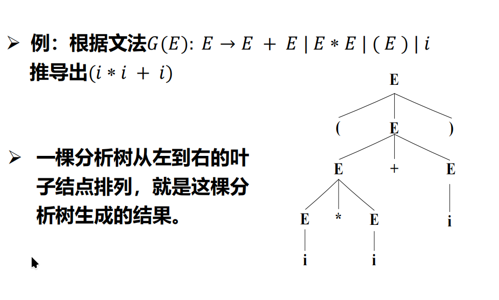
3.4.2 文法的二义性（Ambiguity） ★
定义：若文法 G 中存在某个句子可对应 两棵不同的分析树（或两个不同的最左/最右推导），则 G 是 二义文法。
算术表达式文法的二义性示例（\(G: E \rightarrow E + E | E * E | (E) | 𝑖\)）：
句子 𝑖 * 𝑖 + 𝑖 有两个不同的最左推导（对应两棵不同的分析树）：
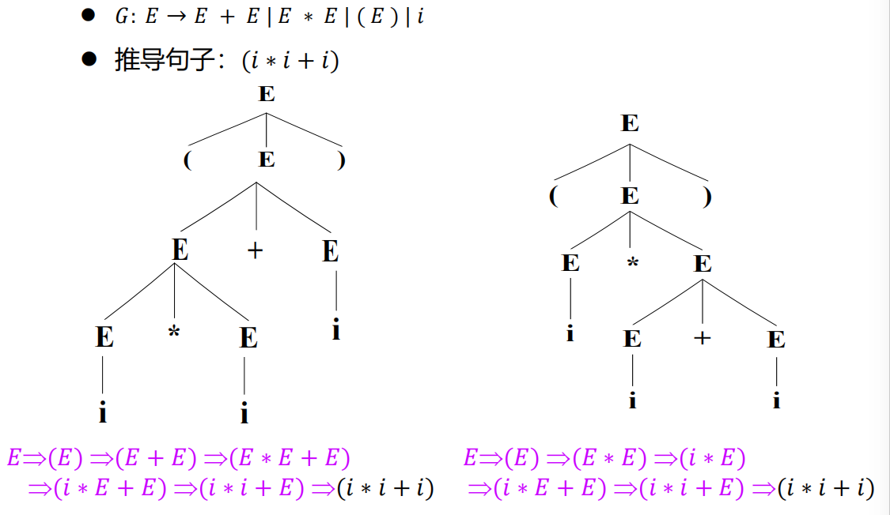
两棵不同分析树意味着运算次序不同：\((𝑖*𝑖)+𝑖\) vs \(𝑖*(𝑖+𝑖)\)，语义不同。
语言的二义性：若语言 L 的 所有等价文法都是二义的，则 L 是二义语言。只要存在一个非二义文法，语言就是非二义的。
3.4.3 消除文法的二义性
方法一：使用消除二义性规则(下面主要讲这个方法)
- 算符优先级规则（如
*优先于+） - 算符结合性规则（如左结合）
- 最近嵌套原则（如 else 匹配最近 if）
方法二：将二义文法重写为等价的无二义文法
表达式文法去二义性示例（同时规定优先级和结合性）：
二义: 𝐸 $\rightarrow$ 𝐸 + 𝐸 | 𝐸 * 𝐸 | (𝐸) | 𝑖
↓ 引入非终结符分层
无二义: 𝐸 $\rightarrow$ 𝑇 | 𝐸 + 𝑇 （+ 优先级低，先展开）
𝑇 $\rightarrow$ 𝐹 | 𝑇 * 𝐹 （* 优先级高，后展开）
𝐹 $\rightarrow$ (𝐸) | 𝑖 （原子表达式）
*优先级高于+：F 在最内层，T 在中间，E 在最外层- 同级运算符左结合：\(E \rightarrow E + T\)（左递归保证左结合）
悬空-else 问题（经典二义性案例）：
文法 语句 \(\rightarrow\) if 条件 then 语句 | if 条件 then 语句 else 语句 | 其他
- 句子
if C1 then if C2 then S1 else S2有二义性：else 可匹配外层if或内层if - 消除规则（最近嵌套原则）：else 匹配最近的未匹配的 then（即内层）
对应的无二义文法（将语句分为"完全匹配的"和"内含悬空else的"）：
语句 $\rightarrow$ 匹配句 | 非匹配句
匹配句 $\rightarrow$ if 条件 then 匹配句 else 匹配句 | 其他语句
非匹配句 $\rightarrow$ if 条件 then 语句
| if 条件 then 匹配句 else 非匹配句
工程实用原则：此无二义文法晦涩难懂，因此在能驾驭二义性处理的情况下，可直接使用二义性文法（如 LR 分析器可通过优先级和结合性消解冲突）。
3.4.4 巴科斯范式（BNF）
BNF（Backus-Naur Form / Backus-Normal Form）：
- 把 \(\alpha \rightarrow \beta\) 表示为 \(\alpha ::= \beta\)
- 终结符：基本符号集
- 非终结符用
<>括起 - 扩展记法：
- \({\alpha}_m^n\)：符号串 \(\alpha\) 能重复的最小 m 次、最大 n 次
- \({\alpha}^*\)：\(\alpha\) 出现零次或多次（即 Kleene 闭包）
- \([\alpha]\)：等价于 \(\alpha | \varepsilon\)（可选的）
例：简单算术表达式的 BNF 范式：
3.5 形式语言与文法
3.5.1 形式语言概念
- 形式语言（Formal Language）：用精确的数学公式或机器可处理的公式定义的语言。语法严格、人为设计（与自然语言相对）。
- 形式语言的两个方面：语法和语义。形式语言理论只研究语法。
- 自动机理论：自动机是按它们能识别的形式语言类来分类的。有穷状态机（FSM）是给定符号输入、依据转移函数"跳转"一系列状态的数学模型。
- 形式文法的定义：一种格式，用来说明什么句子在该语言中是合法的，并指明把词组合成短语和句子的规则。
3.5.2 上下文无关文法（CFG）的编程语言应用
- CFG 有足够的能力描述现今程序设计语言使用的几乎所有语法结构（算术表达式、赋值语句、条件语句等）
- 但有些语言结构不能由 CFG 描述：
- 例：\(L_1 = {𝑎^n𝑏^n𝑐^n | 𝑛 \geq 1}\) 无法由 CFG 生成
- 然而：\(L_2 = {𝑎^n𝑏^n𝑐^i | 𝑖 \geq 1, 𝑛 \geq 1}\) 可由 CFG 生成（因为它只是把 \(𝑎^n𝑏^n\) 和独立的 \(𝑐^i\) 拼接）
- 例：\(L_3 = {𝑎^n𝑏ᵐ𝑐^n𝑑ᵐ | 𝑛, 𝑚 \geq 0}\) 无法由 CFG 生成（跨字符的交叉匹配）
- 然而：\(L_4 = {𝑤𝑐𝑤ᴿ | 𝑤 \in {𝑎, 𝑏}*}\) 可由 CFG 生成（回文结构，使用嵌套产生式）
3.6 乔姆斯基文法分类
⭐⭐ 【常考概念】 在小题或题干中出现，属基础概念。由诺姆·乔姆斯基于1956年提出。
四种文法的差别在于：对产生式施加了不同限制。
假设有 \(G=(V_T,V_N,P,S)\) 是一个文法，且有 \(\alpha\rightarrow\beta\in P\)
| 类型 | 名称 | 产生式限制 | 识别自动机 | 对应语言 |
|---|---|---|---|---|
| 0型 | 短语结构文法（PSG） | \(\alpha \in (V_T \cup V_N)^*\)且至少含一个非终结符, \(\beta \in (V_T \cup V_N)^*\)，无其他限制 | 图灵机（TM） | 递归可枚举语言 |
| 1型 | 上下文有关文法（CSG） | $ | \alpha | \leq |
| 2型 | 上下文无关文法（CFG） | \(A \rightarrow \beta，A \in V_N，\beta \in (V_T \cup V_N)^*\) | 非确定下推自动机（PDA） | 上下文无关语言 |
| 3型 | 正则文法（RG） | 右线性：\(A \rightarrow \omega B\)；左线性：\(A \rightarrow B\omega\) | \(\omega\)（左右线性不可混用），\(\omega \in V_T^*\) | 有穷状态自动机（FA） |
包含关系：0型 \(\supset 1\)型 \(\supset 2\)型 \(\supset 3\)型（逐级包含，限制递增，生成力递减）
在程序设计语言中的应用：
- 程序设计语言的几乎全部词法 \(\rightarrow 3\)型文法（正则文法/正则表达式）
- 程序设计语言的几乎全部语法 \(\rightarrow 2\)型文法（上下文无关文法）
各类文法实例：
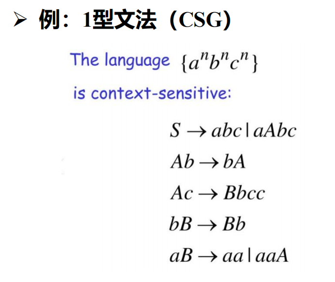 |
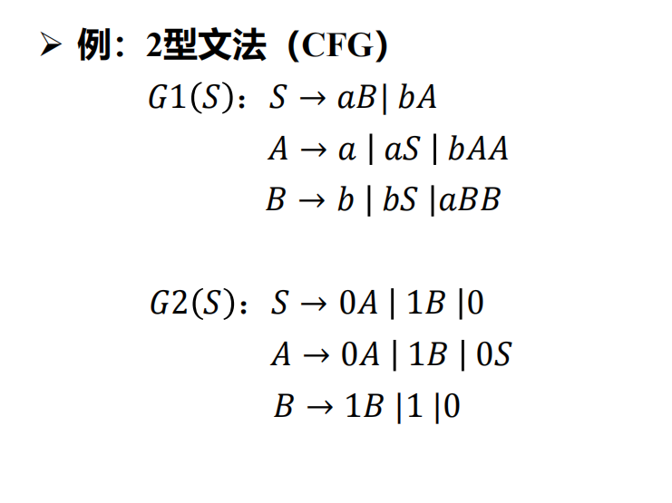 |
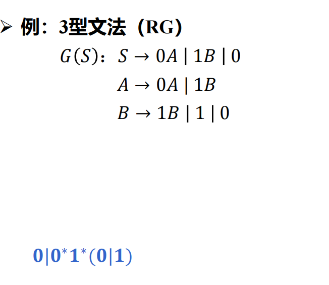 |
|---|---|---|
- 1型（CSG）：使用上下文约束的产生式，如 \(\varphi A\psi \rightarrow \varphi\omega\psi\)
- 2型（CFG）：\(G_1(S): S \rightarrow 𝑎B | 𝑏A; A \rightarrow 𝑎 | 𝑎S | 𝑏AA; B \rightarrow 𝑏 | 𝑏S | 𝑎BB\)
- 3型（RG）：\(G(S): S \rightarrow 0A | 1B | 0; A \rightarrow 0A | 1B; B \rightarrow 1B | 1 | 0\)；对应正则式
0|0*1*(0|1)
3.7 正则文法与有穷自动机的等价性（RG ↔ FA）
⭐ 【课件中的严格证明，虽不直接考证明但概念基础】
等价性定义：对于正则文法 G 和有穷自动机 M，若 L(G) = L(M)，则称 G 和 M 等价。
证明需从两方面进行： ① 对于任意 RG G，存在 FA M 使 L(M) = L(G) ② 对于任意 FA M，存在 RG G 使 L(G) = L(M)
3.7.1 从左线性文法构造FA（RG_L \rightarrow FA）
对于左线性文法 \(G_L = ⟨V_T, V_N, S, P⟩\)（产生式形如 \(A \rightarrow B𝑎\) 或 \(A \rightarrow 𝑎\)）：
- 令 \(FA M = ⟨V_N \cup {𝑞_0}, V_T, 𝑓, 𝑞_0, {S}⟩\)，其中 𝑞_0 是新引入的初态
- 转移函数 𝑓 的构造：
- ① 对于 \(A \rightarrow 𝑎\)：𝑓(𝑞_0, 𝑎) = A（从初态读到终结符到达非终结符对应状态）
- ② 对于 \(A_1 \rightarrow B𝑎, …, A_n \rightarrow B𝑎\)：\(𝑓(B, 𝑎) = {A_1, …, A_n}\)（从 B 状态读 𝑎 转到各 A 状态）
3.7.2 从右线性文法构造FA（RG_R \rightarrow FA）
对于右线性文法 \(G_R = ⟨V_T, V_N, S, P⟩\)（产生式形如 \(A \rightarrow 𝑎B\) 或 \(A \rightarrow 𝑎\)）：
- 令 \(FA M = ⟨V_N \cup {𝑧}, V_T, 𝑓, S, {𝑧}⟩\)，其中 𝑧 是新引入的终止状态
- 转移函数 𝑓 的构造：
- ① 对于 \(A \rightarrow 𝑎\)：𝑓(A, 𝑎) = 𝑧
- ② 对于 \(A \rightarrow 𝑎A_1 | … | 𝑎A_n\)：\(𝑓(A, 𝑎) = {A_1, …, A_n}\)
3.7.3 从FA构造左线性文法（FA \rightarrow RG_L）
对于 $FA M = ⟨S, \(\Sigma\), \delta, s_0, F⟩$：
- 若 \(\delta(s_0, 𝑎) = s_0\)（初态自环），引入新初态 s'_0 和 \(\delta(s'_0, \varepsilon) = s_0\)
- 对 \(\delta(A, 𝑎) = B\)：
- 若 A 非初态：在 P 中增加 \(B \rightarrow A𝑎\)
- 若 A 是初态：在 P 中增加 \(B \rightarrow 𝑎\)
- 对所有终态 \(s'_i \in F\)，增加 \(S' \rightarrow s'_0 | s'_1 | … | s'_k\)（S'是新开始符）
3.7.4 从FA构造右线性文法（FA \(\rightarrow\) RG_R）
对于 \(FA M = ⟨S, \Sigma, \delta, s_0, F⟩\)：
- 若 \(s_0 \notin F\)，\(G_R = ⟨\Sigma, S, s_0, P⟩\)：
- 对 \(\delta(A, 𝑎) = B\)：若 \(B \notin F\) 则增加 \(A \rightarrow 𝑎B\)；若 \(B \in F\) 则增加 \(A \rightarrow 𝑎\)
- 若 \(s_0 \in F\)，引入新开始符 \(S'_0\)，增加 \({S'_0} \rightarrow s_0|\varepsilon\)
3.7.5 完整转换实例
DFA M \(\rightarrow\) 右线性文法 G \(\rightarrow\) NFA M' \(\rightarrow\) 左线性文法 G'：
从 DFA 出发，用右线性文法构造法可得 G；从 G 反向获得等价的 NFA M'；再从左线性文法构造法得到 G'。整个过程展示了四种形式化工具之间的可互转性。
关键结论：正则文法、正则表达式、确定有穷自动机（DFA）、非确定有穷自动机（NFA）在表达/接收语言的能力上相互等价。
3.8 抽象语法树（AST）
3.8.1 抽象语法树的定义
抽象语法树（Abstract Syntax Tree, AST）：分析树的压缩形式，对表示语言的结构非常有用。
- AST 中运算符和关键字不再是叶节点，而是作为内部节点（分析树叶节点的父节点）
- AST 的内部结点表示程序构造（如运算符）；语法分析树的内部结点表示非终结符
- AST 省略了语法分析树中的"辅助"结点：
- 单产生式结点（如 \(E \rightarrow T\) 这类产生式体中仅含一个非终结符的）
- \(\varepsilon\) 产生式结点
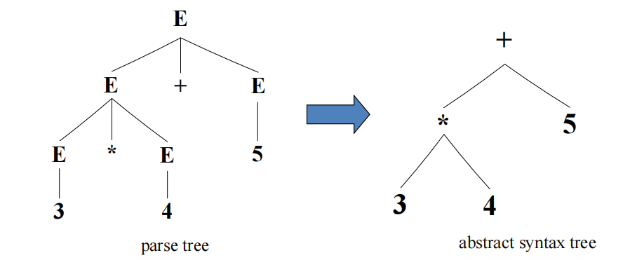
3.8.2 左孩子右兄弟描述方法
用二叉树结构表示一般的多叉树——\(stmt\_seq \rightarrow stmt; stmt\_seq | stmt\) 可通过左孩子（stmt）和右兄弟（stmt-seq的剩余部分）来表示，结点用 ";" 作为结构结点。
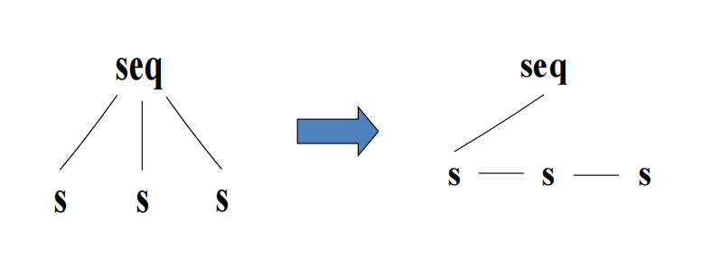
3.8.3 AST vs 语法分析树
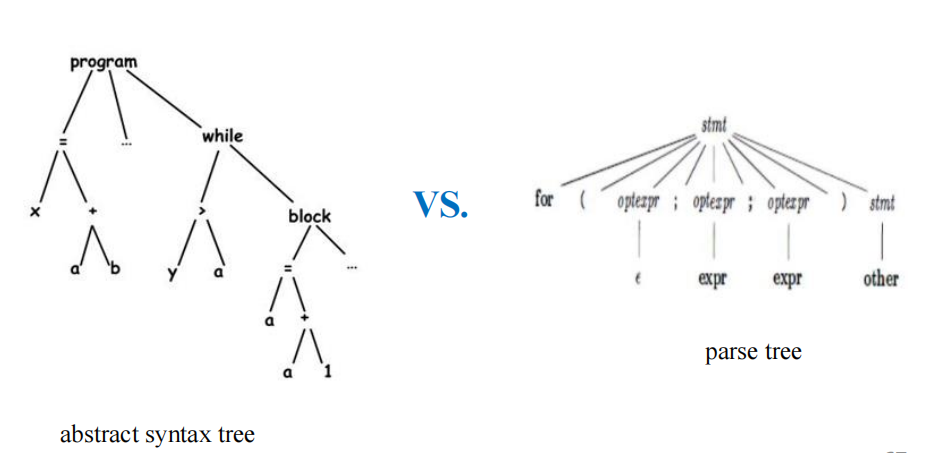
| 语法分析树（Parse Tree） | 抽象语法树（AST） | |
|---|---|---|
| 内部结点含义 | 非终结符（语法类别） | 程序构造元素（运算符等） |
| 叶结点 | 终结符 | 运算分量（变量/常量名） |
| 结点数量 | 多（含辅助结点、单产生式结点等） | 少（压缩形式） |
| 用途 | 推导过程的可视化 | 语义分析、中间代码生成 |
3.9 上下文无关文法的形式化总结
3.9.1 CFG的形式化定义
- 上下文无关文法 G 是一个四元组：\(G = (V_N, V_T, P, S)\)
- 每个产生式形如 \(A \rightarrow \alpha\)，其中 \(A \in V_N\)，\(\alpha \in (V_N \cup V_T)^*\)
- 推导 \(S \Rightarrow^* \gamma\)：从 S 开始，每次利用 P 中的一个产生式，对句型中的非终结符进行替换
- 句子：能通过推导得到的全由终结符组成的串（\(\gamma \in V_T^*\)）
- 句型：推导中出现的任意符号串（\(\gamma \in (V_N \cup V_T)^*\)）
- 语言：所有句子的集合
3.9.2 CFG中的最左推导与最右推导
- 最左推导：任一步 \(\alpha \Rightarrow \beta\) 都替换 \(\alpha\) 中最左的非终结符
- 最右推导：任一步 \(\alpha \Rightarrow \beta\) 都替换 \(\alpha\) 中最右的非终结符
3.10 语言的描述与文法的构造
3.10.1 语言的描述形式
- 语法描述（规定语句）：语句的组成规则 \(\rightarrow BNF\) 范式、语法（描述）图
- 词法描述（规定单词）：单词的组成规则 \(\rightarrow BNF\) 范式、正则式
3.10.2 构造文法的步骤
- 明确描述的对象——语言（合法的语言结构是什么）
- 确定基本符号集 \(V_T\)（语言不可再分的基本符号）
- 引入非终结符 \(V_N\)（表示各种句子结构）
- 定义句子的组成规则——产生式或 BNF 范式
文法描述注意事项：文法描述句子的组成规则，不涉及语义；文法正确不能保证语义正确。
3.11 本章小结
- 文法是语言的有穷描述，严格、准确、简洁地描述由无穷句子构成的语言
- 核心概念链：文法四元组 \(\rightarrow\) 产生式 \(\rightarrow\) 推导/归约 \(\rightarrow\) 句型/句子/语言 \(\rightarrow\) 分析树 \(\rightarrow\) 二义性
- 乔姆斯基四级文法：0型 \(\supset 1\)型 \(\supset 2\)型 \(\supset 3\)型，程序设计语言的词法用3型、语法用2型
- 正则文法、正则表达式、DFA、NFA 等价——可相互转换
- AST 是分析树的压缩形式，省略辅助符号，为语义分析和中间代码生成做准备
第4章 语法分析（一）—— 自顶向下的分析方法
对应课件：
4-语法分析1-自顶向下的语法分析.pdf。历年试卷第2大题固定考自顶向下分析（25分，5小问×5分）。 考试流程固定：最左推导→消除左递归/提取左公因子→求FIRST/FOLLOW→构造LL(1)表→LL(1)分析过程。
4.1 语法分析概述
4.1.1 语法分析器的功能
- 任务：检查由词法分析器输出的Token序列是否符合语言的文法
- 输入：Token序列
- 输出：语法分析树（解析树） + 出错处理
- 分析方法：
- 自顶向下（Top-down）：递归下降法、预测分析法（LL(1)）
- 自底向上（Bottom-up）：算符优先分析法、LR(0)、SLR(1)、LR(1)、LALR
4.1.2 概念回顾
本章开头先回顾第3章的核心概念，为语法分析铺垫。
上下文无关文法（CFG）—— 2型文法：\(G = (V_T, V_N, P, S)\)，任意产生式形如 \(A \rightarrow \beta\)（\(A \in V_N\)，\(\beta \in (V_T \cup V_N)^*\)）
推导：根据产生式 \(A \rightarrow \gamma\)，进行推导 \(\alpha A\beta \Rightarrow \alpha\gamma\beta\)。
- \(\Rightarrow^*\) 零步或多步推导，\(\Rightarrow^+\) 一步或多步推导
句型与句子：
- 句型：\(S \Rightarrow^* \alpha\)，\(\alpha\) 可能含非终结符
- 句子：不含非终结符的句型（\(\alpha \in V_T^*\)）
最左推导与最右推导：
- 最左推导：每次替代最左的非终结符 → 得到左句型（对应于最右归约）
- 最右推导：每次替代最右的非终结符 → 得到规范句型（对应于最左归约=规范归约）
语法分析树：
- 每棵语法分析树对应于唯一的一个最左推导和一个最右推导过程
- 每个句子不一定只对应一棵语法分析树
二义性文法：若文法G中存在着具有两棵或两棵以上语法分析树的句子
句型的分析：识别一个符号串是否为某文法的句型。识别过程对应于某个推导的构造过程。在编译实现中，完成句型分析的程序称为语法分析程序（parser）或语法识别程序。
从左到右的语法分析算法：从符号串中最左符号开始，从左到右依次识别输入符号串。
4.1.3 两种分析方法的直观示例
对于文法 \(G[S]\)：\(S \rightarrow cAd\)，\(A \rightarrow ab\)，\(A \rightarrow a\)，识别输入串 \(w = cabd\)：
自顶向下（从根S出发，向下构造语法树）：
自底向上（从叶结点出发，向上归约到根S）：
4.1.4 两个必须要解决的核心问题 ★
⭐⭐ 【理解这两个问题，就能理解为什么需要LL和LR分析】
问题1（自顶向下）：如何选择使用哪个产生式进行推导？
- 假设要被替换的最左非终结符是B，且文法有n条规则 \(B \rightarrow A_1 | A_2 | … | A_n\)。如何确定用哪个右部去替代B？—— 答案是：高效准确地选产生式（通过FIRST和FOLLOW）
问题2（自底向上）：如何识别可归约的串？
- 每一步需从输入串中选择一个子串（称为"可归约串"，即句柄），将其归约成某个非终结符。—— 如何高效准确地找句柄？
4.2 文法的变换与预处理
⭐⭐⭐ 【高频考点·必考大题】 第2大题(2)小问固定考消除左递归（5分），部分年份还考提取左公因子。
目标：使文法适合于自上而下的语法分析过程。三项处理措施： ① 消除左递归 ② 提取左因子 ③ 计算FIRST集合和FOLLOW集合
4.2.1 左递归引发的问题——为什么必须消除
问题示例：根据文法 \(G: S \rightarrow Sa | *\)，分析输入串 \(*aaa\)。
推导过程只能是：
但语法分析器在推导过程中，无法根据当前的输入符号 \(*\) 或 \(*a\)，确定要选择使用几次产生式 \(S \rightarrow Sa\)，也无法确定何时选择 \(S \rightarrow *\) 来结束。——这是计算机算法无法处理的，因为算法是从左到右扫描的，无法预见未来。
一个事实：计算机算法是无法根据左递归文法，进行自上而下语法分析的。
4.2.2 左递归的类型
直接左递归：\(P \rightarrow P\alpha | \beta\)（其中 \(\beta\) 不以 \(P\) 开头）
间接左递归：通过多步推导形成的左递归。例：
4.2.3 消除直接左递归
基本形式：\(P \rightarrow P\alpha | \beta\) → \(P \rightarrow \beta P'\)，\(P' \rightarrow \alpha P' | \varepsilon\)
一般形式（算法4.19的前提步骤）：
原: P → Pα₁ | Pα₂ | … | Pαₘ | β₁ | β₂ | … | βₙ
改为: P → β₁P′ | β₂P′ | … | βₙP′
P′ → α₁P′ | α₂P′ | … | αₘP′ | ε
实例：消除文法 \(E \rightarrow E + T | T\)，\(T \rightarrow T * F | F\)，\(F \rightarrow (E) | i\) 的直接左递归：
4.2.4 消除间接左递归——实例演示
消除文法 \(G\)：\(S \rightarrow Qc | c\)，\(Q \rightarrow Rb | b\)，\(R \rightarrow Sa | a\) 的间接左递归：
① 将R的产生式代入Q的产生式：\(Q \rightarrow Sab | ab | b\) ② 将Q的产生式代入S的产生式：\(S \rightarrow Sabc | abc | bc | c\) ③ 消除S产生式中的直接左递归：
④ 化简（去掉从S不可达的Q和R）：
4.2.5 消除左递归的通用算法（算法4.19）
输入：没有环、没有 \(\varepsilon\) 产生式的文法G。 输出：一个等价的无左递归文法（可能具有 \(\varepsilon\) 产生式）。 方法：应用图4-11中的算法。
算法核心思想（三层理解）：
- 排序非终结符：\(A_1, A_2, …, A_n\)
- 外层循环（\(i = 1\) 到 \(n\)）：
- 内层循环（\(j = 1\) 到 \(i-1\)）：将所有 \(A_i \rightarrow A_j\gamma\) 的产生式中的 \(A_j\)，用 \(A_j\) 的所有产生式右部替换，使得 \(A_i\) 产生式右部开头的非终结符下标不断提高
- 然后消除 \(A_i\) 产生式间的直接左递归
- 循环不变式：在第 \(i-1\) 次外循环之后，所有 \(A_k (k < i)\) 的产生式都已被"清洗"——任何 \(A_k \rightarrow A_l\alpha\) 都满足 \(l > k\)。经过内层循环不断提高 \(m\) 的下界直到 \(m \ge i\)，然后第6行消除 \(A_i\) 的直接左递归，保证 \(m > i\)。
最终效果：对任意产生式 \(A_i \rightarrow A_j\gamma\)，必有 \(j \ge i\)（不能引用排在前面的非终结符，从而不可能形成间接左递归）
算法4.19工作流程详解（3/3说明）：
- 在 \(i=1\) 的第一次迭代中，第2~7行的外层循环消除 \(A_1\) 产生式间的所有直接左递归。余下所有形如 \(A_1 \rightarrow A_l\alpha\) 的产生式都满足 \(l > 1\)。
- 在第 \(i\) 次迭代中，内层循环（\(j=1\) 到 \(i-1\)）不断提高形如 \(A_i \rightarrow A_m\alpha\) 的产生式中 \(m\) 的下界，直到 \(m \ge i\)。然后消除 \(A_i\) 的直接左递归，保证 \(m > i\)。
例4.20：把算法4.19应用于文法（4.18）。将非终结符排序为 \(S, A\)。当 \(i=2\) 时，替换 \(A \rightarrow Sd\) 中的 \(S\)，然后消除直接左递归。
技术注：因为该算法有 \(\varepsilon\) 产生式，所以不一定能得到正确结果。但例4.20中产生式 \(A \rightarrow \varepsilon\) 是无害的。
4.2.6 消除左递归后的效果验证
对文法 \(G: S \rightarrow Sa | *\)，消除左递归后得到：
分析输入串 \(*aaa\) 的过程变为：
在每一步推导中，语法分析器都可以从左到右顺序扫描输入串，结合当前输入符号正确地选择产生式。
4.3 提取左公因子与消除回溯
⭐⭐ 【常考】 部分年份第2大题(2)小问兼考提取左公因子。
4.3.1 为什么需要消除回溯
构造行之有效的自顶向下分析器，必须消除回溯。为了消除回溯，必须保证：对文法的任何非终结符，当语法分析器要去匹配输入串时，能根据当前的输入符号，准确地指派一个候选产生式。
即，对于产生式 \(A \rightarrow \alpha_1 | \alpha_2 | \alpha_3 …\)，当非终结符 \(A\) 面临输入字符 \(a\) 时，如何准确选取唯一产生式 \(A \rightarrow \alpha_i\) 进行输入匹配和语法推导？
4.3.2 提取左公因子（算法4.21）
输入：文法G。 输出：一个等价的提取了左公因子的文法。 方法：对于每个非终结符A，找出它的两个或多个选项间的最长公共前缀 \(\alpha\)。如果 \(\alpha \neq \varepsilon\)（存在非空公共前缀），则将A的所有产生式：
其中 \(\gamma\) 表示所有不以 \(\alpha\) 开头的产生式体，\(A'\) 是一个新的非终结符。不断应用此转换，直到每个非终结符的任意两个产生式体都没有公共前缀为止。
4.3.3 提取左公因子实例——悬空else问题
例4.22：下面的文法抽象表达了"悬空-else"问题（\(i, t, e\) 代表 if, then, else；\(E\) 和 \(S\) 表示条件表达式和语句）：
提取左公因子后变为：
这样，在输入为 \(i\) 时，先将 \(S\) 展开为 \(iEtSS'\)，处理完 \(iEtS\) 之后，才决定将 \(S'\) 展开为 \(eS\) 还是 \(\varepsilon\)。
当然，上面的两个文法都是二义性的。对于第二个文法，当输入为 \(e\) 时，语法分析算法不能确定应该选择 \(S'\) 的哪个产生式——这正是LR分析器可以通过优先级和结合性消解的问题。
4.3.4 消除回溯的三项措施
消除回溯 = 语法分析器中不存在不当（或错误，或需回溯）的产生式匹配。为此，对文法采取的基本处理措施：
- 消除左递归
- 提取左因子
- 定义并求解 FIRST(\(\alpha\)) 和 FOLLOW(A)
4.4 FIRST 和 FOLLOW 集合（课件4.4.2节）
⭐⭐⭐ 【高频考点·必考大题】 第2大题(3)小问固定考求FIRST集和FOLLOW集（5分），是构造LL(1)分析表的基础。自顶向下和自底向上语法分析器的构造都需要FIRST和FOLLOW。
4.4.1 两个函数的作用
- 在自顶向下分析中：FIRST和FOLLOW使得我们可以根据下一个输入的词法单元符号，选择应使用哪个产生式
- 在恐慌模式错误恢复中：FOLLOW产生的词法单元集合可作为同步词法单元
4.4.2 FIRST(\(\alpha\)) 的定义
FIRST(\(\alpha\))：可从 \(\alpha\) 推导得到的串的首符号的集合，其中 \(\alpha\) 是任意的文法符号串。
① 如果 \(\alpha \Rightarrow^* \varepsilon\)，那么 \(\varepsilon\) 也在 FIRST(\(\alpha\)) 中。 ② 在图4-15中，\(A \Rightarrow^* c\gamma\)，因此 \(c\) 在 FIRST(\(A\)) 中。
在预测分析中的使用方法：对于 \(A\) 的两个产生式 \(A \rightarrow \alpha | \beta\)，如果 FIRST(\(\alpha\)) 和 FIRST(\(\beta\)) 是两个不相交的集合，那么只需查看下一个输入符号 \(a\)，就可以选择正确产生式——\(a\) 只能出现在 FIRST(\(\alpha\)) 或 FIRST(\(\beta\)) 中，不能同时出现在两个集合中。
4.4.3 计算单个文法符号X的 FIRST(X)
不断应用下列规则，直到再没有新的终结符号或 \(\varepsilon\) 可被加入到任何FIRST集合中为止。
规则1：若 \(X\) 是终结符号，则 FIRST(\(X\)) = {\(X\)}
规则2：若 \(X\) 是非终结符号，且 \(X \rightarrow Y_1Y_2…Y_k\) 是一个产生式（\(k \ge 1\)）：
- 若对于某个 \(i\)，\(\varepsilon\) 同时在 FIRST(\(Y_1\)), FIRST(\(Y_2\)), …, FIRST(\(Y_{i-1}\)) 中（即 \(Y_1…Y_{i-1} \Rightarrow^* \varepsilon\)），且 \(a\) 在 FIRST(\(Y_i\)) 中，则把 \(a\) 加入到 FIRST(\(X\)) 中。
- 若对于所有的 \(j=1,2,…,k\)，\(\varepsilon\) 都在 FIRST(\(Y_j\)) 中，则将 \(\varepsilon\) 加入到 FIRST(\(X\)) 中。
直观理解：FIRST(\(Y_1\))中所有符号一定在FIRST(\(X\))中。如果 \(Y_1\) 不能推导出 \(\varepsilon\)，就不再加入任何符号。如果 \(Y_1 \Rightarrow^* \varepsilon\)，则加上FIRST(\(Y_2\))，依此类推。
规则3：若 \(X \rightarrow \varepsilon\) 是一个产生式，则把 \(\varepsilon\) 加入 FIRST(\(X\)) 中。
4.4.4 计算文法符号串 \(X_1X_2…X_n\) 的 FIRST
① 向 FIRST(\(X_1X_2…X_n\)) 加入 FIRST(\(X_1\)) 中所有的非 \(\varepsilon\) 符号 ② 若 \(\varepsilon\) 在 FIRST(\(X_1\)) 中，再加入 FIRST(\(X_2\)) 中所有非 \(\varepsilon\) 符号 ③ 若 \(\varepsilon\) 在 FIRST(\(X_1\)) 和 FIRST(\(X_2\)) 中，再加入 FIRST(\(X_3\)) 中所有非 \(\varepsilon\) 符号，以此类推 ④ 若对所有 \(i\)，\(\varepsilon\) 都在 FIRST(\(X_i\)) 中，则将 \(\varepsilon\) 加入到 FIRST(\(X_1X_2…X_n\)) 中
4.4.5 FOLLOW(A) 的定义与计算
FOLLOW(A)：可能在某些句型中紧跟在非终结符号 \(A\) 右边的终结符号的集合。也就是说，如果存在形如 \(S \Rightarrow^* \alpha Aa\beta\) 的推导，终结符号 \(a\) 就在 FOLLOW(\(A\)) 中。
- 在这个推导的某个阶段，\(A\) 和 \(a\) 之间可存在一些文法符号，但这些符号要能推导得到 \(\varepsilon\) 并消失
- 若 \(A\) 是某些句型的最右符号，则
$也在 FOLLOW(\(A\)) 中（$是特殊的"结束标记"符号，它不是任何文法的符号）
计算规则（不断应用直到没有新的终结符号可被加入任何FOLLOW集合）：
规则1：将 $ 加入到 FOLLOW(\(S\)) 中，其中 \(S\) 是开始符号，$ 是输入右端的结束标记。
规则2：若存在产生式 \(A \rightarrow \alpha B\beta\)，则将 FIRST(\(\beta\)) 中除 \(\varepsilon\) 之外的所有符号，都加入到 FOLLOW(\(B\)) 中。
规则3：若存在产生式 \(A \rightarrow \alpha B\)，或存在产生式 \(A \rightarrow \alpha B\beta\) 且 FIRST(\(\beta\)) 包含 \(\varepsilon\)，则将 FOLLOW(\(A\)) 中所有符号都加入到 FOLLOW(\(B\)) 中。即：\(FOLLOW(B) = FOLLOW(B) \cup FOLLOW(A)\)。
注意：在求 FOLLOW(\(B\)) 时，需要遍历产生式体中有非终结符 \(B\) 的所有产生式。
4.4.6 关于FIRST/FOLLOW算法的时间复杂度
FIRST(\(X\)) 和 FOLLOW(\(A\)) 的计算过程与源程序的语法分析过程是独立进行的（前者还是后者的基础）。对于文法 \(G\) 的每个文法符号 \(X\) 和每个非终结符 \(A\)，FIRST/FOLLOW 算法的时间复杂度都与文法的规模（终结符总数、非终结符总数、产生式总条数、产生式右部总长度）有关。而一个程序设计语言的文法规模通常不会特别大。
对于文法符号串 \(\alpha = X_1X_2…X_n\)，求解 FIRST 的时间复杂度还与符号串长度有关。同样，语法分析过程中处理的文法符号串一般也不会太长（语法成分通常不长，且长的语法成分中通常有语法分隔符）。
4.4.7 FIRST和FOLLOW计算完整示例——例4.30
⭐⭐⭐ 【必练例题·考试出现频率最高】 这是课件中的核心例题，必须独立计算验证。
对于非左递归文法（4.28）：
FIRST集合计算：
| 非终结符 | FIRST | 推导理由 |
|---|---|---|
| F | { (, id } | F的两个产生式体以终结符 ( 和 id 开头 |
| T | { (, id } | T只有一个产生式，其体以F开头；F不能推导出 \(\varepsilon\)，所以FIRST(T)=FIRST(F) |
| E | { (, id } | 论证同T |
| E′ | { +, \(\varepsilon\) } | 一个产生式体以+开头，另一个体为 \(\varepsilon\) |
| T′ | { *, \(\varepsilon\) } | 论证同E′ |
FOLLOW集合计算：
| 非终结符 | FOLLOW | 推导理由 |
|---|---|---|
| E | { ), $ } | 产生式 \(F \rightarrow (E)\) 中的 ) 在FOLLOW(E)中；E是开始符号，所以 $ 也在FOLLOW(E)中 |
| E′ | { ), $ } | E′出现在 \(E \rightarrow TE′\) 的右部体尾部，所以 FOLLOW(E′)=FOLLOW(E) |
| T | { +, ), $ } | T出现时只有E′跟在后面 → FIRST(E′)中除 \(\varepsilon\) 外的 + 进入FOLLOW(T)；又因为 \(E \rightarrow TE′\) 且 \(E′ \Rightarrow^* \varepsilon\)，所以FOLLOW(E)={ ), $ }也进入FOLLOW(T) |
| T′ | { +, ), $ } | T′出现在 \(T \rightarrow FT′\) 的右部体尾部，所以 FOLLOW(T′)=FOLLOW(T) |
| F | { *, +, ), $ } | 论证过程与第5点对T的论证类似 |
计算结果汇总：
| FIRST | FOLLOW | |
|---|---|---|
| E | { (, id } | { ), $ } |
| E′ | { +, \(\varepsilon\) } | { ), $ } |
| T | { (, id } | { +, ), $ } |
| T′ | { *, \(\varepsilon\) } | { +, ), $ } |
| F | { (, id } | { *, +, ), $ } |
4.5 递归下降分析方法
⭐ 【课件讲授，理解方法思想即可】 不直接在考试大题中出现，但有助于理解LL(1)的来源。
4.5.1 基本思想
递归下降分析方法实现设想： ① 当遇到终结符时，直接匹配选择产生式 ② 对于每一个非终结符，设置一个语法分析子程序。当遇到非终结符时，就调用该非终结符对应的语法分析子程序。这种调用可以递归进行。
示例：对于产生式 \(F \rightarrow (E)\) 的递归下降分析子程序：
4.5.2 扩展的BNF范式（EBNF）
为了方便递归下降分析的实现，引入EBNF扩展语法：
| EBNF记法 | 含义 |
|---|---|
| { \(\alpha\) } | 闭包运算 \(\alpha^*\)（\(\alpha\) 可任意重复0到n次） |
| [ \(\alpha\) ] | 等价于 $\alpha |
EBNF的优点：直观易懂，且便于表示左递归消去和左因子提取后的文法。
选择与重复结构的EBNF表示：
选择结构：
原BNF: if-stmt → if (exp) statement | if (exp) statement else statement
EBNF: if-stmt → if (exp) statement [else statement]
重复结构：
4.5.3 用EBNF指导递归下降程序的编写
文法G的BNF vs EBNF表示：
E对应的子程序（\(E \rightarrow T\{+T\}\)）：
T对应的子程序（\(T \rightarrow F\{*F\}\)）：
F对应的子程序（\(F \rightarrow id | (E)\)）：
PROCEDURE F;
BEGIN
IF token = id THEN match(id)
ELSE IF token = '(' THEN
BEGIN
match('(');
E;
IF token = ')' THEN match(')')
ELSE ERROR;
END
ELSE ERROR
END
主程序和match子程序：
PROCEDURE MAIN; PROCEDURE match(t: Token);
BEGIN BEGIN
token = getNextToken(); IF token = t THEN
E token = getNextToken()
END ELSE ERROR
END
4.5.4 递归下降分析法存在的问题
① 将BNF文法表示成EBNF比较困难 ② 如果在文法G的产生式 \(A \rightarrow \alpha | \beta\) 中，\(\alpha\) 和 \(\beta\) 都以相同的非终结符开始，就很难决定到底选择哪个产生式进行匹配
这两个问题的解决方案就是——LL(1)文法及其预测分析法。
4.6 LL(1) 文法（课件4.4.3节）
⭐⭐⭐ 【高频考点·必考大题】 为了正确高效地支持自顶向下的语法分析，需要在2型文法基础上增加限定条件，定义并构造LL(1)文法。
4.6.1 LL(1)的含义
| 字符 | 含义 |
|---|---|
| 第一个L | 从左向右扫描输入（Left-to-right） |
| 第二个L | 产生最左推导（Leftmost derivation） |
| 1 | 每一步只需向前看一个输入符号就能决定分析动作 |
LL(1)文法已经足以描述大部分程序设计语言构造，但设计适当文法时仍需多加小心——左递归的文法和二义性的文法都不可能是LL(1)的。
4.6.2 LL(1)文法的形式化定义
一个文法 \(G\) 是 LL(1) 的，当且仅当 \(G\) 的任意两个不同的产生式 \(A \rightarrow \alpha \mid \beta\) 满足下面的条件：
① 不存在终结符号 \(a\)，使得 \(\alpha\) 和 \(\beta\) 都能够推导出以 \(a\) 开头的串。 ② \(\alpha\) 和 \(\beta\) 中最多只有一个可以推导出空串。 ③ 如果 \(\beta \Rightarrow^* \varepsilon\)，那么 \(\alpha\) 不能推导出任何以 FOLLOW(\(A\)) 中的某个终结符号开头的串。类似地，若 \(\alpha \Rightarrow^* \varepsilon\)，则 \(\beta\) 也不能。
用FIRST和FOLLOW精确表述：
| 条件 | 公式 | 说明 |
|---|---|---|
| 1 | \(FIRST(\alpha) \cap FIRST(\beta) = \emptyset\) | 前两个条件等价，即FIRST不相交 |
| 2+3 | 若 \(\beta \Rightarrow^* \varepsilon\)，则 \(FIRST(\alpha) \cap FOLLOW(A) = \emptyset\) | 第三个条件 |
| 2+3 | 若 \(\alpha \Rightarrow^* \varepsilon\)，则 \(FIRST(\beta) \cap FOLLOW(A) = \emptyset\) | 对称情况 |
核心直觉：只需要检查当前输入的词法单元符号，就可以为当前的非终结符号选择正确的产生式。
LL(1)文法的基本必要条件：
- 消除了左递归
- 提取了左因子
- 消除了回溯
4.6.3 LL(1)分析的产生式选择规则 ★
⭐⭐⭐ 【考试解题核心规则】
在自顶向下对LL(1)文法进行语法分析时，假设文法中有产生式 \(A \rightarrow \alpha_1 | \alpha_2 | … | \alpha_n\)，分析器的当前文法符号是 \(A\)，当前读取的Token是 \(a\)，则选择产生式的规则为：
规则①：若 \(a \in FIRST(\alpha_i)\ (1 \le i \le n)\)，则选择产生式 \(A \rightarrow \alpha_i\)，把 \(A\) 替换成 \(\alpha_i\)，完成最左语法推导。
规则②：若 \(a \notin FIRST(\alpha_i)\ (1 \le i \le n)\)，则：
- 若 \(\exists \alpha_i\) 使得 \(\varepsilon \in FIRST(\alpha_i)\ (1 \le i \le n)\)，且 \(a \in FOLLOW(A)\)，则选择产生式 \(A \rightarrow \alpha_i\)（一般情况下就是选择 \(A \rightarrow \varepsilon\)），完成最左语法推导。
- 否则，进行错误处理。
4.6.4 选择规则中使用FOLLOW的实例——i+i的最左推导
对于文法 \(G: E \rightarrow TE', E' \rightarrow +TE' | \varepsilon, T \rightarrow FT', T' \rightarrow *FT' | \varepsilon, F \rightarrow (E) | i\)
推导 \(i+i\) 的过程：
E ⇒ TE' T → FT'
⇒ FT'E' F → i
⇒ iT'E' T' → ε（关键！——当前符号是+，但+不在FIRST(T')={*,ε}中。
⇒ iεE' 然而T'有产生式T'→ε，且+∈FOLLOW(T')={+,),$}，
⇒ i+TE' 所以选择T'→ε进行本次推导）
⇒ i+FT'E' F → i
⇒ i+iT'E' T' → ε（同理）
⇒ i+iεE' E' → ε
⇒ i+iεε
= i+i
注：当语法符号T′遇到输入符号+时，虽然T′的两个产生式对应的首字符为FIRST(T′)={*, ε}，且+不在FIRST(T′)中，但是T′有一个产生式T′→ε，且因为FOLLOW(T′)={+, ), $ }，+∈FOLLOW(T′)，所以选择T′→ε。
4.6.5 非LL(1)文法举例
文法 \(G[S]: S \rightarrow xAy, A \rightarrow ** | *\) 不是LL(1)文法，因为产生式 \(A \rightarrow ** | *\) 的两个候选式有相同的首符号 *。对输入串 \(x*y\) 进行分析时，可能需要进行回溯处理。
4.7 预测分析表的构造（算法4.31）
⭐⭐⭐ 【必考大题】 第2大题(4)小问固定考构造LL(1)分析表。
输入：一个LL(1)文法G。 输出：预测分析表M。
构造步骤：对于文法的每个产生式 \(A \rightarrow \alpha\)，执行以下操作： ① 对于满足 \(a \in FIRST(\alpha)\) 的每一个终结符 \(a\)，在 \(M[A, a]\) 中加入产生式 \(A \rightarrow \alpha\)。 ② 如果 \(\varepsilon \in FIRST(\alpha)\)，则对于满足 \(b \in FOLLOW(A)\) 的每一个终结符 \(b\)，在 \(M[A, b]\) 中加入产生式 \(A \rightarrow \alpha\)。 ③ 如果 \(\varepsilon \in FIRST(\alpha)\)，且 \(\$ \in FOLLOW(A)\)，则在 \(M[A, \$]\) 中加入产生式 \(A \rightarrow \alpha\)。 ④ 在执行完以上操作后，所有无定义的 \(M[A, a]\) 都标上"出错标志 error"。
冲突判定：若 \(M[A, a]\) 被填入多个产生式，则存在冲突，文法不是LL(1)文法。即：如果LL(1)分析表的每个项目中至多只有一个产生式，则该文法为LL(1)文法（利用此构造表的算法来定义LL(1)文法）。LL(1)文法不是二义性文法。
4.7.1 预测分析表构造实例
对于文法 \(G(E): E \rightarrow TE', E' \rightarrow +TE' | \varepsilon, T \rightarrow FT', T' \rightarrow *FT' | \varepsilon, F \rightarrow (E) | i\)
首先求FIRST和FOLLOW（见例4.30结果）：
构造预测分析表：
| VN | i | + | * | ( | ) | $ |
|---|---|---|---|---|---|---|
| E | \(E \rightarrow TE'\) | \(E \rightarrow TE'\) | ||||
| E′ | \(E' \rightarrow +TE'\) | \(E' \rightarrow \varepsilon\) | \(E' \rightarrow \varepsilon\) | |||
| T | \(T \rightarrow FT'\) | \(T \rightarrow FT'\) | ||||
| T′ | \(T' \rightarrow \varepsilon\) | \(T' \rightarrow *FT'\) | \(T' \rightarrow \varepsilon\) | \(T' \rightarrow \varepsilon\) | ||
| F | \(F \rightarrow i\) | \(F \rightarrow (E)\) |
观察：表中的 \(T'\) 行，对于
+填入 \(T' \rightarrow \varepsilon\)——这是因为 \(\varepsilon \in FIRST(T')\) 且+\(\in\) FOLLOW(T′)。同理)和$也属于 FOLLOW(T′)。
4.8 预测分析法的执行（LL(1)分析法）
⭐⭐⭐ 【必考】 第2大题(5)小问固定考写出LL(1)分析过程。
4.8.1 预测分析器的组成
预测分析法使用一张分析表和一个栈：
- 控制程序：根据栈顶符号和当前输入符号查分析表M，决策动作
- 预测分析表 M：二维表，行=非终结符，列=终结符（含$），单元格=产生式或error
- 语法分析符号栈：$为栈底符号
- 输入缓冲区：$为输入串结束符
4.8.2 分析开始时的状态
- 栈：栈底放
$，再放入文法开始符号 \(S\)（即栈初始内容为 \(S\$，栈顶是\)S$） - 输入串：最后有一个
$符号表示输入串结束（即 $w$ $）
4.8.3 控制程序算法
输入：串 \(w\)。 内部数据结构：文法G的语法分析预测表 \(M\)。 输出：如果 \(w \in L(G)\)，则输出 \(w\) 的最左推导；否则报语法错。
ip 指向 w$ 的第一个词法单元名符号；
repeat
令 X = 栈顶元素，a = 当前输入符号;
if X ∈ V_T ∪ {$} then
if X = a then {从栈中弹出X，移动ip指向下一个符号}
else error
else if M[X, a] = "X → Y_1 Y_2 … Y_k" then
begin
将X从栈中弹出；
将Y_k Y_{k-1} … Y_1 中的k个符号依次压入栈中（Y_1在栈顶）；
输出产生式 X → Y_1 Y_2 … Y_k;
end
else error
until X = '$'
关键细节：当栈顶X是非终结符且M[X,a]有产生式时，先将X弹出，然后将产生式右部符号串逆序逐一压入栈中（使最左符号在栈顶）。如果右部符号为 \(\varepsilon\)，则不压入任何符号。
4.8.4 分析过程示例
对文法 \(S \rightarrow (S)S | \varepsilon\)，分析输入串 ()：
| 语法符号栈 | 输入 | 动作 |
|---|---|---|
| $S | ()$ | 使用产生式 \(S \rightarrow (S)S\) |
| \(S)S(\) | ()$ | 匹配终结符 ( |
| $S)S | )$ | 使用产生式 \(S \rightarrow \varepsilon\) |
| $S) | )$ | 匹配终结符 ) |
| $S | $ | 使用产生式 \(S \rightarrow \varepsilon\) |
| $ | $ | 接受输入串 |
4.9 预测分析中的错误恢复（课件4.4.5节）
⭐ 【课件讲授，理解思路】
4.9.1 恐慌模式错误恢复的基本方法
方法1：对于没有空产生式 \(A \rightarrow \varepsilon\) 的非终结符 \(A\)，将 FOLLOW(A) 中的所有符号放入 \(A\) 的同步集合中。当分析出错时，若栈顶元素是 \(A\)，则跳过和忽略一些词法单元Token，直到看到 FOLLOW(\(A\)) 中的元素，然后弹出 \(A\)，恢复分析过程。
方法2（不足）：仅使用 FOLLOW(\(A\)) 作为同步集合是不够的——因为文法错误本身可能就是漏掉了 FOLLOW(\(A\)) 集合中的元素（如漏掉了分隔符 ;）。
方法3：对于有层次嵌套结构语法成分的语言，可把高层结构的首符号集加到表示低层结构的语法符号的同步集合中。例如，把引导语句开始的关键词（如 if）加入到表示表达式的非终结符E的同步集合中——当前表达式和当前语句都出错且还漏掉了 ;，但如果后面是下一个 if 语句，if 就是高层结构的首符号，可作为同步符号。
方法4：若栈顶终结符 \(a\) 不能与输入符号匹配，则从栈中弹出该终结符，并给出错误提示信息（忽略栈中终结符）。
方法5：预先将 FIRST(\(A\)) 加入到 \(A\) 的同步集合中。当栈顶为 \(A\) 时，只要 FIRST(\(A\)) 中某一个符号出现在输入符号中，就可恢复分析（忽略输入缓冲区中的终结符）。
方法6：对于非终结符 \(A\)，如果存在产生式 \(A \rightarrow \varepsilon\)，可将该产生式作为出错时的默认选择。
4.9.2 错误恢复实例——例4.36
对文法（4.28）使用FIRST和FOLLOW作为同步集合。在处理出错情况时，图4-22中的分析表使用方式：
① 假设栈顶符号为非终结符 \(A\)，当前输入符号为 \(a\)：
- 如果 \(M[A, a]\) 是空的 → 输入符号就被忽略（跳过）
- 如果 \(M[A, a]\) 是 "synch" → 栈顶非终结符被弹出（因为以FOLLOW(A)为同步符号，输入符号已推进到当前句型中A的下一个文法符号所涵盖的范围）
② 假设栈顶为终结符：如果终结符和输入符号不匹配 → 从栈中弹出该终结符。
具体分析表（含synch条目）——对文法(4.28)：
| VN | i | + | * | ( | ) | $ |
|---|---|---|---|---|---|---|
| E | E→TE′ | E→TE′ | synch | synch | ||
| E′ | E′→+TE′ | E′→ε | E′→ε | |||
| T | T→FT′ | synch | T→FT′ | synch | synch | |
| T′ | T′→ε | T′→*FT′ | T′→ε | T′→ε | ||
| F | F→i | synch | synch | F→(E) | synch | synch |
例4.36中对错误输入 \(+id*+id\) 的工作过程：因为 \(M(E, +)\) = 空，所以跳过输入符号
+。因为 \(M(F, +)\) = synch，所以只是栈顶符号 \(F\) 出栈，当前输入符号不变（仍是+）。恐慌模式错误恢复的讨论没有考虑"出错消息"的重要话题。编译器的设计者必须提供足够的、包含有用信息的错误消息，不仅描述错误，还必须引导人们注意错误被发现的地方。
4.10 自顶向下分析小结
4.10.1 两个核心问题与解决方法
自顶向下语法分析必须要解决的两个问题：
- 无限循环（左递归导致）→ 解决方法：消除左递归
- 回溯 → 解决方法：一次就确定性地选准产生式——提取左因子 + 计算FIRST/FOLLOW + 定义LL(1)条件
4.10.2 递归子程序法
- 构造过程：构造文法 → 改造文法（消除二义性、消除左递归、提取左因子） → 按文法画语法图 → 化简语法图 → 编写分析程序
- 优点：直观、简单、可读性好，便于扩充
- 缺点：递归算法运行效率低，处理能力相对有限，通用性差
4.10.3 预测分析法（LL(1)）
完整工作流程：
- 检查文法是否为LL(1)文法
- 计算文法的FIRST集和FOLLOW集
- 构造预测分析表M
- 编写基于预测分析表的语法分析程序
特点：根据栈顶的文法符号和输入符号，查看预测分析表来决定下一步的推导动作
优点：效率高 关键难点：预测分析表M的构造
4.10.4 从算法工作原理角度的总结
- 自顶向下语法分析过程等价于一个语法推导序列的构造过程。要求这个推导序列的结果 = 语法分析过程的输入串。
- 从处理逻辑角度，自顶向下分析以文法开始符号为根节点，一步一步向下构造语法分析树。要求这棵树的所有叶结点构成的符号串 = 输入串。
第5章 语法分析（二）—— 自底向上的分析方法
对应课件：
4-语法分析2-自底向上的语法分析.pdf。历年试卷第4大题固定考LR分析（20分，4小问×5分）。 考试流程固定：求LR(0)项目集→构造SLR分析表并消解冲突→写出LR分析过程。 本章由高德纳（Donald E. Knuth）发明，L=从左到右扫描，R=反向构造最右推导，k=向前看符号数（实践中 \(k \le 1\)）。
5.1 自底向上分析基础
⭐⭐⭐ 【高频考点·必考大题】 概念贯穿整个第4大题。
5.1.1 自底向上分析的核心思想
自底向上分析 = 移进-归约（Shift-Reduce）分析法。
处理思想：
- 对输入的词法单元序列，从左到右进行扫描（并移进词法单元符号到语法符号栈）
- 对栈顶的语法符号串，反复利用产生式进行归约
- 如果最后能够归约得到文法的开始符号 → 输入是满足语法规则的句子；否则 → 语法错误
完整分析实例（文法 \(G\)：\(S' \rightarrow S\)，\(S \rightarrow aAcBc\)，\(A \rightarrow b\)，\(A \rightarrow Ab\)，\(B \rightarrow d\)）：
| 步骤 | 语法符号栈 | 输入 | 动作 |
|---|---|---|---|
| 1 | $ | abbcdc$ | 移进 |
| 2 | $a | bbcdc$ | 移进 |
| 3 | $ab | bcdc$ | 归约 (\(A \rightarrow b\)) |
| 4 | $aA | bcdc$ | 移进 |
| 5 | $aAb | cdc$ | 归约 (\(A \rightarrow Ab\)) |
| 6 | $aA | cdc$ | 移进 |
| 7 | $aAc | dc$ | 移进 |
| 8 | $aAcd | c$ | 归约 (\(B \rightarrow d\)) |
| 9 | $aAcB | c$ | 移进 |
| 10 | $aAcBc | $ | 归约 (\(S \rightarrow aAcBc\)) |
| 11 | $S | $ | 归约 (\(S' \rightarrow S\)) |
| 12 | $S' | $ | 接受 |
句子分析过程：\(abbcdc \Rightarrow' aAbcdc \Rightarrow' aAcdc \Rightarrow' aAcBc \Rightarrow' S \Rightarrow' S'\)
关键特性：文法符号栈中的内容 + 输入缓冲区内容 = \(“当前句型”\)。任何可归约的串必须出现在栈顶，即归约具有"最左"性。所有自底向上的文法分析方法都采用移入/归约的处理方式，但不同的文法采用不同的方法构造各自的动作表和转移表。
5.1.2 核心概念：最右推导与规范归约
最右推导：每次推导都施加在句型的最右边的非终结符上——与最左归约（规范归约）对应，得到的是规范句型/右句型。
规范归约（最左归约）：假设 \(\alpha\) 是文法 \(G\) 的一个句子，其最右推导序列为 \(\alpha = \alpha_n \Leftarrow \alpha_{n-1} \Leftarrow … \Leftarrow \alpha_{i+1} \Leftarrow \alpha_i \Leftarrow … \Leftarrow \alpha_2 \Leftarrow \alpha_1 \Leftarrow S\)（其中每个 \(\alpha_i\) 是对 \(\alpha_{i+1}\) 中句柄归约后得到的句型）。则称 \(\alpha_n, \alpha_{n-1}, …, \alpha_1\) 是 \(\alpha\) 的规范归约序列，该过程称为规范归约。
规范归约 = 最右推导的逆序列 = 最左归约序列：
α = αn ⇐ αn₋₁ ⇐ … ⇐ αᵢ₊₁ ⇐ αᵢ ⇐ … ⇐ α₂ ⇐ α₁ ⇐ S （归约视图：自底向上）
= αn ⇒ αn₋₁ ⇒ … ⇒ αᵢ₊₁ ⇒ αᵢ ⇒ … ⇒ α₂ ⇒ α₁ ⇒ S （推导视图：自顶向下）
自底向上的语法分析算法（移入-归约算法）本质上就是模拟执行最左归约序列的构造过程。通过模拟最左归约过程，使得文法分析器匹配输入字符串的过程能从左到右顺序进行。
5.1.3 短语、直接短语与句柄 ★
⭐⭐⭐ 【必考核心概念】 理解句柄是自底向上分析的关键。
对于文法 \(G\)：\(E \rightarrow E+T | T\)，\(T \rightarrow T*F | F\)，\(F \rightarrow (E) | i\)，考虑句型 \(i_1 + i_2 * i_3\)：
| 概念 | 定义 | 在句型 \(i_1+i_2*i_3\) 中 |
|---|---|---|
| 短语 | 若 \(S \Rightarrow^* \alpha A\delta\) 且 \(A \Rightarrow^+ \beta\)，则 \(\beta\) 是句型 \(\alpha\beta\delta\) 相对于 \(A\) 的短语 | \(i_1, i_2, i_3, i_2*i_3, i_1+i_2*i_3\) |
| 直接短语 | 若 \(S \Rightarrow^* \alpha A\delta\) 且 \(A \Rightarrow \beta\)（一步推导），则 \(\beta\) 是直接短语 | \(i_1, i_2, i_3\) |
| 句柄 | 对于最右推导序列中的句型，其最左的直接短语 | \(i_1\)（句柄） |
重要性质：\(i_1+i_2\) 不是该句型的短语，也不是句柄——这是支撑自底向上进行文法分析的很好的文法性质。核心问题：如何在一个最右句型中寻找并确认句柄？
句柄示例（文法 \(S' \rightarrow S\)，\(S \rightarrow aAcBe\)，\(A \rightarrow b\)，\(A \rightarrow Ab\)，\(B \rightarrow d\)）：
| 最右句型 | 归约规则 |
|---|---|
| abbcde | \(A \rightarrow b\) |
| aAbcde | \(A \rightarrow Ab\) |
| aAcde | \(B \rightarrow d\) |
| aAcBe | \(S \rightarrow aAcBe\) |
| S | \(S' \rightarrow S\) |
在以上最右句型中，\(b, Ab, d, aAcBe\) 都是句柄。
5.1.4 移进-归约分析器的设计
系统组成：
- 输入缓冲区：保存输入的词法单元序列
- 控制程序：控制分析过程，输出分析结果——产生式序列
- 栈（两个）： ① 状态栈：保存语法分析器进行自底向上语法分析过程的工作状态 ② 文法符号栈：保存归约分析过程中产生的语法符号（句型的头部）
四个动作：
- 移进（Shift）：将下一个输入的词法单元符号移入栈中
- 归约（Reduce）：用产生式左侧的非终结符替换栈顶的句柄
- 接受（Accept）：分析成功
- 出错（Error）：出错处理
分析过程（三个时期）：
- 分析开始（设输入串为 \(w\)）：栈为
$；输入缓冲区为w$ - 分析进行：栈中存放已分析出的结果。将输入缓冲区中读入的符号压入栈，一旦句柄在栈顶形成，则弹出并进行归约，将规约结果压入栈中
- 分析结束：正常结束——栈中内容为
$S，输入串缓冲区为$
需要解决的核心问题：
- 如何识别句柄：当句柄未出现在栈顶时移进；当句柄出现在栈顶时选择产生式归约
- 如何解决移进-归约冲突：当栈顶元素形成句柄时，是移进还是归约？
- 如何解决归约-归约冲突：当存在两个产生式可用于一次归约时，选择哪个？
示例——分析输入串 ()：
文法 \(S' \rightarrow S\)，\(S \rightarrow (S)S | \varepsilon\)：
| 分析栈 | 输入 | 动作 |
|---|---|---|
| $ | ()$ | 移进 |
| $( | )$ | 用 \(S \rightarrow \varepsilon\) 归约 |
| $(S | )$ | 移进 |
| $(S) | $ | 用 \(S \rightarrow \varepsilon\) 归约 |
| $(S)S | $ | 用 \(S \rightarrow (S)S\) 归约 |
| $S | $ | 用 \(S' \rightarrow S\) 归约 |
| $S' | $ | 接受 |
示例——分析输入串 n+n：
文法 \(E' \rightarrow E\)，\(E \rightarrow E+n | n\)：
| 分析栈 | 输入 | 动作 |
|---|---|---|
| $ | n+n$ | 移进 |
| $n | +n$ | 用 \(E \rightarrow n\) 归约 |
| $E | +n$ | 移进 |
| $E+ | n$ | 移进 |
| $E+n | $ | 用 \(E \rightarrow E+n\) 归约 |
| $E | $ | 用 \(E' \rightarrow E\) 归约 |
| $E' | $ | 接受 |
5.2 LR(k) 语法分析概述
⭐⭐⭐ 高德纳（Donald E. Knuth）在对自左至右、自底向上的移入-归约分析过程进行了深刻剖析的基础上，经过高度概括后，发明了著名的 LR(k) 文法及其语法分析方法。
\(LR(k)\)：L = 从左到右扫描输入；R = 反向构造出一个最右推导序列；k = 做出语法分析决定时向前看 k 个输入符号。目前最流行的自底向上语法分析器都基于 LR(k) 的概念（\(k=0,1\) 具有实践意义，省略(k)时假设 k=1）。本节介绍最简单的构造方法——"简单LR技术"（SLR），虽然 LR 语法分析器本身是使用自动生成工具（如 Yacc）构造得到的，但对基本概念有所了解仍然有益。
5.2.1 为什么使用LR语法分析器（课件4.6.1节）
LR语法分析器是表格驱动的，在这一点上和4.4.4节中的非递归LL语法分析器很相似。如果可以为文法构造出语法分析表，该文法就称为LR文法。直观地讲：只要存在一个从左到右扫描的移入-归约语法分析器，它在某文法的最右句型的句柄出现在栈顶时总是能够识别出这个句柄，该文法就是LR的。
LR语法分析技术的吸引力（三大优点）：
- 对于几乎所有的程序设计语言构造元，只要能够写出该构造元的上下文无关文法，就能够构造出识别该构造元的LR语法分析器
- LR语法分析方法是已知的最通用的无回溯移进-归约分析技术，且实现可以和其他更原始的方法一样高效
- 可以使用LR方法进行语法分析的文法类，是可以使用预测方法（LL方法）进行语法分析的文法类的真超集
LR比LL更强大的原因：一个文法是LR(k)的条件是——当我们在一个最右句型中看到某一个产生式的全部右部时，还可以再向前看k个符号才决定是否归约。这个要求比对LL(k)的要求宽松很多（LL(k)在决定推导时只能向前看该产生式右部能推导出的串的前k个符号）。
LR方法的主要缺点：为一个典型的程序设计语言文法手工构造LR分析器的工作量非常大，需要LR语法分析器生成工具。Yacc是最常用的这类工具（4.9节），它将CFG作为输入自动生成语法分析器。
5.2.2 LR分析方法的工作模型
核心：分析表 = 动作表（ACTION）+ 转换表（GOTO）
| 表 | 含义 | 典型条目 |
|---|---|---|
| ACTION[s, a] | 状态 s 遇到终结符 a 时采取的动作 | \(s_j\)（移进到状态j）、\(r_k\)（按第k个产生式归约）、acc（接受）、error（报错） |
| GOTO[s, X] | 状态 s 面对符号栈顶符号 X 时转向的下一状态 | 状态编号 j |
LR分析器的工作过程（假设已有 \((s_0s_1…s_m,\ \$\;X_1X_2…X_m,\ a_ia_{i+1}…a_n\$)\)）：
① 移入：若 \(ACTION[s_m, a_i] = s_j\)，则 \((s_0s_1…s_m s_j,\ \$\;X_1X_2…X_m a_i,\ a_{i+1}…a_n\$)\)
② 归约：若 \(ACTION[s_m, a_i] = r_k\)（第k个产生式 \(A \rightarrow \beta\)），则 \((s_0s_1…s_{m-r} s_j,\ \$\;X_1X_2…X_{m-r} A,\ a_ia_{i+1}…a_n\$)\)，其中 \(\beta = X_{m-r+1}…X_m\)，\(r = |\beta|\)，\(GOTO[s_{m-r}, A] = j\)
③ 接受：若 \(ACTION[s_m, a_i] =\) "接受"，则分析成功并终止。
④ 报错：若 \(ACTION[s_m, a_i] =\) "报错"，则报告出现了错误。
5.3 LR(0) 项和LR(0)自动机（课件4.6.2节）
⭐⭐⭐ 【必考】 第4大题(1)小问固定考求LR(0)项目集（5分）。
5.3.1 问题的引出
一个移入-归约语法分析器怎么知道何时移进、何时归约？例如：当栈内容为 $T，下一个输入符号是 * 时，分析器怎么知道栈顶的 T 不是句柄（因此应移进而非归约）？
答案：LR语法分析器通过维护一些状态来表明我们在分析过程中所处的位置，从而做出移入-归约决定。这些状态用项（item）的集合来表示。
5.3.2 LR(0) 项的定义
一个文法 \(G\) 的一个 LR(0) 项是 \(G\) 的一个产生式再加上一个位于它的体中某处的一个点。产生式 \(A \rightarrow XYZ\) 可产生4个项： \(A \rightarrow ·XYZ\)、\(A \rightarrow X·YZ\)、\(A \rightarrow XY·Z\)、\(A \rightarrow XYZ·\)
产生式 \(A \rightarrow \varepsilon\) 只能生成一个项 \(A \rightarrow ·\)
项的直观含义：
| 项 | 含义 |
|---|---|
| \(A \rightarrow ·XYZ\) | 希望接下来在输入中看到一个可以从 \(XYZ\) 推导得到的串 |
| \(A \rightarrow X·YZ\) | 刚刚在输入中看到了一个可由 \(X\) 推导得到的串，希望接下来看到可以从 \(YZ\) 推导得到的串 |
| \(A \rightarrow XYZ·\) | 已经看到了产生式体 \(XYZ\)，到了该把 \(XYZ\) 归约成为 \(A\) 的时候了 |
5.3.3 规范的LR(0)项集族与LR(0)自动机
以 LR(0) 项的集合为元素构成的特定集合族称为规范的LR(0)项集族（canonical LR(0) collection）。这个项集族提供构建一个确定有穷自动机（LR(0)自动机）的基础，该自动机可用于做出关于语法分析动作的决定。
三步骤概述： ① 根据文法生成一组规范的LR(0)项集族 ② 以每个项集为一个不同状态，构造LR(0)自动机 ③ 利用LR(0)自动机控制移进-规约方法中的语法分析动作
5.3.4 增广文法
如果 \(G\) 是一个以 \(S\) 为开始符号的文法，那么 \(G\) 的增广文法 \(G'\) 就是在 \(G\) 中加入新的开始符号 \(S'\) 和新的产生式 \(S' \rightarrow S\)。引入的目的是：当且仅当语法分析器要使用规则 \(S' \rightarrow S\) 进行归约时，输入符号串被接受——这可以告诉语法分析器何时应该停止语法分析并宣称接受。
5.3.5 项集闭包 CLOSURE(I)
如果 \(I\) 是文法 \(G\) 的一个项集，则 CLOSURE(I) 的计算规则为： ① 一开始，将 \(I\) 中的各个项加入到 CLOSURE(I) 中 ② 如果 \(A \rightarrow \alpha·B\beta\) 在 CLOSURE(I) 中，\(B \rightarrow \gamma\) 是文法的一个产生式，且项 \(B \rightarrow ·\gamma\) 不在 CLOSURE(I) 中，则把 \(B \rightarrow ·\gamma\) 加入到 CLOSURE(I) 中 ③ 不断应用规则②直到没有新的项可被加入
直观理解：CLOSURE(I) 中的项 \(A \rightarrow \alpha·B\beta\) 表明接下来可能会看到从 \(B\beta\) 推导得到的子串，而 \(B\beta\) 子串的某个前缀是可以从 \(B\) 推导的（要用到 \(B\) 的产生式），因此要把 \(B\) 的所有产生式对应的项也加入。
例4.40——计算 CLOSURE（增广表达式文法 \(E' \rightarrow E\)，\(E \rightarrow E+T | T\)，\(T \rightarrow T*F | F\)，\(F \rightarrow (E) | id\)）：
设 \(I = \{[E' \rightarrow ·E]\}\)，则 \(CLOSURE(I)\) 包含：
- \(E' \rightarrow ·E\)（规则①）
- \(E \rightarrow ·E+T\) 和 \(E \rightarrow ·T\)（因为点右边有 \(E\)）
- \(T \rightarrow ·T*F\) 和 \(T \rightarrow ·F\)（因为点右边有 \(T\)）
- \(F \rightarrow ·(E)\) 和 \(F \rightarrow ·id\)（因为点右边有 \(F\)） 此时，不再需要加入任何新项。这个闭包就是图4-31中的项集 \(I_0\)。
5.3.6 GOTO 函数
GOTO(I, X) 函数定义（\(I\) 是一个项集，\(X\) 是一个文法符号）： \(GOTO(I, X)\) 是这样的项集合：如果 \([A \rightarrow \alpha·X\beta]\) 是 \(I\) 中的一个项，那么项 \([A \rightarrow \alpha X·\beta]\) 的闭包都属于 \(GOTO(I, X)\)。
直观地讲，GOTO函数用于定义LR(0)自动机中的转换——状态对应于项集，\(GOTO(I, X)\) 描述了当输入为 \(X\) 时离开状态 \(I\) 的转换。
例4.41：若 \(I = \{[E' \rightarrow E·], [E \rightarrow E·+T]\}\)（图4-31中的状态 \(I_1\)），计算 \(GOTO(I, +)\)：
- 在 \(I\) 中点的右边紧跟着
+的项：\(E \rightarrow E·+T\) - 将点移过
+号得到 \(E \rightarrow E+·T\) - 然后求该单元素集合的闭包 → \(I_6 = \{E \rightarrow E+·T, T \rightarrow ·T*F, T \rightarrow ·F, F \rightarrow ·(E), F \rightarrow ·id\}\)
5.3.7 用 ITEMS 算法计算规范LR(0)项集族
有了 CLOSURE 和 GOTO 函数后，算法 ITEMS（图4-33）"计算"得到增广文法 \(G'\) 的规范LR(0)项集族 \(C\)。
注解：该算法把当前文法所对应的LR(0)状态机的所有状态全部求出来了。C 是以项集为元素的集合（幂集类型变量）。
对于文法4.1的计算结果：\(C = \{I_0, I_1, I_2, …, I_{10}, I_{11}\}\)，其中：
- \(I_0 = \{[E' \rightarrow ·E], [E \rightarrow ·E+T], [E \rightarrow ·T], [T \rightarrow ·T*F], [T \rightarrow ·F], [F \rightarrow ·(E)], [F \rightarrow ·id]\}\)
- \(I_1 = GOTO(I_0, E) = \{[E' \rightarrow E·], [E \rightarrow E·+T]\}\)
- \(I_2 = GOTO(I_0, T) = \{[E \rightarrow T·], [T \rightarrow T·*F]\}\)
- …（共12个状态，见图4-31）
5.3.8 构造LR(0)自动机的方法要点
① 仅仅只根据文法就可以构造（不依赖输入串） ② 状态集 = 文法的规范LR(0)项集族，状态转移由GOTO函数给出 ③ 开始状态 = \(CLOSURE(\{[S' \rightarrow ·S]\})\) ④ 所有状态都是"接受状态" ⑤ "状态 \(j\)"指项集 \(I_j\) 所对应的状态
构造步骤总结：① 扩充新开始符号 S'，定义 CLOSURE 和 GOTO 函数 → ② 利用算法 ITEMS 计算得到规范LR(0)项集族 → ③ 利用项集族和GOTO函数构造LR(0)自动机
5.3.9 基于LR(0)自动机做出移进-归约决定
假设文法符号串 \(\gamma\) 使LR(0)自动机从状态0运行到状态 \(i\)：
- 如果下一个输入符号为 \(a\)，且状态 \(i\) 上有一个标记为 \(a\) 的转换 → 做出移进决定
- 否则 → 做出归约决定，并进一步根据状态 \(i\) 中具体的LR(0)项选择用哪个产生式归约
5.3.10 LR(0)自动机分析实例——例4.43（分析 \(id*id\)）
使用图4-31中的LR(0)自动机执行移入-归约分析，用状态栈和符号栈两个栈配合工作。
关键操作（以第2-3行为例）：
- 第2行：下一个输入符号是
id，从状态0出发有标记为id到达状态5的转换 → 移入（符号id、状态5分别压栈） - 第3行：状态栈顶是5，当前输入符号是
*。从状态5出发没有标记为*的转换 → 归约。状态5中只有项 \([F \rightarrow id·]\)，因此用 \(F \rightarrow id\) 归约 - 归约后的处理：符号栈中弹出
id压入F；状态栈弹出状态5后栈顶为状态0。从状态0出发有标记为 \(F\) 到状态3的转换 → 将状态3压入状态栈 - 注意：输入符号
id和状态5同时被压栈/出栈，保证两栈同步
$分析符号栈中的当前内容 + 当前剩余的输入符号 = 规范句型$
5.3.11 构造识别LR文法可行前缀的NFA（补充材料）★
作为理解LR(0)自动机的另一种等价构造方法，可以先构造NFA再转为DFA：
构造状态：把文法项 \(S' \rightarrow ·S\) 作为初态，把其他的每一个文法项作为一个新状态（除初态外其余状态都是终态）。
构造状态转移： ① 假设状态 \(i\) 中的项为 \(X \rightarrow X_1…X_i·X_{i+1}X_{i+2}…X_n\)，则从状态 \(i\) 连一条标记为 \(X_{i+1}\) 的箭弧至状态 \(j\)（状态 \(j\) 中的项为 \(X \rightarrow X_1…X_iX_{i+1}·X_{i+2}…X_n\)） ② 若状态 \(i\) 中的项为 \(X \rightarrow \alpha·A\beta\)（\(A \in V_N\)），则从状态 \(i\) 连 \(\varepsilon\) 弧到状态 \(j\)（状态 \(j\) 是其中项为 \(A \rightarrow ·\gamma\) 的所有状态）
从NFA到DFA：利用子集构造法（NFA→DFA转换）得到识别文法G可行前缀的DFA。这个DFA中的每个状态其实就是LR(0)项集的闭包——与直接用算法ITEMS构造的结果等价。
5.4 LR(0) 分析表与SLR(1)分析（课件4.6.3-4.6.4节）
⭐⭐⭐ 【必考大题】 第4大题(3)小问固定考构造SLR分析表并消解冲突（5分），第4大题(4)问固定考写出分析过程（5分）。
5.4.1 LR语法分析算法（算法4.44）
输入：一个输入串 \(\omega\) 和一个LR语法分析表（描述了ACTION和GOTO）。输出：若 \(\omega \in L(G)\)，则输出 \(\omega\) 的自底向上分析过程中的归约步骤；否则给出错误指示。方法：初始时分析器栈中为 \(s_0\)，输入缓冲区为 \(\omega\$\)。然后执行图4-36中的程序。
5.4.2 LR(0)分析的局限
LR(0)分析必须保证在每一个状态中都不会含有相互之间具有冲突的LR(0)项。然而，表达式文法的LR(0)分析表中，在状态2和状态9出现了移进-归约冲突（例如状态 \(I_2\) 含有 \(E \rightarrow T·\)（要求归约）和 \(T \rightarrow T·*F\)（点后有 *，要求移进））。
5.4.3 SLR(1) 的解决方案
思路：通过考察相应的非终结符的 FOLLOW 集解决LR(0)中的冲突。为了能利用FOLLOW集，需要向前查看输入缓冲区中的1个符号，并了解这个符号在哪个FOLLOW集中存在——这就是 SLR(1) 中 "1" 的由来。
SLR使归约条件更精确：
- 对于 LR(0)：只要从状态 \(I_i\) 转出的弧上没有标记为当前输入符号的弧，就选用 \(I_i\) 中 \([A \rightarrow \alpha·]\) 归约
- 对于 SLR(1)：还要进一步看相应的非终结符 \(A\) 的 \(FOLLOW(A)\) 集合中是否包含了和当前输入符号一样的符号。如果包含，才能归约
5.4.4 SLR语法分析表的构造方法（算法4.46）
输入：一个增广文法 \(G'\)。输出：\(G'\) 的SLR语法分析表函数 ACTION 和 GOTO。
步骤1：构造 \(G'\) 的规范LR(0)项集族 \(C = \{I_0, I_1, …, I_n\}\)
步骤2：根据 \(I_i\) 中的LR(0)项设置 ACTION 表： ① 若 \([A \rightarrow \alpha·a\beta]\) 在 \(I_i\) 中且 \(GOTO(I_i, a) = I_j\)，则 \(ACTION[i, a] =\) "移入 \(j\)"（标记为 \(s_j\)）。其中 \(a\) 必须是终结符 ② 若 \([A \rightarrow \alpha·]\) 在 \(I_i\) 中，则对于 \(FOLLOW(A)\) 中的所有 \(a\)，\(ACTION[i, a] =\) "归约 \(A \rightarrow \alpha\)"（标记为 \(r_k\)）。其中 \(A \neq S'\) ③ 若 \([S' \rightarrow S·]\) 在 \(I_i\) 中，则 \(ACTION[i, \$] =\) "接受"
步骤3：状态 \(i\) 对于各个非终结符 \(A\) 的 GOTO 转换：若 \(GOTO(I_i, A) = I_j\)，则 \(GOTO[i, A] = j\)
步骤4：所有没有被步骤2和3定义的表条目都设为"报错"
步骤5：语法分析器的初始状态就是根据 \([S' \rightarrow ·S]\) 所在项集构造得到的状态
如果根据上述规则生成了任何冲突动作，该文法就不是SLR(1)的——在这种情况下，算法无法生成语法分析器。一个具有SLR(1)文法分析表的文法被称为SLR(1)文法。
5.4.5 SLR消解冲突实例——表达式文法
对于表达式文法，\(I_2 = \{E \rightarrow T·, T \rightarrow T·*F\}\) 和 \(I_9 = \{E \rightarrow E+T·, T \rightarrow T·*F\}\) 在LR(0)分析表中有移进-归约冲突。
SLR解决方案：因为 \(FOLLOW(E) = \{), +, \$\}\)，可见 \(* \notin FOLLOW(E)\)。所以：
- 在生成 \(ACTION[2, *]\) 时，\(r_2\)（\(E \rightarrow T\) 归约）不被填入——只有 \(s_7\)（移进）
- 同理 \(ACTION[9, *]\) 中也只有 \(s_7\)
这样，原来的移进-归约冲突就没有了，只有移进动作，没有归约动作。
表达式文法的SLR(1)分析表（完整）：
| 状态 | i | + | * | ( | ) | $ | E | T | F |
|---|---|---|---|---|---|---|---|---|---|
| 0 | s5 | s4 | 1 | 2 | 3 | ||||
| 1 | s6 | acc | |||||||
| 2 | r2 | s7 | r2 | r2 | |||||
| 3 | r4 | r4 | r4 | r4 | |||||
| 4 | s5 | s4 | 8 | 2 | 3 | ||||
| 5 | r6 | r6 | r6 | r6 | |||||
| 6 | s5 | s4 | 9 | 3 | |||||
| 7 | s5 | s4 | 10 | ||||||
| 8 | s6 | s11 | |||||||
| 9 | r1 | s7 | r1 | r1 | |||||
| 10 | r3 | r3 | r3 | r3 | |||||
| 11 | r5 | r5 | r5 | r5 |
完整分析过程示例——分析输入串 \(i*i+i\)：
| 步骤 | 状态栈 | 符号栈 | 输入 | 动作 |
|---|---|---|---|---|
| 1 | 0 | $ | \(i*i+i\$\) | s5 |
| 2 | 05 | $i | \(*i+i\$\) | r6 (\(F \rightarrow i\)) |
| 3 | 03 | $F | \(*i+i\$\) | r4 (\(T \rightarrow F\)) |
| 4 | 02 | $T | \(*i+i\$\) | s7 |
| 5 | 027 | $T* | \(i+i\$\) | s5 |
| 6 | 0275 | $T*i | \(+i\$\) | r6 (\(F \rightarrow i\)) |
| 7 | 02710 | $T*F | \(+i\$\) | r3 (\(T \rightarrow T*F\)) |
| 8 | 02 | $T | \(+i\$\) | r2 (\(E \rightarrow T\)) |
| 9 | 01 | $E | \(+i\$\) | s6 |
| 10 | 016 | $E+ | \(i\$\) | s5 |
| 11 | 0165 | $E+i | \(\$\) | r6 (\(F \rightarrow i\)) |
| 12 | 0163 | $E+F | \(\$\) | r4 (\(T \rightarrow F\)) |
| 13 | 0169 | $E+T | \(\$\) | r1 (\(E \rightarrow E+T\)) |
| 14 | 01 | $E | \(\$\) | acc |
验证：每一步状态栈顶和符号栈的组合给出当前规范句型的前缀。
5.5 可行前缀及LR分析方法的理论基础（课件4.6.5节）
⭐⭐ 【理论根基，常考概念题】
5.5.1 为什么可以使用LR(0)自动机做出移进-归约决定？
对于一个文法的移入-归约语法分析器，符号栈中内容一定是某个最右句型的前缀。如果栈中内容是 \(\alpha\)，余下输入是 \(x\)，那么存在将 \(\alpha x\) 归约到开始符号 \(S\) 的归约序列（即 \(S \Rightarrow^*_{rm} \alpha x\)）。
然而，并不是最右句型的所有前缀都可以出现在栈中——因为语法分析器在做移入动作时不会越过句柄。例如，\((E)^*\) 是文法的一个最右句型的前缀，但由于 \((E)\) 是句柄，语法分析器必须在移入 * 之前将 \((E)\) 归约为 \(F\)，因此 \((E)^*\) 不可能出现在栈中。
5.5.2 可行前缀的定义
可行前缀（Viable Prefix）：可以出现在移入-归约语法分析器栈中的最右句型的前缀。一个可行前缀是最右句型的前缀，且没有越过该最右句型的最左句柄的右端（否则必定不是可行前缀）。
根据此定义，我们总是可以在一个可行前缀之后增加一些终结符号来得到一个最右句型。SLR分析技术的基础是：基于LR(0)自动机能够识别出可行前缀。
5.5.3 有效项
如果存在推导 \(S \Rightarrow^*_{rm} \alpha A\omega \Rightarrow_{rm} \alpha\beta_1\beta_2\omega\)，我们就说项 \(A \rightarrow \beta_1·\beta_2\) 对可行前缀 \(\alpha\beta_1\) 是有效项。
有效项告诉我们关于移进-规约的信息：
- 如果 \(\beta_2 \neq \varepsilon\) → 句柄还没被全部移进栈中 → 应选择移进
- 如果 \(\beta_2 = \varepsilon\) → \(\beta_1\) 就是句柄 → 应按 \(A \rightarrow \beta_1\)归约
一个项可以对多个可行前缀有效，一个可行前缀也可能同时有多个有效项（有些冲突可通过向前看符号、优先级和结合性解决）。
5.5.4 LR语法分析理论的核心定理
如果我们在某个文法的LR(0)自动机中，从初始状态开始，沿着标号、根据某个可行前缀 \(\gamma\) 的路径到达了一个状态，那么该状态对应的项集就是这个可行前缀 \(\gamma\) 的有效项集。
根据有效项集中的项及项集状态的转出弧，就可以决定移进-规约动作。
5.5.5 SLR(1)的局限及非SLR(1)文法实例
SLR(1)文法：其SLR(1)分析表是无冲突的上下文无关文法。SLR(1)的描述能力强于LL(1)。
局限性：如果一个文法的SLR(1)分析表仍然有多重入口（仍然有冲突），则说明该文法不是SLR(1)文法。仅使用LR(0)项集和FOLLOW集还不足以支撑分析这类文法，需要更强的分析方法。
非SLR(1)文法实例——文法 \(G\)：\(S \rightarrow L=R | R\)，\(L \rightarrow *R | i\)，\(R \rightarrow L\)
对于 \(I_2 = \{S \rightarrow L·=R,\ R \rightarrow L·\}\)，当输入符号为 = 时出现移进-归约冲突：
- \(S \rightarrow L·=R\) 要求移进（因为 \(GOTO(I_2, =) = I_6\)，有 \(ACTION[2, =] = s_6\)）
- \(R \rightarrow L·\) 要求归约（因为 \(=\) \(\in\) FOLLOW(\(R\)) = {=, $}，有 \(ACTION[2, =] = r_4\)）
这是因为该文法不是 SLR(1) 文法。SLR 方法使用 FOLLOW 集无法解决此冲突——需要使用更精确的向前看信息。
5.6 规范LR(1)分析
⭐⭐ 【常考概念比较】 第4大题偶尔涉及LR(1)和LALR(1)概念题。
5.6.1 从LR(0)到SLR(1)到LR(1)的演进思路
| 方法 | 对后继符号信息的利用 |
|---|---|
| LR(0) | 分析时没有考虑后继符号 |
| SLR(1) | 只在构建分析表时才考虑后继符号（F OLLOW集），构造状态时没有考虑后继符号 |
| LR(1) | 在构造状态本身时就把后继符号纳入项的内部——在项的构造中就考虑 |
5.6.2 LR(1)项的定义
每个 LR(k) 项的一般形式为 \([A \rightarrow \alpha·\beta,\ a_1a_2…a_k]\)，分为三类：
- 归约项：\([A \rightarrow \alpha·,\ a_1a_2…a_k]\)
- 移进项：\([A \rightarrow \alpha·a\beta,\ a_1a_2…a_k]\)
- 待归约项：\([A \rightarrow \alpha·B\beta,\ a_1a_2…a_k]\)
当 \(k=1\) 时，LR(1)项为 \([A \rightarrow \alpha·\beta,\ a]\)，相应的分析器称为 LR(1) 分析器。
LR(1)项 \([A \rightarrow \alpha·\beta,\ a]\) 对可行前缀 \(\gamma\) 有效的条件：存在推导 \(S \Rightarrow^*_{rm} \delta A\omega \Rightarrow_{rm} \delta\alpha\beta\omega\)，其中：① \(\gamma = \delta\alpha\)；② 要么 \(a\) 是 \(\omega\) 的第一个符号，要么 \(a\) 为 \(\$\) 且 \(\omega\) 为 \(\varepsilon\)。
例：文法 \(S \rightarrow BB\)，\(B \rightarrow aB | b\)，存在规范推导 \(S \Rightarrow^* aaBab \Rightarrow aaaBab\)，因此 LR(1) 项 \([B \rightarrow a·B,\ a]\) 对于可行前缀 \(\gamma = aaa\) 是有效的（依定义有 \(\delta = aa\)，\(A = B\)，\(\omega = ab\)，\(\alpha = a\)，\(\beta = B\)）。
5.6.3 LR(1)项集族的构造
构造LR(1)项集族实质上和构造规范LR(0)项集族基本相同，但需要修改 CLOSURE、GOTO 和 ITEMS 三个过程（算法4.53，图4-40）。
LR(1) 版本的 CLOSURE：若 \([A \rightarrow \alpha·B\beta,\ a]\) 在项集中，对每个产生式 \(B \rightarrow \gamma\) 和每个 \(b \in FIRST(\beta a)\)，将 \([B \rightarrow ·\gamma,\ b]\) 加入。
5.6.4 规范LR(1)语法分析表的构造（算法4.56）
与SLR表构造的区别在于对归约项的处理——LR(1)直接在项中带有向前看符号：
① 若 \([A \rightarrow \alpha·a\beta,\ b]\) 在 \(I_i\) 中且 \(GOTO(I_i, a) = I_j\) → \(ACTION[i, a] =\) "移入 \(j\)" ② 若 \([A \rightarrow \alpha·,\ a]\) 在 \(I_i\) 中且 \(A \neq S'\) → \(ACTION[i, a] =\) "归约 \(A \rightarrow \alpha\)" ③ 若 \([S' \rightarrow S·,\ \$]\) 在 \(I_i\) 中 → \(ACTION[i, \$] =\) "接受"
LR(1)分析器实例（文法 \(A \rightarrow (A) | a\)）：
| 状态 | ( | a | ) | $ | GOTO A |
|---|---|---|---|---|---|
| 0 | s2 | s3 | 1 | ||
| 1 | acc | ||||
| 2 | s5 | s6 | 4 | ||
| 3 | r2 | ||||
| 4 | s7 | ||||
| 5 | s5 | s6 | 8 | ||
| 6 | r2 | ||||
| 7 | r1 | ||||
| 8 | s9 | ||||
| 9 | r1 |
5.6.5 LR(1)与LR(0)/SLR(1)的比较
| 方法 | 原理 |
|---|---|
| LR(0) | 直接根据当前状态和当前输入符号决定是否移进 |
| SLR(1) | 需要归约时，在当前状态下考虑输入符号并参考FOLLOW集来选择产生式 |
| LR(1) | 在构造状态本身时就已经把后继符号纳入LR(1)项的内部 |
5.7 LALR(1)分析（课件4.7.4节）
⭐⭐ 【实用方法·概念常考】
5.7.1 LALR的思想
问题：LR(1)文法分析表的规模太大（C语言有几千个状态，引起效率、空间等问题）。
LALR（LookAhead LR）的解决方案：通过将LR(1)项集进行合并以减少项集族规模。对于C语言，LALR项集族规模可减少到几百个状态。
合并方法：在规范的LR(1)项集族中，合并具有相同核心（core）的LR(1)项集。一个核心是一个LR(1)项集的第1分量的集合（即忽略向前看符号，一般而言就是当前文法的一个LR(0)项集）。只合并那些不会带来语法分析动作冲突的具有相同核心的LR(1)项集。
注意：合并LR(1)项集可能带来归约-归约冲突（但不会带来移进-归约冲突）。
5.7.2 LALR分析表的构造（算法4.59）
① 构造LR(1)项集族 \(C = \{I_0, I_1, …, I_n\}\) ② 对于出现在LR(1)项集中的每一个核心，找出所有具有这个核心的项集，用它们的并集替换原有的这些项集 ③ 令 \(C' = \{J_0, J_1, …, J_m\}\) 是合并后的项集族，按与算法4.56相似的方式根据 \(J_i\) 构造状态 \(i\) 的语法分析动作。如果存在冲突，算法不能生成语法分析器，文法不是LALR(1)的 ④ GOTO表的构造：如果 \(J = I_1 \cup I_2 \cup … \cup I_k\)，那么 \(GOTO(I_1, X), GOTO(I_2, X), …, GOTO(I_k, X)\) 的核心是相同的。令 \(K\) 是所有和 \(GOTO(I_1, X)\) 具有相同核心的项集的并集，则 \(GOTO(J, X) = K\)
5.7.3 LALR(1) vs LR(1) 规模对比（文法 \(A \rightarrow (A) | a\)）
LR(1)分析表（9个状态）：见5.6.4节 LALR(1)分析表（6个状态，合并了核心相同的状态3/6、4/8、7/9）：
| 状态 | ( | a | ) | $ | GOTO A |
|---|---|---|---|---|---|
| 0 | s2 | s3 | 1 | ||
| 1 | acc | ||||
| 2 | s2 | s3 | 4 | ||
| 3 | r2 | r2 | |||
| 4 | s5 | ||||
| 5 | r1 | r1 |
LALR(1)表比LR(1)表显著更小。
5.7.4 LALR(1)的分析能力
- 如果文法已经是LR(1)文法，采用LALR(1)分析表时不会产生移进-归约冲突，但有可能产生归约-归约冲突
- 如果文法已经是LALR(1)文法，使用LALR(1)替代LR分析的不同点是：无法及时发现输入串中的错误，但在输入下一个符号被分析之前，错误还可以被查找出来
5.8 二义性文法的应用
⭐ 【课件讲授，工程概念】
采用二义性文法可以使语言更好地接近自然语言的习惯，同时还可以减少语法分析器的状态和归约次数。但对于二义性文法，在构造分析表时必须采用消除二义性的规则（如优先级、最近匹配原则等）。
经典示例——if-then-else的二义性（利用LR分析器可以用优先级和结合性处理悬空else）：
5.9 文法能力层次总结
非二义性文法的层次关系：
- LL(0) 和 LR(0) 能力最弱
- SLR(1) 描述能力强于 LL(1)
- LR(1) 最强（能分析最多文法）
- LALR(1) 是实践中最多用的（Yacc/Bison），能力介于 SLR(1) 和 LR(1) 之间
5.10 本章小结
5.10.1 自底向上分析方法的核心
- 归约：对输入符号串自左向右扫描，将输入逐个移进栈中，边移进边分析，一旦栈顶符号串形成句柄（对应某个产生式的右部），就用该产生式的左部非终结符替换
- 重复直到栈中只剩文法开始符号 → 分析成功
5.10.2 移入-归约分析策略
- 移进：将一个终结符和状态推进到栈中
- 归约：将0个或多个符号从栈中弹出，根据产生式将一个非终结符压入栈中（状态栈也要做相应处理）
- 归约步骤次序 = 从文法开始符号进行最右推导逆过程的步骤次序（规范归约）
5.10.3 LR分析法的本质
LR分析器实质上是一个带先进后出存储区（栈）的DFA：
- 状态的作用：对"当分析器在确定移进-规约动作时所面临的不同情况"的抽象描述
- 状态的组成：是规范LR(1)项集族或LR(0)项集族中的一个元素（集合型数据类型），具体表示形式是文法产生式的一个项集
- 状态的转换：其标记表示当分析器"移进"标记符号后状态变化的情况
- 动作的确定：每一步语法分析动作由分析器的当前状态和输入缓冲区的当前输入符号共同唯一确定
- 当状态具有与缓冲区当前符号相同的转出标记时 → 移进，并将DFA中该转换指向的目的状态作为新当前状态
- 否则 → 从当前状态的项集中选择合适的项，按该项的产生式进行归约
5.10.4 LR vs LL
根据栈提供的"历史"（状态栈和符号栈内容）和"展望"（LR(1)项的第2分量），通过向前检查字符决定下一步动作。与预测法不同的是：LR分析法关于识别产生式右部的条件没有预测法那么严格——预测法要求每个候选式的首符号不同，LR分析法则只要求看到了被产生式整个右部所推导出的东西后才选择归约动作。
- LL文法 → 用递归下降分析法或预测分析法
- LR文法 → 用LR分析法
- 可用不同的文法描述同一语言（LL文法和LR文法都是上下文无关文法的子集（无二义性））
第6章 语法制导翻译
对应课件：
5-语法制导翻译.pdf。历年试卷第5大题固定考（10-15分）。语法制导翻译在进行语法分析的同时完成相应的语义处理——在CFG的基础上为每个符号配备属性，属性加工的过程即是语义处理的过程、翻译语句的基础。
6.1 综合属性与继承属性
⭐⭐⭐ 【高频考点·必考基础】 理解两种属性的区别是设计语法制导定义的前提。
6.1.1 综合属性（Synthesized Attribute）
在语法分析树结点 \(N\) 上的非终结符 \(A\) 的综合属性，是由 \(N\) 结点上的产生式所关联的语义规则来定义的。该产生式的头一定是 \(A\)。结点 \(N\) 上的综合属性只能通过 \(N\) 的子结点或 \(N\) 本身的属性值来定义。
- 传递方向：从下往上（子结点→父结点）
- 计算时机：自底向上（在后序遍历中计算）
6.1.2 继承属性（Inherited Attribute）
在语法分析树结点 \(N\) 上的非终结符 \(B\) 的继承属性，是由 \(N\) 的父结点上的产生式所关联的语义规则来定义的。该产生式的体中必然包含符号 \(B\)。结点 \(N\) 上的继承属性只能通过 \(N\) 的父结点、\(N\) 本身和 \(N\) 的兄弟结点上的属性值来定义。
- 传递方向：从上往下（父结点→子结点）、从左往右（兄弟结点间，有时从右往左）
- 计算时机：自顶向下或横向
6.1.3 两种属性的限制规则
| 规则 | 说明 |
|---|---|
| ✅ 允许 | 综合属性通过自身继承属性来定义 |
| ❌ 禁止 | 继承属性通过子结点属性值来定义 |
| ✅ 终结符 | 终结符只有综合属性（由词法分析器提供），不能有继承属性 |
| ⚠️ 终结符属性 | 在 SDD 中没有计算终结符号属性值的语义规则（由词法分析器直接给出） |
6.2 属性文法
⭐⭐⭐ 【高频考点·必考】 第5大题(1)小问常考设计语法制导定义（SDD）。
6.2.1 属性文法的定义
属性文法：包含一个上下文无关文法和一系列语义规则，这些语义规则附在文法的每个产生式上。
- 属性文法 = 三元组 \(A = (G, V, F)\)：
- \(G\)：上下文无关文法
- \(V\)：属性集
- \(F\)：关于属性的断言（assert）集合
- 属性文法是带有属性、属性值和属性断言的文法
属性（Attributes）的含义：程序设计语言在结构方面的特性，通常与翻译中间代码有关： ① 变量的数据类型 ② 变量在内存中的位置（尤其是数组元素在内存中的位置） ③ 程序的中间代码及与生成中间代码有关的信息 ④ 中间代码的顺序位置
属性的表示：与文法符号相关的一组信息（类型、值等），附加到代表语法结构的文法符号上。如 \(E \rightarrow E_1 + E_2\)，\(E.val = E_1.val + E_2.val\)。属性值可以在语法分析过程中（或分析后依托语法分析树的结构关系）进行计算和传递。处理属性及其值的过程就是语义分析过程的一部分。
6.2.2 属性等式的一般形式
对于产生式 \(X_0 \rightarrow X_1 X_2 \cdots X_n\)，属性集合为 \(\{a_1, a_2, \cdots, a_k\}\)：
属性等式：\(X_i.a_j = f_{ij}(X_0.a_1, X_0.a_2, \cdots, X_0.a_k, X_1.a_1, X_1.a_2, \cdots, X_1.a_k, \cdots, X_n.a_1, X_n.a_2, \cdots, X_n.a_k)\)
- 等式左边出现的属性依赖于右边的属性
- 计算时，右边出现的所有属性的值必须是已存在的
6.2.3 属性文法实例——算术表达式求值
文法与语义规则：
| 产生式 | 语义规则 |
|---|---|
| \(E_1 \rightarrow E_2 + T\) | \(E_1.val = E_2.val + T.val\) |
| \(E_1 \rightarrow E_2 - T\) | \(E_1.val = E_2.val - T.val\) |
| \(E \rightarrow T\) | \(E.val = T.val\) |
| \(T_1 \rightarrow T_2 * F\) | \(T_1.val = T_2.val \times F.val\) |
| \(T \rightarrow F\) | \(T.val = F.val\) |
| \(F \rightarrow (E)\) | \(F.val = E.val\) |
| \(F \rightarrow number\) | \(F.val = number.val\) |
利用此属性文法分析串 \((34-3)*42\)，得到 \(val=1302\)。如果规则中有两个相同的符号，需加下标以示区别。
6.2.4 属性文法实例——数值常量翻译
文法 \(G\)：\(number \rightarrow number \ digit \ | \ digit\)，\(digit \rightarrow 0|1|2|3|4|5|6|7|8|9\)
| 产生式 | 语义规则 |
|---|---|
| \(number_1 \rightarrow number_2 \ digit\) | \(number_1.val = number_2.val \times 10 + digit.val\) |
| \(number \rightarrow digit\) | \(number.val = digit.val\) |
| \(digit \rightarrow 0\) | \(digit.val = 0\) |
| … | … |
| \(digit \rightarrow 9\) | \(digit.val = 9\) |
数值常量 345 的注释语法分析树：\(number.val = 34 \times 10 + 5 = 345\)，其中综合属性 \(val\) 从叶到根自底向上计算。注意：编译方法真正处理数值常量的方式不是用语法分析树，而是通过正则式 \(number \rightarrow digits\ .\ digits?\ (E(+|-)?digits)?\)。
6.2.5 属性文法实例——类型声明翻译（float x, y）
文法与语义规则（继承属性 \(dtype\) 从声明类型向下传递到各标识符）：
| 产生式 | 语义规则 |
|---|---|
| \(D \rightarrow TL\) | \(L.dtype = T.dtype\) |
| \(T \rightarrow int\) | \(T.dtype = integer\) |
| \(T \rightarrow float\) | \(T.dtype = real\) |
| \(L_1 \rightarrow id, L_2\) | \(id.dtype = L_1.dtype\)；\(addtype(id.entry, L_1.dtype)\)；\(L_2.dtype = L_1.dtype\) |
| \(L \rightarrow id\) | \(id.dtype = L.dtype\)；\(addtype(id.entry, L.dtype)\) |
分析串 float x, y 的注释语法分析树：\(T.dtype = real\)（综合属性）→ \(L.dtype = real\)（继承属性，从上往下传递）→ \(x.dtype = real\)、\(y.dtype = real\)。
此例中同时使用了综合属性（\(T.dtype\)）和继承属性（\(L.dtype\)）。\(addtype\) 是副作用函数——将标识符的类型记录到符号表中。
6.3 依赖图与属性计算顺序
⭐⭐ 【常考概念】
6.3.1 依赖图的定义
假设语义规则 \(b := f(c_1, c_2, …, c_k)\)，若需要得到属性 \(b\) 的值，必须先计算出属性 \(c_1, c_2, …, c_k\) 的值。在语法分析树中添加有向箭头表示这种依赖关系：如果属性 \(b\) 依赖于 \(c\)，则从 \(c\) 对应结点到 \(b\) 对应结点画一个箭头。
- 箭头向上 = 计算综合属性
- 箭头向下/向右 = 计算继承属性
6.3.2 依赖图的构造算法
for 语法分析树中的每一个节点 n do
for 与节点 n 对应的文法符号的每一个属性 a do
在依赖图中为这个属性 a 构造一个属性节点 a;
for 分析树的每一个节点 n do
for 节点 n 所用产生式对应的每一条语义规则 b := f(c1, c2, ..., ck) do
for i = 1 to k do
从属性节点 ci 到属性节点 b 构造一条有向边;
6.3.3 良定义与拓扑排序
- 良定义（Well-Defined）：属性文法不存在属性之间的循环依赖关系。依赖图为有向无环图（DAG）。
- 拓扑排序：图中节点 \(m_1, m_2, …, m_k\) 的一种排序，使得若存在 \(m_i \rightarrow m_j\) 边则 \(m_i\) 先于 \(m_j\)。
- 属性计算顺序可由依赖图决定：依赖图指定了各个属性的计算顺序，可以有多种，但必须满足拓扑次序——以保证计算某属性值时它所依赖的属性值已被计算出来。
6.3.4 翻译步骤（五步）
① 设计属性文法 ② 对于每一输入串，构造一棵语法分析树 ③ 构造依赖图 ④ 对依赖图各结点进行拓扑排序，得到计算次序 ⑤ 按照次序根据语义规则计算每一个属性的值，同时生成中间代码
实际实现方案并不一定按照上述步骤逐步进行——例如一通编译过程在语法分析期间就按语义规则完成计算，不显式地构造依赖图。
6.3.5 属性计算实例
对于文法 \(S \rightarrow XYZ\)，\(X \rightarrow x\)，\(Y \rightarrow y\)，\(Z \rightarrow z\) 及其语义规则：
S → XYZ Z.zi = S.si X.xi = Z.zs S.ss = X.xs - 2 Y.yi = S.ss
X → x X.xs = 2 * X.xi
Y → y Y.ys = Y.yi * 3
Z → z Z.zs = Z.zi + 1
拓扑排序为：\(S.si \rightarrow Z.zi \rightarrow Z.zs \rightarrow X.xi \rightarrow X.xs \rightarrow S.ss \rightarrow Y.yi \rightarrow Y.ys\)
6.4 具有受控副作用的语义规则（课件5.2.5节）
⭐⭐ 【常见考点】 了解如何通过副作用函数（如 \(addtype\)）操作符号表。
例5.10——声明 \(D \rightarrow TL\) 的完整SDD：
- \(T.type\) 是综合属性（\(int\) 或 \(float\)）
- \(L.inh\) 是继承属性，将声明的类型沿着标识符列表向下传递
- 产生式 \(D \rightarrow TL\) 中，\(T.type\) 被传递给 \(L.inh\)
- \(L \rightarrow id\) 和 \(L_1 \rightarrow id, L_2\) 中调用 \(addType(id.entry, L.inh)\) 将类型记录到符号表中
输入串 \(float\ id_1, id_2, id_3\) 的依赖图中：\(T.type\)（结点4）是属性求值开始的地方，然后类型被传递到结点5、7、9（各 \(L.inh\)）。结点6、8、10是哑属性（dummy attributes），表示 \(addType\) 函数应用。
6.5 S属性文法及其自底向上翻译
⭐⭐⭐ 【高频考点·必考】 与LR分析结合使用。
6.5.1 S属性文法的定义
S属性文法：只包含综合属性的属性文法。综合属性可以在分析输入串的同时，由语法分析器自底向上地进行计算——将文法符号的综合属性保存在栈中，新的综合属性在每次进行归约时根据栈中正在归约的产生式右部符号的属性值进行计算。
S属性文法自然也是L属性文法。可以借助LR分析器实现。
6.5.2 表达式文法的S属性计算
对文法 \(E \rightarrow E+T | E-T | T\)，\(T \rightarrow T*F | F\)，\(F \rightarrow (E) | digit\)：
计算 \(3*5+4\) 的语法分析树中的综合属性（自底向上，在每个结点处使用语义规则计算综合属性的值）：
E.val = 19
├── E.val = 15
│ ├── T.val = 15
│ │ ├── T.val = 3
│ │ │ └── F.val = 3 → digit.lexval = 3
│ │ ├── *
│ │ └── F.val = 5 → digit.lexval = 5
│ └── +
└── T.val = 4
└── F.val = 4 → digit.lexval = 4
6.5.3 借助LR分析栈实现S属性计算
完整分析过程（含语义动作和值栈）：
| 步骤 | 分析栈 | 输入 | 语法动作 | 值栈 | 语义动作 |
|---|---|---|---|---|---|
| 1 | $ | \(3*5+4\$\) | 移进 | $ | |
| 2 | \(\$ n\) | \(*5+4\$\) | 归约 \(F \rightarrow digit\) | \(\$\;3\) | \(F.val = digit.val\) |
| 3 | \(\$ F\) | \(*5+4\$\) | 归约 \(T \rightarrow F\) | \(\$\;3\) | \(T.val = F.val\) |
| 4 | \(\$ T\) | \(*5+4\$\) | …移进… | ||
| 5 | \(\$ T*\) | \(5+4\$\) | 移进 | \(\$\;3\;*\) | |
| 6 | \(\$ T*n\) | \(+4\$\) | 归约 \(F \rightarrow digit\) | \(\$\;3\;*\;5\) | \(F.val = digit.val\) |
| 7 | \(\$ T*F\) | \(+4\$\) | 归约 \(T \rightarrow T*F\) | \(\$\;3\;*\;5\) | \(T_1.val = T_2.val \times F.val\) |
| 8 | \(\$ T\) | \(+4\$\) | 归约 \(E \rightarrow T\) | \(\$\;15\) | |
| … | … | … | … | ||
| 11 | \(\$ E\) | \(\$\) | \(\$\;19\) | 分析完成 |
6.5.4 语法分析栈中的综合属性存储
使用一个附加数据域来存放综合属性的值，文法符号隐含在 state 中而不需保存在栈中：
将语义动作与一个产生式关联，执行语义动作求出属性值。
完整S属性LR分析实例（输入 \(3*5+4n\)）：
| 输入 | state | 语义属性值 val | 使用的产生式 |
|---|---|---|---|
| \(3*5+4n\) | _ | _ | |
| \(*5+4n\) | 3 | 3 | |
| \(*5+4n\) | F | 3 | \(F \rightarrow digit\) |
| \(*5+4n\) | T | 3 | \(T \rightarrow F\) |
| \(5+4n\) | T* | 3_ | |
| \(+4n\) | T*5 | 3_5 | |
| \(+4n\) | T*F | 3_5 | \(F \rightarrow digit\) |
| \(+4n\) | T | 15 | \(T \rightarrow T*F\) |
| \(+4n\) | E | 15 | \(E \rightarrow T\) |
| \(4n\) | E+ | 15_ | |
| \(n\) | E+4 | 15_4 | |
| \(n\) | E+F | 15_4 | \(F \rightarrow digit\) |
| \(n\) | E+T | 15_4 | \(T \rightarrow F\) |
| \(n\) | E | 19 | \(E \rightarrow E+T\) |
6.6 L属性文法及其自顶向下翻译
⭐⭐⭐ 【高频考点·常与LL分析结合】
6.6.1 L属性文法的定义
L属性文法：在每一个产生式 \(A \rightarrow X_1 X_2 \cdots X_n\) 的语义规则中，每一个属性都具有以下性质：
- 它或者是综合属性
- 它或者是这样的继承属性：\(X_i.a\) 仅仅依赖于 \(A\)（父结点）或 \(X_i\) 左边的符号 \(X_1, X_2, …, X_{i-1}\) 的属性
S属性文法自然也是L属性文法。L属性文法的计算顺序：深度优先、从左到右。
6.6.2 翻译模式（Translation Scheme）
翻译模式：描述语义规则和属性计算顺序的方法。和文法符号相关的属性及其语义规则用花括号 { } 括起来，插入到产生式右部的合适位置上。
示例——翻译输入串 \(9-5+2\)（将中缀表达式翻译为后缀表示）：
分析树：
E
├── T → 9 {print('9')}
└── R
├── - T → 5 {print('5')} {print('-')}
└── R
├── + T → 2 {print('2')} {print('+')}
└── R → ε
输出：9 5 - 2 +。要保证当每个语义动作引用一个属性时，这个属性必须是已有定义的。
6.6.3 消除左递归时翻译模式的转换 ★
⭐⭐⭐ 【考试重点】 第5大题常考消除左递归后的语义规则重写。
消除左递归前：
消除左递归后（引入新的非终结符 \(R\)，带有继承属性 \(i\) 和综合属性 \(s\)）：
关键性质：利用左递归消除前文法的翻译模式与利用消除后文法的翻译模式，两者翻译的最终结果是一样的。因为消除左递归的过程是等价的语法变换，只是在语义规则中引入了继承属性来传递中间结果。
验证（句子 \(XYY\)）：
消除前：\(A.a = g(g(f(X.x), Y_1.y), Y_2.y)\)
消除后：\(X \rightarrow R.i=f(X.x) \rightarrow Y_1 \rightarrow R_1.i=g(f(X.x), Y_1.y) \rightarrow Y_2 \rightarrow R_1.i=g(g(f(X.x), Y_1.y), Y_2.y) \rightarrow \varepsilon \rightarrow R.s = g(g(f(X.x), Y_1.y), Y_2.y) \rightarrow A.a = R.s\)
→ 相同结果。
6.6.4 表达式文法的完整翻译模式转换
消除左递归前：
消除左递归后（带语义规则）：
E → T {R.i = T.val}
R {E.val = R.s}
R → +T {R_1.i = R.i + T.val}
R_1 {R.s = R_1.s}
R → -T {R_1.i = R.i - T.val}
R_1 {R.s = R_1.s}
R → ε {R.s = R.i}
T → (E) {T.val = E.val}
T → num {T.val = num.lexval}
翻译 \(9-5+2\) 的过程：
T.val=9 {R.i=T.val} R.i=9
├── - T.val=5 {R₁.i=R.i-T.val} R.i=4
│ └── + T.val=2 {R₁.i=R.i+T.val} R.i=6 → {R.s=R.i} → R.s=6
└── {E.val=R.s} 最终 E.val=6
继承属性计算位置规则：
- 符号的继承属性必须由出现在这个符号之前的动作进行计算
- 产生式左边的非终结符的综合属性必须在它所依赖的属性都计算出来之后再进行计算（动作通常放在右部末尾）
6.7 L属性SDD的自底向上翻译
⭐⭐ 【课件详细讲授·理解翻译方案的LR实现】
6.7.1 用标记非终结符嵌入动作
在翻译模式中，用新增的符号 \(M\) 代替嵌入在产生式中间的动作。增加新的产生式 \(M \rightarrow \varepsilon\)，并把被代替掉的动作放在 \(M \rightarrow \varepsilon\) 的后面。
目的：使所有嵌入的动作都出现在产生式的末尾。这样每次在做语法归约时，才调用执行语义动作——即进行属性计算并完成翻译工作（生成代码）。
示例：
原SDT: 转换后:
E → T R E → T R
R → +T {print('+')} R₁ R → +T M R₁
R → -T {print('-')} R₁ R → -T N R₁
R → ε R → ε
T → num {print(num.val)} T → num {print(num.val)}
M → ε {print('+')}
N → ε {print('-')}
6.7.2 继承属性在LR分析栈中的定位——例5.25
假设在一个LL文法中存在产生式 \(A \rightarrow BC\)，继承属性 \(B.i\) 基于 \(A.i\) 按 \(B.i = f(A.i)\) 计算。SDT片段为：\(A \rightarrow \{B.i = f(A.i);\}\ BC\)。
引入标记 \(M\)（有继承属性 \(M.i\) 和综合属性 \(M.s\)）：
关键洞见（归纳假设）：虽然 \(M\) 的规则中本来不可使用 \(A.i\)，但实际上可以设法安排分析栈，使得当即将进行到 \(A\) 的归约时，\(A\) 的每一个继承属性都会出现在栈中执行归约 \(A\) 的位置的正下方。因此把 \(\varepsilon\) 归约为 \(M\) 时，可以在它正下方发现 \(A.i\)。
在栈中，综合属性和它的非终结符放在一起。
6.7.3 完整实例——while语句的LR翻译（例5.26）
⭐⭐ 【课件核心难点·掌握思路即可】
原始产生式（LL文法）：
引入标记非终结符 \(M\)（在 \(C\) 前）和 \(N\)（在 \(S_1\) 前）后的LR翻译方案：
S → while M C N S₁ { S.code = label || L1 || C.code || label || L2 || S₁.code }
M → ε { L1 = new(); L2 = new(); C.false = S.next; C.true = L2 }
N → ε { S₁.next = L1 }
栈中属性存放的归纳假设：
- \(S.next\) 存放在 \(while\) 之下的栈记录中
- \(C.true\) 和 \(C.false\) 存放在 \(M\) 的栈记录中（紧靠 \(C\) 下方）
- \(S_1.next\) 存放在 \(N\) 的栈记录中（紧靠 \(S_1\) 下方）
- \(C.code\) 在 \(C\) 的记录中，\(S_1.code\) 在 \(S_1\) 的记录中
最终归约到 \(S\) 时的代码：
tempCode = label || stack[top-4].L1 || stack[top-3].code
|| label || stack[top-4].L2 || stack[top].code;
top = top - 6; // while语句的全部元素弹出栈
stack[top].code = tempCode;
总结：以自底向上的方式实现一个在LL文法之上的L属性SDD——将L属性SDD转换为以LR文法为基础文法的翻译方案，引入"标记"非终结符，这些标记在栈中保存位于它上方的非终结符的继承属性。
6.8 设计翻译模式时的限制条件
⭐⭐ 【课件明确讲授的三条限制·理解即可】
为确保每个属性值在被访问到的时候已经存在：
对于仅包含综合属性的情形：只要创建一个语义规则集合，把语义规则放在相应产生式右端的末尾。
对于既包含继承属性又包含综合属性的情形，必须注意：
- 产生式右端某个符号的继承属性的计算，必须位于该符号之前
- 每个计算规则不访问位于它右边符号的综合属性
- 产生式左部非终结符的综合属性的计算，只能在所用到的属性都已计算出来之后进行，其计算规则通常放在相应产生式右端的末尾
6.9 本章小结
- 语法制导翻译的核心：在进行语法分析的同时完成语义处理。对文法的每个产生式，配备一组关于属性的计算规则（语义规则）。
- 属性分为综合属性（从下往上传递）和继承属性（从上往下/从左往右传递）。终结符只有综合属性（由词法分析器提供），文法开始符号的所有继承属性作为属性计算前的初始值。
- S属性文法（仅含综合属性）→ 自底向上/LR分析中实现；L属性文法（含继承属性，但继承属性仅依赖于左边兄弟或父结点）→ 自顶向下/LL分析中实现
- 翻译模式：将语义动作嵌入产生式右部的合适位置。消除左递归时需同步修改翻译模式（引入带继承属性的新非终结符传递中间结果）。
- 一遍扫描处理方法与采用的语法分析方法和属性计算顺序相关。实际实现中不显式构造依赖图和语法分析树，而是在语法分析的同时执行语义规则。
第7章 中间代码生成
对应课件：
6-中间代码1-中间代码生成.pdf。历年试卷第6大题固定考（5分，填空题：控制流翻译填标号和if/ifnot）。中间代码是源程序的一种内部表示，不依赖目标机结构，易于用程序生成；逻辑结构清楚，利于在不同目标机上实现，也利于进行与机器无关的优化。
7.1 中间代码的形式
⭐⭐ 【常考概念题】
中间代码主要有三种形式：
- 逆波兰表达式（后缀式）
- 基于图表示的中间语言：抽象语法树（AST）、有向无环图（DAG）
- 三地址指令：四元式、三元式
7.1.1 逆波兰表达式（后缀式表示法）
格式：操作数1 操作数2 运算符 / 操作数 运算符
- 例1：\(a*(b+c)\) 的后缀表示：\(abc+*\)
- 例2：\((a+b)*(c+d)\) 的后缀表示：\(ab+cd+*\)
生成逆波兰表达式的语义规则：
E → T + E₁ E.code = T.code || E₁.code || '+'
E → T E.code = T.code
T → F * T₁ T.code = F.code || T₁.code || '*'
T → F T.code = F.code
F → (E) F.code = E.code
F → id F.code = id
利用最左推导逐步生成 \(a*b+c\) 的后缀表达式：
(E, E.code) ⇒ (T+E₁, T.code || E₁.code || +)
⇒ (F*T₁+E₁, F.code || T₁.code || * || E₁.code || +)
⇒ (a*T₁+E₁, a || T₁.code || * || E₁.code || +)
⇒ (a*F+E₁, a || F.code || * || E₁.code || +)
⇒ (a*b+E₁, a || b || * || E₁.code || +)
⇒ (a*b+T, a || b || * || T.code || +)
⇒ (a*b+F, a || b || * || F.code || +)
⇒ (a*b+c, a || b || * || c || +)
最终：\(ab*c+\)
7.1.2 基于图表示的中间语言
图表示方法：用树的根结点或内部结点表示操作符，子结点表示操作数。
① 抽象语法树（AST）：
- 内部结点代表运算符（程序构造），叶结点代表操作数
- 公共子表达式 → 表示为重复的子树（每出现一次就复制一次）
- AST 省略了语法分析树中的"辅助"结点（单产生式结点如 \(expr \rightarrow term\)、\(\varepsilon\) 产生式结点），因此比语法分析树（具体语法树）更紧凑
② 有向无环图（DAG）：
- 叶子结点 → 原子运算分量；内部结点 → 运算符
- 公共子表达式共享结点，该结点可以有多个父结点（无需重复子树）
- DAG 不仅更简洁，而且为生成高效代码提供重要信息
- 对比示例——\(a = (b*(-c)) + (b*(-c))\)：
| 表示 | 特征 | 三地址代码 |
|---|---|---|
| AST | 公共子表达式 \(b*(-c)\) 重复两次 | T1=-c; T2=bT1; T3=-c; T4=bT3; T5=T2+T4; a=T5 |
| DAG | 公共子表达式共享一个结点 | T1=-c; T2=b*T1; T5=T2+T2; a=T5 |
生成DAG中间代码的语义规则（使用 \(nptr\) 指向结点）：
S → id := E S.nptr = mknode('assign', mkleaf(id, id.place), E.nptr)
E → E₁ + E₂ E.nptr = mknode('+', E₁.nptr, E₂.nptr)
E → E₁ * E₂ E.nptr = mknode('*', E₁.nptr, E₂.nptr)
E → -E₁ E.nptr = mknode('uminus', E₁.nptr)
E → (E₁) E.nptr = E₁.nptr
E → id E.nptr = mkleaf(id, id.place)
7.1.3 三地址代码（Three-Address Code）
基本形式：\(x := y\ op\ z\)（最多一个运算符，可看作图表示中间代码的线性表示）
三地址中间代码语言的语句集（指令集）：
| 类型 | 形式 | 说明 |
|---|---|---|
| 赋值 | \(x := y\ op\ z\) 或 \(x := op\ z\) | 二元/一元运算 |
| 复制 | \(x := y\) | |
| 无条件转移 | \(goto\ L\) | |
| 条件转移 | \(if\ x\ relop\ y\ goto\ L\) 或 \(if\ a\ goto\ L\) | |
| 过程调用 | \(param\ x\); \(call\ p, n\); \(return\ y\) | |
| 索引赋值 | \(x := y[i]\) 和 \(x[i] := y\) | |
| 指针赋值 | \(x := \&y\), \(x := *y\), \(*x := y\) |
① 四元式（Four-Address Code）——最普遍采用的表现形式：
四个组成成分：\((op,\ ARG1,\ ARG2,\ RESULT)\)
- 运算对象和运算结果可能是用户定义的变量或编译程序生成的临时变量
- 例：\(a := b*c + b*d\) 的四元式表示：
② 三元式（Three-Address Code）：
三个组成部分：\((op,\ ARG1,\ ARG2)\)
- 运算对象可能是源程序中的变量，也可能是某个三元式的结果（用三元式编号表示）
- 例：\(a := b*c + b*d\) 的三元式表示：
7.2 赋值语句的中间代码生成（课件6.2节）
翻译方案（使用属性 \(place\) 表示存放值的变量名/临时变量）：
S → id := E { p := lookup(id.name);
if p ≠ nil then gen(p ':=' E.place) else error }
E → E₁ + E₂ { E.place := newtemp;
gen(E.place ':=' E₁.place '+' E₂.place) }
E → E₁ * E₂ { E.place := newtemp;
gen(E.place ':=' E₁.place '*' E₂.place) }
E → -E₁ { E.place := newtemp;
gen(E.place ':=' 'uminus' E₁.place) }
E → (E₁) { E.place := E₁.place }
E → id { p := lookup(id.name);
if p ≠ nil then E.place := p else error }
核心方法：为每个子表达式分配临时变量（\(newtemp\)），将表达式线性化为三地址指令序列。
7.3 类型转换的中间代码生成（课件6.3节）
变量和常量有多种类型，可采用适当的强制转换指令转换赋值语句中的类型。
类型判断规则：
E → E₁ + E₂ { if E₁.type = integer and E₂.type = integer
then E.type := integer
else E.type := real }
完整类型转换翻译方案（含 \(inttoreal\) 强制转换）：
E → E₁ + E₂ { E.place := newtemp;
if E₁.type = integer and E₂.type = integer then begin
gen(E.place ':=' E₁.place 'int+' E₂.place);
E.type := integer
end
else if E₁.type = real and E₂.type = real then begin
gen(E.place ':=' E₁.place 'real+' E₂.place);
E.type := real
end
else if E₁.type = integer and E₂.type = real then begin
u := newtemp; gen(u ':=' 'inttoreal' E₁.place);
gen(E.place ':=' u 'real+' E₂.place);
E.type := real
end
else if E₁.type = real and E₂.type = integer then begin
u := newtemp; gen(u ':=' 'inttoreal' E₂.place);
gen(E.place ':=' E₁.place 'real+' u);
E.type := real
end
}
7.4 数组元素的寻址与翻译（课件6.4节）
⭐ 【偶考点】 课件详细讲授，理解地址计算公式即可。
7.4.1 数组元素地址计算（课件6.4.3节）
假设：数组元素存储在连续空间中，每个元素宽度为 \(w\)。C和Java中下标从0开始。
一维数组 \(A[i]\) 的相对地址： $\(base + i \times w \qquad (6.2)\)$ 其中 \(base\) 是 \(A[0]\) 的相对地址。
二维数组 \(A[i_1][i_2]\)（设 \(w_1\) 为一行宽度，\(w_2\) 为一个元素宽度）： $\(base + i_1 \times w_1 + i_2 \times w_2 \qquad (6.3)\)$
k维数组 \(A[i_1][i_2]\cdots[i_k]\)： $\(base + i_1 \times w_1 + i_2 \times w_2 + \cdots + i_k \times w_k \qquad (6.4)\)$
另一种计算公式（基于每维元素个数 \(n_j\)）：
- 二维：\(base + (i_1 \times n_2 + i_2) \times w\) (6.5)
- k维：\(base + ((\cdots((i_1 \times n_2 + i_2) \times n_3 + i_3)\cdots) \times n_k + i_k) \times w\) (6.6)
下标不从0开始的情况（设 \(low\) 为下界，\(high\) 为上界）： $\(base + (i - low) \times w \qquad (6.7)\)$ 可改写为 \(i \times w + c\)，其中 \(c = base - low \times w\)（可在编译时预计算，存于符号表条目中）。
两种存储布局：
- 按行存放（Row-Major）：C语言使用 → 先存完第一行，再存第二行…
- 按列存放（Column-Major）：Fortran语言使用 → 先存完第一列，再存第二列…
7.4.2 数组引用的翻译（课件6.4.4节）
核心问题：将地址计算公式和数组引用的文法关联起来。
文法：\(L \rightarrow L[E]\ |\ id[E]\)（非终结符 \(L\) 在语法上表示"数组引用"）
\(L\) 的三个综合属性： ① \(L.addr\)：一个临时变量，用于累加 \(i_j \times w_j\) 项，计算数组引用偏移量 ② \(L.array\)：指向数组名对应的符号表条目的指针（基地址 \(L.array.base\) 用于确定实际左值） ③ \(L.type\)：\(L\) 生成的子数组的类型（类型宽度由 \(t.width\) 给出）
产生式 \(S \rightarrow L = E\) 的语义动作：
将 \(E\) 的值存储到数组引用 \(L\) 所指的内存位置（地址 = \(L.array.base[L.addr]\)）。
产生式 \(E \rightarrow L\) 的语义动作：
将 \(L\) 所指位置的值复制到新临时变量 \(E.addr\) 中。
完整示例——例6.12：编译 \(c + a[i][j]\)（已知 \(int\ a[2][3]\)，整数宽度=4）
类型推导：\(a\) 的类型为 \(array(2, array(3, integer))\)，总宽度=24。\(a[i]\) 的类型为 \(array(3, integer)\)，宽度 \(w_1=12\)。\(a[i][j]\) 的类型为 \(integer\)。
生成5条三地址指令的过程（自底向上遍历注释语法分析树）：
- \(t1 = i * 12\)（\(a[i]\) 的偏移量）
- \(t2 = j * 4\)（\(a[i][j]\) 在 \(a[i]\) 内的偏移量）
- \(t3 = t1 + t2\)（总偏移量）
- \(t4 = a[t3]\)（取数组元素的值）
- \(t5 = c + t4\)（完成加法）
7.5 控制流的中间代码生成（课件6.6节）
⭐⭐⭐ 【高频考点·必考】 第6大题固定考控制流语句的中间代码翻译（填标号和 if/ifnot，5分）。
if-else语句、while语句的翻译和布尔表达式的翻译是结合在一起的。布尔表达式在程序设计语言中的两种用途： ① 改变控制流：作为语句中改变控制流的条件表达式（值由程序到达的位置隐含指出） ② 计算逻辑值：像算术表达式一样求值（使用带逻辑运算符的三地址指令）
7.5.1 短路代码（Short-Circuit Code，课件6.6.2节）
在短路（跳转）代码中，布尔运算符 &&、|| 和 ! 被翻译成跳转指令。布尔运算符本身不出现在中间代码中，布尔表达式的值通过代码序列中的位置来表示。
例如 \(if (x < 100\ ||\ x > 200\ \&\&\ x != y)\ x = 0\) 的翻译中：
- 程序控制流到达位置 L2 → 表达式为真
- 控制流跳过 L2 和 \(x=0\) 到达位置 L1 → 表达式为假
7.5.2 控制流语句的翻译框架（课件6.6.3节）
非终结符与属性：
- \(B\)（布尔表达式）：综合属性 \(B.code\) 存放三地址指令；继承属性 \(B.true\)（为真时跳转标号）、\(B.false\)（为假时跳转标号）
- \(S\)（语句）：综合属性 \(S.code\) 存放三地址指令；继承属性 \(S.next\)（紧跟在 S 代码之后指令的标号）
产生式 \(P \rightarrow S\)：初始化 \(S.next\) 为新标号。\(P.code = S.code\ ||\ label(S.next)\)。
① if 语句 \(S \rightarrow if\ (B)\ S_1\)：
语义规则创建新标号 \(B.true\) 并关联到 \(S_1\) 的第一条指令。\(B.false = S.next\)（假时跳过 \(S_1\)）。\(S_1\) 代码之后不需额外 goto（\(S_1.next = S.next\) 已在语义规则中设定）。
② if-else 语句 \(S \rightarrow if\ (B)\ S_1\ else\ S_2\)：
\(B\) 为真 → \(S_1\) 第一条指令；\(B\) 为假 → \(S_2\) 第一条指令。\(S_1\) 代码后有 \(goto\ S.next\)（越过 \(S_2\)）。\(S_2\) 代码后不需要 goto（\(S_2.next\) = \(S.next\)）。
③ while 语句 \(S \rightarrow while\ (B)\ S_1\)：
用局部变量 \(begin\) 存放 while 语句第一条指令的标号（也是 \(B\) 第一条指令标号）。\(B.false = S.next\)（假时退出循环）。\(B.true\) 为新标号附加在 \(S_1\) 第一条指令上。\(S_1\) 代码后放置 \(goto\ begin\) 跳回布尔表达式开始处。\(S_1.next = begin\)。
④ 语句序列 \(S \rightarrow S_1 S_2\)：
\(S_1\) 代码之后的第一条指令 = \(S_2\) 代码的起始指令（即 \(S_1.next = S_2.code\) 起始标号）。紧跟在 \(S_2\) 代码之后的指令 = 紧跟在 \(S\) 代码之后的指令（即 \(S_2.next = S.next\)）。
7.5.3 布尔表达式的控制流翻译（课件6.6.4节）
⭐⭐⭐ 【必考核心】
布尔表达式 \(B\) 被翻译为使用条件/无条件跳转指令的几条三地址指令，跳转目标是 \(B.true\) 或 \(B.false\)。
① 关系运算 \(B \rightarrow E_1\ rel\ E_2\)（图6-37产生式④）：
（共2条指令）
② 或运算 \(B \rightarrow B_1\ ||\ B_2\)： \(B_1\) 为真 → \(B\) 也为真（\(B_1.true = B.true\)）。\(B_1\) 为假 → 必须对 \(B_2\) 求值（\(B_1.false\) = \(B_2\) 代码的第一条指令标号）。\(B_2\) 的真假出口分别等于 \(B\) 的真假出口。
③ 与运算 \(B \rightarrow B_1\ \&\&\ B_2\)： 对称处理：\(B_1\) 为假 → \(B\) 也为假；\(B_1\) 为真 → 对 \(B_2\) 求值。
④ 逻辑非 \(B \rightarrow\ !B_1\)： 不需要新代码，只需将 \(B_1\) 的真假出口对换（\(B_1.true = B.false\)，\(B_1.false = B.true\)）。
⑤ 常量 \(B \rightarrow true\) / \(B \rightarrow false\)： 分别翻译成目标为 \(B.true\) 和 \(B.false\) 的跳转指令。
完整实例——例6.22：翻译 \(if\ x < 100\ ||\ x > 200\ \&\&\ x != y\ \ x = 0\)
使用4条产生式及语义规则，分步推导（见课件70页的详细推导过程，涉及多条语义规则的链式调用）。最终生成的三地址代码中可能含有多条冗余 goto（如 \(goto\ L3\) 恰巧是下一条指令标号），可通过使用 \(ifFalse\) 替代 \(if\) 优化消除。
7.5.4 布尔表达式求值的中间代码生成（课件6.6.6节）
同一非终结符 \(E\) 既用于控制流（\(while(E)S_1\)）又用于表示值（\(id=E,\; E||E,\; E\&\&E,\; E+E\) 等）。两种角色使用不同的代码生成函数：
- 方法 \(jump\)：生成表达式结点上的跳转代码（用于控制流上下文）。实现基于图6-37的语义规则。
- 方法 \(rvalue\)：生成计算结点值的代码，将值存于临时变量中（用于值上下文）。
\(rvalue\) 方法对 \(E_1 \&\& E_2\) 的处理：先生成跳转代码，然后在真假出口分别将 \(true\) 和 \(false\) 作为常量赋给新临时变量 \(t\)。例：\(x = a < b\ \&\&\ c < d\) 可通过跳转+赋值方式实现。
7.6 回填（Backpatching，课件6.7节）
⭐⭐⭐ 【高频考点·必考】 23-24试卷第5大题(2)(3)小问考回填技术（约10分）。回填是布尔表达式和控制流语句一趟式目标代码生成的核心技术。
7.6.1 问题提出
为布尔表达式和控制流语句生成目标代码时，关键问题之一是：将跳转指令和该指令应跳转去的目标地址匹配起来。在一趟式翻译中，\(B\) 必须在处理 \(S\) 之前就翻译完毕，但此时跳转到 \(S\) 之后的目标地址还未确定。
6.6节的方法：将目标标号作为继承属性传递到生成跳转指令的地方（但需要再一趟处理才能绑定标号）。
回填的改进：把跳转指令组成的列表以综合属性的形式传递。生成跳转指令时暂不指定目标标号，等到确定正确目标标号时再填充（回填）这些指令的目标。
7.6.2 回填的数据结构与函数
生成指令存放在指令数组中，指令标号用数组下标表示。
三个核心函数： ① \(makelist(i)\)：创建只包含一个元素 \(i\) 的新列表（\(i\) 是指令数组下标），返回指针 ② \(merge(p_1, p_2)\)：合并 \(p_1\) 和 \(p_2\) 指向的列表，返回合并后的指针 ③ \(backpatch(p, i)\)：把 \(i\)（指令数组下标值）填入（回填）到 \(p\) 所指列表中每条指令的目标地址标号字段
关键属性：
- \(B.truelist\)：包含跳转/条件跳转指令的列表，最终获得的标号是当 \(B\) 为真时的目标（综合属性）
- \(B.falselist\)：包含跳转指令的列表，最终获得的标号是当 \(B\) 为假时的目标（综合属性）
- \(S.nextlist\)：应跳转到紧跟在 \(S\) 代码之后的指令列表（综合属性）
注：同一列表中的所有跳转指令具有相同的目标标号。goto指令自身的标号和goto指令中的目标地址标号是不同的。
7.6.3 布尔表达式的回填翻译方案（图6-43）
引入标记非终结符 \(M\)，其语义动作为 \(\{M.instr = nextinstr\}\)（记录即将生成的下一条指令的序号）。
产生式 1） \(B \rightarrow B_1\ ||\ M\ B_2\)：
backpatch(B₁.falselist, M.instr);
B.truelist = merge(B₁.truelist, B₂.truelist);
B.falselist = B₂.falselist;
- 如果 \(B_1\) 为假，下一步必须测试 \(B_2\) → \(B_1.falselist\) 跳转目标 = \(B_2\) 代码起始位置（即 \(M.instr\)）
- 如果 \(B_1\) 为真，\(B\) 也为真 → \(B_1.truelist\) 成为 \(B.truelist\) 的一部分
产生式 2） \(B \rightarrow B_1\ \&\&\ M\ B_2\)：
backpatch(B₁.truelist, M.instr);
B.truelist = B₂.truelist;
B.falselist = merge(B₁.falselist, B₂.falselist);
产生式 3） \(B \rightarrow\ !B\)：对换真假列表 \(\{B.truelist = B_1.falselist;\ B.falselist = B_1.truelist\}\)
产生式 4） \(B \rightarrow (B_1)\)：忽略括号 \(\{B.truelist = B_1.truelist;\ B.falselist = B_1.falselist\}\)
产生式 5） \(B \rightarrow E_1\ rel\ E_2\)（关系运算，生成两条指令）：
B.truelist = makelist(nextinstr);
B.falselist = makelist(nextinstr + 1);
gen('if' E₁.place relop.op E₂.place 'goto _');
gen('goto _');
这两条指令的目标地址标号都未被填写（留待回填）。
注解：两个不同处理层次——(1) 对于含 \(B\) 的产生式，调用 \(backpatch\) 和 \(merge\)；(2) 对于关系运算，调用 \(makelist\) 生成新列表。
7.6.4 回填完整实例——例6.24 ★
⭐⭐⭐ 【必练例题】 表达式的注释语法分析树回填过程。
翻译 \(x < 100\ ||\ x > 200\ \&\&\ x != y\)，假设从100开始为指令编号（\(nextinstr=100\)）：
步骤1：用产生式5)将 \(x<100\) 归约为 \(B\)：
步骤2：标记 \(M\) 记录 \(M.instr = 102\)。用产生式5)将 \(x>200\) 归约为 \(B\)：
步骤3：标记 \(M\) 记录 \(M.instr = 104\)。用产生式5)将 \(x!=y\) 归约为 \(B\)：
步骤4：用产生式2)（\(B \rightarrow B_1\ \&\&\ M\ B_2\)），\(B_1\) 是步骤2的 \(x>200\)：
- \(backpatch(B_1.truelist=\{102\},\ M.instr=104)\) → 指令102的跳转目标填为104
- \(B.truelist = B_2.truelist = \{104\}\)
- \(B.falselist = merge(\{103\}, \{105\}) = \{103, 105\}\)
步骤5：用产生式1)（\(B \rightarrow B_1\ ||\ M\ B_2\)），\(B_1\) 是步骤1的 \(x<100\)：
- \(backpatch(B_1.falselist=\{101\},\ M.instr=102)\) → 指令101的跳转目标填为102
- \(B.truelist = merge(\{100\}, \{104\}) = \{100, 104\}\)
- \(B.falselist = \{103, 105\}\)
最终结果：\(B.truelist=\{100,104\}\)，\(B.falselist=\{103,105\}\)。在后续编译中（如if语句），当知道表达式为真/假分别应做什么时，这些指令的跳转目标将被回填完整。
7.6.5 完整的控制流语句回填实例
源程序： 生成的中间代码：
while a<b do 100: (j<, a, b, 102)
if c<d then 101: (j, _, _, 107)
x:=y+z 102: (j<, c, d, 104)
103: (j, _, _, 100)
104: (+, y, z, T)
105: (:=, T, _, x)
106: (j, _, _, 100)
107: （下一条指令）
第8章 代码优化与目标代码生成
对应课件：
6-中间代码2-中间代码优化和目标代码生成.pdf。考试中占比相对较小（约5分），常在最后大题中涉及。
8.1 代码优化概述
⭐ 【偶考点】
优化的目的：通过等价的程序变换，获得执行速度快、占用空间小的程序。
编译流程：编译前端 → 代码优化器（控制流分析 + 数据流分析 + 代码变换）→ 代码生成
优化的三项原则：
- 等价原则：经优化后不应改变程序运行的结果
- 有效原则：经优化后产生高效的代码
- 合算原则：为优化付出的代价较小
优化的工作思路： ① 去除不必要的操作（删除公共子表达式、删除死代码） ② 减少高代价的操作（使用高效运算操作、常量传播） ③ 寄存器分配优化（合理使用寄存器）
优化的分类：
| 分类维度 | 类型 | 说明 |
|---|---|---|
| 按阶段 | 源代码级优化、中间代码优化、目标代码优化 | 优化发生的层面 |
| 按范围 | 局部优化（中间代码级、基本块为单位） | |
| 循环优化（目标代码级、针对循环） | ||
| 全局优化（中间代码级、过程内） | ||
| 窥孔优化（目标代码级、滑动窗口） |
8.2 基本优化技术
⭐⭐ 【常考概念题·课件完整列出】 以下8种按课件原序排列。
| 技术 | 英文 | 说明 |
|---|---|---|
| 常数合并 | Constant Folding | 合并已知量，编译时算常数表达式（如 \(2+3 \rightarrow 5\)） |
| 常数传播 | Constant Propagation | 用常数值替换变量引用 |
| 删除无用赋值 | Dead Code Elimination | 删除不会影响程序结果的代码 |
| 删除多余运算 | CSE (Common Subexpression Elimination) | 消除重复计算的公共子表达式 |
| 复写传播 | Copy Propagation | 用变量A的值替代变量B（当 \(B=A\) 时，\(A:=C\) 可替代 \(B:=C\)） |
| 强度削弱 | Strength Reduction | 用低代价操作替代高代价操作（如乘法→递推加法） |
| 循环不变代码外提 | Loop-Invariant Code Motion | 将循环内不变的表达式移到循环外 |
| 变换循环控制条件 | 优化循环终止条件的计算（可进一步消除归纳变量） |
8.3 基本块与流图
⭐⭐ 【常考·概念理解】
8.3.1 基本块（Basic Block）
- 控制流从第一条语句进入，从最后一条语句离开
- 语句序列中途没有停止或分支
入口语句的定义（满足以下任一条件）： ① 代码序列的第一条语句 ② 由转移语句所转移到的目标语句 ③ 转移语句的下一条语句
基本块的划分规则：
- 从一条入口语句到下一条入口语句之前（不包括该入口语句）
- 从一条入口语句到转移语句或停语句（包括该转移语句）
基本块划分示例（求阶乘程序）：
B1: read x
t1 = x>0
if_false t1 goto L1
B2: fact = 1
B3: label L2
t2 = fact * x
fact = t2
t3 = x - 1
x = t3
t4 = x == 0
if_false t4 goto L2
B4: write fact
B5: label L1
halt
8.3.2 流图（Flow Graph）
- 结点 = 基本块（每个基本块是一个结点）
- 有向边 = 控制流（从块A到块B当且仅当B可能紧接在A之后执行）
8.3.3 流图构造完整实例
课件以快速排序的一趟划分代码为例，展示从源代码 → 三地址码 → 划分基本块 → 构造流图的完整过程。
8.4 基本块的DAG表示与基于DAG的局部优化
⭐⭐ 【课件详细讲授·理解方法】
8.4.1 基本块的DAG定义
基本块的DAG（Directed Acyclic Graph）是在结点上带有标记的DAG：
- 叶结点：有独特的标识符（名字或常数）标记
- 内部结点：有运算符号标记
- 各个结点：可有附加标识符标记（表示该值同时赋给了哪些变量）
一个基本块对应一个DAG，描述计算过程、体现基本块内各条语句的联系。
8.4.2 四元式与DAG结点的表示方法
| 类型 | 四元式 | DAG表示 |
|---|---|---|
| 0型 | \(A := B\)，即 \((:=, B,\ \_,\ A)\) | 结点A → 结点B（直接连接） |
| 1型 | \(A := op\ B\)，即 \((op, B,\ \_,\ A)\) | 结点A(op) → 结点B |
| 2型 | \(A := B\ op\ C\)，即 \((op, B, C, A)\) | 结点A(op) → 左子结点B、右子结点C |
8.4.3 DAG构造完整实例
课件详细展示了一个含11条指令的中间代码程序，从第一条到最后一条逐步构造DAG的过程：
原中间代码: 基于DAG优化后:
(1) T0:=3.14 (1) T0:=3.14
(2) T1:=2*T0 (2) T1:=6.28
(3) T2:=R+r (3) T3:=6.28
(4) A:=T1*T2 (4) T2:=R+r
(5) B:=A (5) T4=T2
(6) T3:=2*T0 (6) A:=6.28*T2
(7) T4:=R+r (7) T5=A
(8) T5:=T3*T4 (8) T6:=R-r
(9) T6:=R-r (9) B:=A*T6
(10) B:=T5*T6 (10) If B<=10 goto(1)
(11) If B<=10 goto(1)
基于DAG的化简效果：不重复计算值相同的变量（压缩计算量）。
如果 \(T0, T1, …, T6\) 在基本块后面没有被引用，则进一步删除临时变量（压缩存储量）：
把可省略的 \(T_i\)（值为常量的、与变量名值相同的、多个值相同的只保留一个）去掉，剩下的 \(T_i\) 换成临时变量 \(S_i\)。
8.4.4 基于DAG优化的另一个简单实例
源程序 \(x = (x+1)*(x+1)\)：
8.5 基于程序流图的局部优化
⭐⭐ 【课件讲授的关键实例·理解方法】
基于流图，在基本块之间进行优化。课件以三地址码序列（共30条指令）为例，分步演示：
8.5.1 删除公共子表达式
在相邻基本块间查找相同的计算。例如：
原: T6:=4*i → 优化: T6:=T2 （因为前面B2块中已有T2:=4*i）
T7:=4*i → T7:=T6
T8:=4*j → T8:=T4 （因为前面B3块中已有T4:=4*j）
T10:=4*j → T10:=T8
8.5.2 复写传播（Copy Propagation）
利用 \(B:=C;\ A:=B \Rightarrow A:=C\) 传播常量或已知值。
课件实例：\(T6:=T2\) → 后续使用 \(T6\) 的地方可用 \(T2\) 代替；\(x:=a[T6]\) → \(x:=a[T2]\)。又因为前面 \((7) T3:=a[T2]\)，进一步优化为 \(x:=T3\)。类似地，\(T9:=a[T8]\) → \(T9:=a[T4]\) → \(T9:=T5\)（利用前面 \((11) T5:=a[T4]\)）。
8.5.3 删除无用代码
删除未出现在程序流图中的代码和赋值未被引用的指令。优化后结果（第14-22行）：
8.5.4 合并已知量
常数表达式计算在编译时完成（如 \(2+3\) 用 \(5\) 代替）。
8.5.5 交换语句次序
为减少临时变量，可适当交换语句执行次序。
8.6 循环优化
⭐ 【课件讲授·理解要点】
循环体是优化的重点（因为循环体被反复执行多遍）。
8.6.1 代码外提（Loop-Invariant Code Motion）
将循环中不变的运算移到循环外（前置结点中）。
示例：
优化前: 优化后:
(1) i:=0 (1) i:=0
(2) if i>=20 goto (8) (2) T1:=z*6 ← 外提
(3) x:=4*i (3) if i>=20 goto (8)
(4) i:=i+1 (4) x:=4*i
(5) T1:=z*6 ← 不变 (5) i:=i+1
(6) y:=T1+x (6) y:=T1+x
(7) goto (2) (7) goto (3)
8.6.2 强度削弱（Strength Reduction）
将循环归纳变量相关的高代价运算替换为低代价运算（如乘法→递推加法）。
示例：\(x:=4*i\)（每次循环都要做乘法）→ 在循环外用 \(x:=-4\) 初始化，循环内用 \(x:=x+4\)（加法）递推。
8.6.3 消除归纳变量
利用归纳变量相关的计算替代归纳变量本身及其计算。例如，将循环条件 \(if\ i>=20\ goto\ (9)\) 替换为 \(if\ x>=76\ goto\ (7)\)（因为 \(x=4i-4\)，当 \(i=20\) 时 \(x=76\)）。
完整优化示例（合并以上所有循环优化技术）：
优化前（8条）: 优化后（6条，无乘法）:
(1) i:=0 (1) T1:=z*6
(2) T1:=z*6 (2) x:=-4
(3) x:=-4 (3) if x>=76 goto (7)
(4) if i>=20 goto (9) (4) x:=x+4
(5) x:=x+4 (5) y:=T1+x
(6) i:=i+1 (6) goto (3)
(7) y:=T1+x
(8) goto (4)
优化效果总结：减少语句数、减少乘法/除法数目、减少下标地址运算。
8.7 目标代码生成
⭐ 【偶考点·课件讲授】
8.7.1 输入与输出
- 输入：中间代码序列（三地址代码、语法树、后缀式）
- 输出：目标代码（汇编指令代码、可再定位机器指令代码、绝对地址机器代码）
- 目标机：多个通用寄存器、控制栈、堆
8.7.2 基本翻译示例
三地址语句 \(x := y + z\) 的翻译：
性能要求：目标代码效率高、目标程序短。实现方法：充分利用寄存器、参考目标机结构和指令形式。
8.7.3 指令选择
要考虑一致性和完整性。指令速度和机器特点也是重要因素。
- 两地址指令：
op dest, source - 三地址语句 \(a := a+1\) 可翻译为
INC a（单条指令）而非3条MOV/ADD/MOV
指令选择优化示例：对于连续的三地址语句 \(x:=y+z;\ d:=x+c\)，若使用同一寄存器可减少MOV指令：
最优: MOV R0, y 次优: MOV R0, y
ADD R0, z ADD R0, z
MOV x, R0 MOV x, R0
ADD R0, c MOV R0, x
MOV d, R0 ADD R0, c
MOV d, R0
8.7.4 寄存器分配
指令执行代价 = 每条指令访问主存单元次数 + 1：
| 指令格式 | 执行代价 | 说明 |
|---|---|---|
| \(op\ R_i, R_j\) | 1 | 寄存器-寄存器 |
| \(op\ R_i, M\) | 2 | 寄存器-内存 |
| \(op\ R_i, *R_j\) | 2 | 寄存器-间接 |
| \(op\ R_i, *M\) | 3 | 寄存器-内存间接 |
计算各循环中各变量的可节省执行代价，据此进行寄存器分配。
8.8 本章小结
代码生成器设计中需要考虑的问题：
- 代码生成器的输入（中间代码形式）
- 代码生成器的输出（目标代码形式）
- 指令的选择
- 寄存器的分配
- 计算顺序的选择
- 代码的生成方法（算法）
用户和编译器可以改进代码的位置：
源代码 ──前端──→ 中间代码 ──代码生成器──→ 目标代码
用户可: 编译器可改善: 编译器可:
• 描述程序 • 循环 • 使用寄存器
• 选择数据结构 • 过程调用 • 选择指令
• 改变算法 • 地址计算 • 窥孔优化
• 变换循环
第9章 运行环境
对应内容：散布于龙书及课件中，配合历年试卷第7大题（5分）的C语言运行时错误分析。
9.1 存储分配策略
⭐ 【理解三种分配方式的区别·偶考】
| 分配方式 | 时机 | 特点 | 典型用途 |
|---|---|---|---|
| 静态分配 | 编译时确定存储位置 | 程序整个生命周期存在，大小固定 | 全局变量、静态变量 |
| 栈分配 | 过程调用时在栈上分配 | LIFO（后进先出），调用结束自动释放 | 局部变量、函数参数 |
| 堆分配 | 运行时动态分配 | 程序员手动管理（malloc/free）或GC | 动态数据结构 |
栈帧（Stack Frame）：每次函数调用在栈上分配的一块区域，包含：
- 返回地址
- 调用者的栈帧指针
- 局部变量
- 参数
9.2 参数传递方式
⭐⭐ 【常考C语言运行时分析·历年试卷第7大题】
| 方式 | 英文 | 说明 | 典型语言 |
|---|---|---|---|
| 传值调用 | Call by Value | 将实参的值复制给形参；形参的修改不影响实参 | C语言（唯一方式） |
| 传引用调用 | Call by Reference | 将实参的地址传递给形参；形参的修改直接影响实参 | C++（&引用）、Fortran |
| 传名调用 | Call by Name | 将参数的文本（表达式）传递给形参；每次使用形参时重新求值 | Algol 60（历史上） |
C语言传值调用导致的问题（考试重点）：
① 函数无法修改实参变量：函数内修改的是形参的副本，实参不受影响。若需修改实参，必须传递指针。
② 指针未初始化导致段错误（Segmentation Fault）：
需要先让指针指向有效内存位置（如 ptr = &words[0]）。
③ 动态分配的内存未保存：函数内malloc分配的内存地址赋给形参，函数返回后丢失，导致内存泄漏。
9.3 C语言典型运行时错误分析
⭐⭐⭐ 【高频考点·第7大题固定考5分】
历年试卷第7大题固定给一段有bug的C代码 + 编译/运行错误信息，要求分析原因。
常见考点分类：
类型一：指针未初始化
原因：ptr未指向有效内存就解引用。
类型二：传值不修改实参
void init(Node *p) { p = malloc(sizeof(Node)); }
int main() { Node *head; init(head); … } // head仍为未初始化
原因：C语言是传值调用，init内的p是head的副本，对p的赋值不影响head。
类型三：返回局部变量的地址
原因：函数返回后栈帧被回收，局部变量地址失效（悬空指针）。
类型四：数组越界/字符串操作
原因：未预留字符串结束符的空间，或数组下标越界访问。
9.4 符号表管理补充
在第1章中已介绍基本概念，此处补充与运行环境相关的细节。
符号表管理程序利用Hash表、链表等各种查填表技术，完成对符号表的处理。运行时符号表的内容包括：
- 每个标识符的类型、作用域
- 存储分配信息（静态地址 / 栈内偏移 / 堆指针）
- 对函数名：参数个数、参数类型、返回类型
📋 期末考试高频考点总览
以下基于对 04-05 至 24-25 学年全部期末试卷的综合统计分析。
数据来源：16份可提取文本的早期试卷（04-05至21-22）、2份近期试卷（22-23、23-24）、1份期中试卷（24-25）。
🔴 必考大题（每份试卷100%出现）
| 题号 | 分值 | 考点 | 试卷命中率 | 考试形式 |
|---|---|---|---|---|
| 第1题 | 25分 | \(NFA\rightarrowDFA转换、DFA最小化、正则表达式、子集构造法\) | 16/16 (100%) | \(计算大题，5小问\times5分\) |
| 第2题 | 25分 | 最左推导、消除左递归/左公因子、求FIRST/FOLLOW、构造LL(1)分析表、LL(1)分析过程 | 16/16 (100%) | \(计算大题，5小问\times5分\) |
| 第3题 | 10分 | 画出两棵不同语法树证明二义性、设计等价的无二义文法 | 16/16 (100%) | \(证明+设计题，2小问\times5分\) |
| 第4题 | 20分 | LR(0)项目集/自动机、SLR(1)分析表构造、冲突消解、LR分析过程 | 16/16 (100%) | \(计算大题，4小问\times5分\) |
| 第5题 | 10-15分 | 语法制导定义（SDD/SDT）、属性文法、回填技术 | 16/16 (100%) | 设计+计算题 |
| 第6题 | 5分 | 控制流语句翻译、三地址代码、填标号和if/ifnot | 16/16 (100%) | 填空题 |
| 第7题 | 5分 | C语言运行时错误分析（指针/传值/段错误） | 16/16 (100%) | 分析题 |
🟡 需熟练掌握的核心技能
| 技能 | 重要程度 | 说明 |
|---|---|---|
| \(子集构造法（NFA\rightarrowDFA）\) | ⭐⭐⭐ | \(第1大题必考，掌握\varepsilon-closure计算和Dtrans\) |
| DFA最小化算法 | ⭐⭐⭐ | 第1大题必考 |
| 写出正则表达式描述语言 | ⭐⭐⭐ | 第1大题必考 |
| 消除直接左递归和间接左递归 | ⭐⭐⭐ | 第2大题必考 |
| 提取左公因子 | ⭐⭐ | 部分年份考试出现 |
| 求FIRST集合和FOLLOW集合 | ⭐⭐⭐ | 第2大题必考，LL(1)的前提 |
| 构造LL(1)预测分析表 | ⭐⭐⭐ | 第2大题必考 |
| 判断文法是否为LL(1) | ⭐⭐⭐ | 第2大题必考 |
| 构造LR(0)项目集规范族 | ⭐⭐⭐ | 第4大题必考 |
| 构造SLR(1)分析表 | ⭐⭐⭐ | 第4大题必考 |
| 消解移进-归约冲突 | ⭐⭐⭐ | 第4大题必考 |
| 写出LR分析过程 | ⭐⭐⭐ | 第4大题必考 |
| 设计语法制导定义/翻译方案 | ⭐⭐⭐ | 第5大题必考 |
| 回填技术（backpatching） | ⭐⭐ | 23-24新趋势，重点关注 |
| \(控制流语句\rightarrow三地址代码翻译\) | ⭐⭐⭐ | 第6大题必考 |
| 布尔表达式短路求值的中间代码 | ⭐⭐ | 第6大题常考 |
🟢 常见概念考点（选择/填空/简答）
- 编译过程各阶段及其功能
- Token的定义和表示（二元组）
- 文法的形式化定义（四元组）
- 句型/句子/语言的区别
- 最左推导 vs 最右推导
- 乔姆斯基四种文法类型及其识别自动机
- 综合属性 vs 继承属性
- S属性定义 vs L属性定义
- 中间代码形式（逆波兰、AST、DAG、三地址码、四元式、三元式）
- 基本块和流图的定义
- 基本优化技术（常量合并、强度削弱、代码外提等）
💡 复习建议
- 第1-4大题（80分）是重中之重：题型极度固定，务必通过历年试卷反复练习，做到"看到题目就动手"的熟练度。
- NFA\rightarrowDFA\rightarrow最小DFA\rightarrow正则表达式是独立技能链，可在3天内通过大量练习掌握。
- LL(1)分析全流程（消除左递归\(\rightarrow FIRST/FOLLOW\rightarrow LL(1)\)表\(\rightarrow\)分析过程）和LR分析全流程（LR(0)项集\(\rightarrow SLR\)表\(\rightarrow\)分析过程）是两大核心，考试共占45分。
- 第7大题的5分C语言运行时错误分析，主要考察指针未初始化、传值调用未修改实参等问题。
- 回填技术（backpatching）在23-24试卷首次作为大题出现（15分），值得重点关注。
- 历年真题中的文法虽然各不相同，但考察的技能完全一致，理解方法比记忆答案更重要。
📊 数据来源：
- 课程课件PDF（共10份）：0-课程介绍、1-引论、2-词法分析、3-文法及其推导、4-语法分析1（自顶向下）、4-语法分析2（自底向上）、5-语法制导翻译、6-中间代码1（中间代码生\
-
- 成）、6-中间代码2（代码优化和目标代码生成）
- 历年期末试卷：04-05至23-24学年（约20份试卷+答案），24-25期中试卷
- 本大纲基于SOP-课程大纲完善与考点标注.md（v1.0）的指导方法编写
- 标注修正记录：无——本大纲为新建，无历史标注需修正